华斌笔记
第2辑正文范围：P15–P402。章节、文字与图片按原书顺序对应展示。
第一节
超声基础与超声征象
一、 超声图像中的“星空征”
“星空征”是指在肝实质回声减低的基础上，在肝实质内出现大量的明亮的强回声点的一种声像图现象（图1-1-1）。这一征象通常与急性肝炎有关，但是依此判断急性肝炎的敏感性和特异度都非常低。因为甚至在体瘦的正常年轻人中也可以出现这一征象。
病理学基础
首先由于肝细胞的水肿导致肝实质回声的减低，此外在年轻体瘦健康人中也会由于肝脏的整体含水量较高而呈现为相对的较低回声。而细小门静脉分支与肝小叶之间的声学特征的变化导致局部的门静脉壁的回声增强，从而出现表现为点
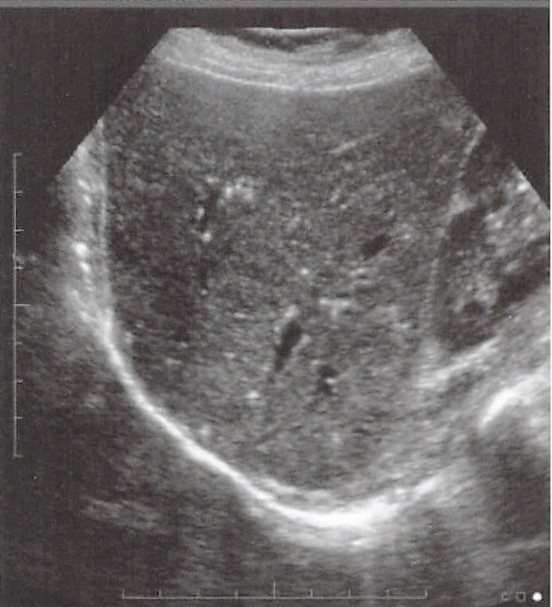
状的强回声。而白血病和 Burkitt 淋巴瘤造成的 “星空征” 则与肿瘤细胞的弥漫性浸润有关。长期禁食导致的 “星空征” 则是由于肝内糖原的损耗所致，在恢复进食后可以消失。
以下几种情况下可以出现“星空征”：
（1）年轻体瘦的健康人、急性肝炎患者、中毒性休克综合征患者、白血病肝浸润患者、长期禁食后的肝脏、Burkitt淋巴瘤累及肝脏、右侧心力衰竭。
（2）Y. Segev 等人发现，在产科超声时胎儿肝脏内出现 “星空征” 可以作为双胎输血综合征的早期征象（图 1-1-2）。受血胎儿的右心容量符合增大导致的心功能不全是其病理基础（来源：Segev Y，Goldberg Y，Riskin-Mashiah S，et al. Starry sky pattern offetal liver sonogram as first sign of twin - twin transfusion syndrome. Ultrasound Ob stet Gynecol，2012，39（6）：723-725.）。
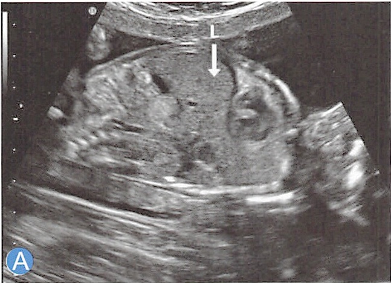
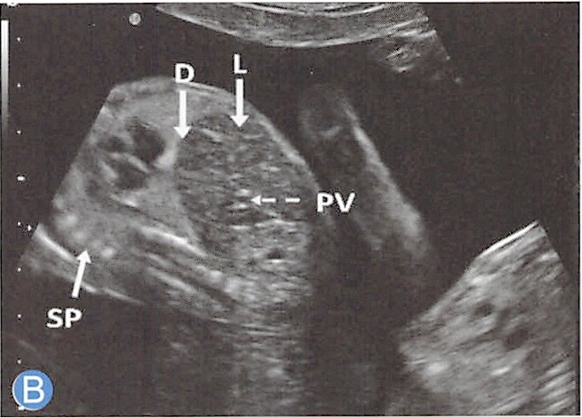
A. 双胞胎供血者胎儿的正常肝（L）；B. 受血胎儿的肝脏内的“星空征”（L），PV：小门静脉壁；D：膈肌；SP：脊柱
二、 距离模糊伪像
问：肝脏巨大囊肿内的强回声是什么伪像（图 1-1-3）？
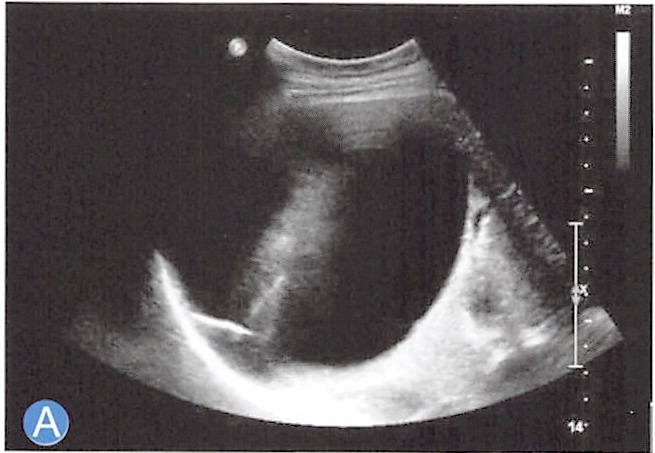
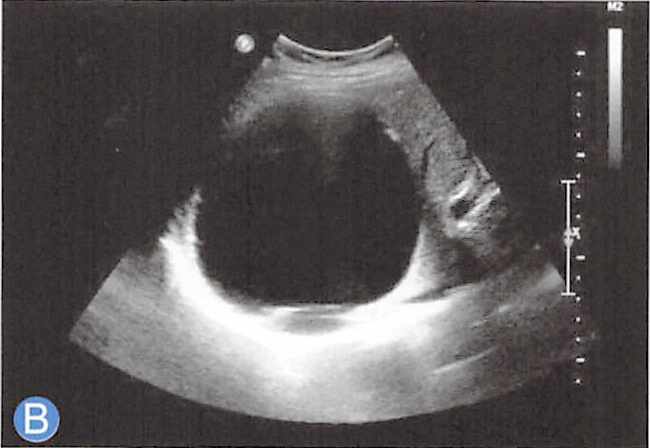
A. 超声显示肝巨大囊肿内见片状强回声；B. 改变探测深度（depth），片状强回声消失
答：距离模糊伪像（Range ambiguity artifact）。
超声成像采用脉冲回声式模式成像，因此所探测的最大深度受到脉冲重复间期（即相邻两个脉冲的间隔时间）的限制。探测的最大深度不超过脉冲重复间期一半的时间内超声所走过的距离。
当相邻的两个脉冲中的前一个脉冲（ Pn）到达的最大探测深度更深方的时候，该处的回声信号返回探头之前后一个脉冲（ Pn+1）已经开始发射（图1-1-4）。
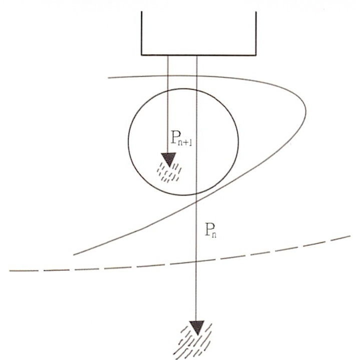
仪器就会误认为这些回声是后一个脉冲返回的，这样前一个脉冲的回声信号就会表达在后一个脉冲刚刚到达的位置。通常情况下，由于声衰减，不会出现这种伪像，但当声束通过巨大囊肿时衰减少，就会出现把最大探测深度更深方的回声表达在较浅的囊肿内。通过改变最大探测深度（延长了脉冲重复间期），就可以消除这种伪像。
三、 振铃伪像
问：图1-1-5为年轻男性健康体检所见。声像图中，白箭头所示的条带状强回声是什么？产生的机制是什么？
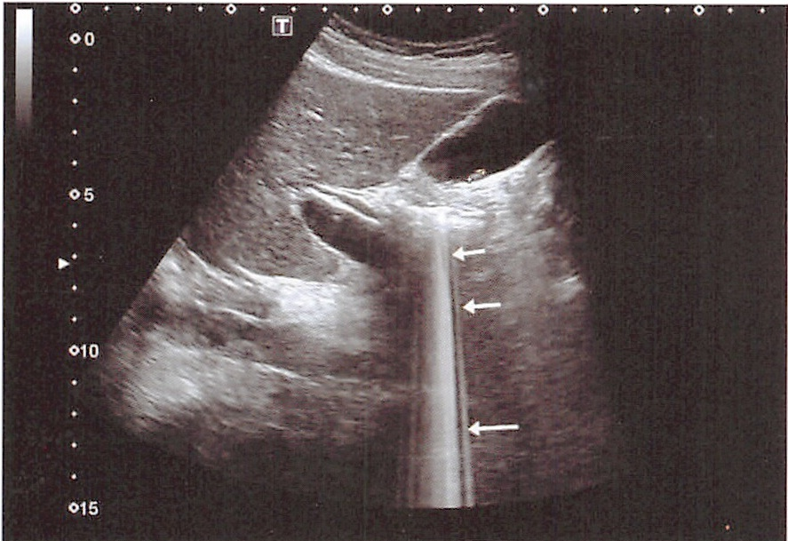
答：振铃伪像( ring-down artifact )和“彗星尾征”是两种常见的多重反射伪像。
1985 年 Avruch L 和 Cooperberg PL 通过体外实验发现，当数个气泡（通常是四个）紧贴在一起构成四面体时，其内包裹的液体面会形成一个喇叭口样，当入射超声进入喇叭口内时，在喇叭口内的特定部位就会发生共振，这就是所谓的“喇叭口放大效应”。这时这一结构就会作为一个新的超声发射器不断产生连续超声波，这种信号返回探头，就会表现为条带状的强回声，而且不会随着深度的增加逐渐衰减（图 1-1-6）。
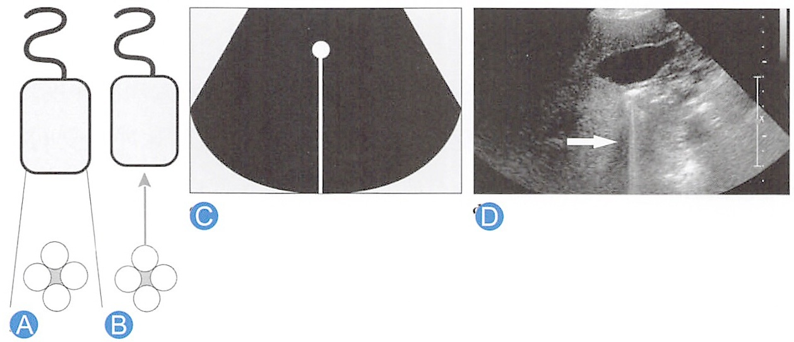
大家熟悉的“彗星尾征”与此不同，它是由于声波在气液界面（或结晶体与液体界面）与壁结构之间的来回反射引起，随着深度的增加会逐渐衰减。与振铃效应的另一区别是“彗星尾”的边缘不干净（图1-1-7）。
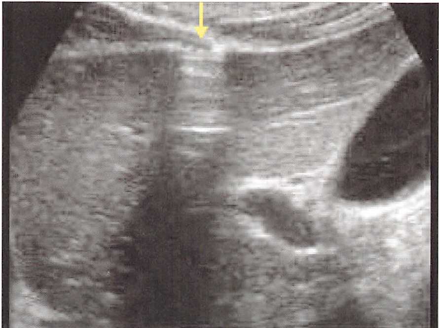
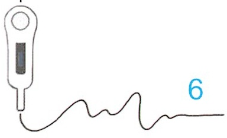
“振铃效应”的一个实用的具体例子是肺间质水肿是超声检查显示的所谓“B线”(图1-1-8)。水肿的间质在近胸膜处形成被肺气包绕的喇叭口(图1-1-9)。“喇叭口放大效应”就会产生明显的无衰减的条带样强回声，可以作为肺间质病变的诊断依据。
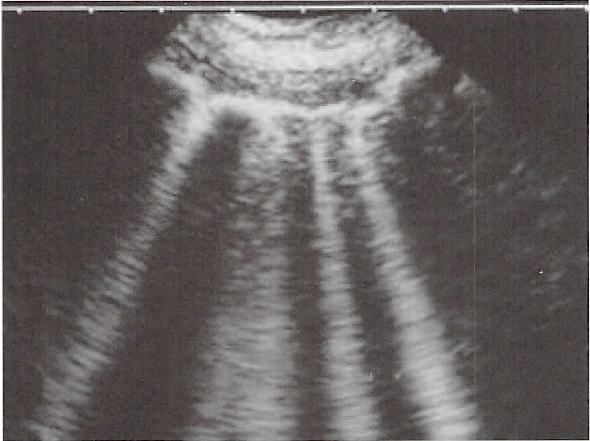
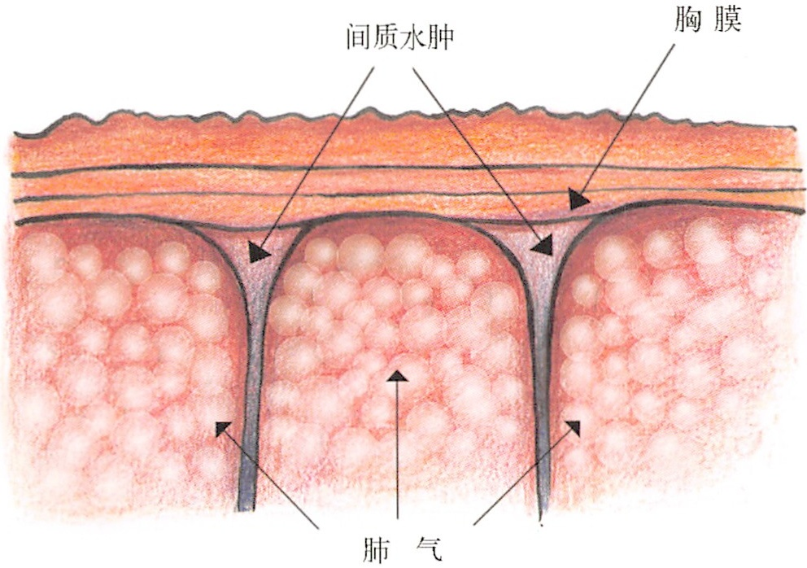
第二节
肝胆脾病变
一、 肝紫癜症（紫癜性肝病）
肝紫癜症（peliosis hepatitis）又叫紫癜性肝病，是一种发生于肝实质内的良性血管性病变，表现为肝脏出现多发充血小囊腔，但缺乏特异的临床表现及实验室检查，多在尸检或手术探查时发现。原因不明，但与恶性肿瘤、感染或药物有关。超声表现缺乏特异性，多显示为肝内的局灶性病变，常被误认为脓肿、占位或血管畸形。组织学活检是确诊手段。peliosis 来源于拉丁语，是“紫色”的意思。
流行病学和临床表现
肝紫癜症的发病率尚不清楚，至少目前看起来是一种少见疾病。肝紫癜症的病因和发病因素多种多样，因此其影响的人群也与其相关的致病因素相关。
患者通常无症状，多在影像学检查或尸检过程中被偶然发现。极少数是由于并发出血、肝大或肝功能异常而就诊。
病理
本病的发病机制还不清楚，可能的机制包括肝窦边界的破裂、肝流出道阻塞和肝小叶中央静脉扩张。
组织学上，肝紫癜症以肝内出现多发的斑驳的充血性窦腔为特征，并伴有相关肝窦的扩张。病变大小从小于1mm到数厘米均可见到。
病因
肝紫癜症的病因或致病因素很多，已知因素包括药物（类固醇激素、口服避孕药、糖皮质激素、他莫昔芬、己烯雌酚、硫唑嘌呤、6-硫鸟嘌呤、6-硫嘌呤和甲氨蝶呤）；毒素（氯聚乙烯、砷化物）；慢性消耗性疾病（如结核、恶性肿瘤等）；以及艾滋病继发性感染［即所谓的杆菌性紫癜，病原有汉赛巴通体（bartonella henselae）和五日热巴通体（bartonella quintana）］。
此外，与肝紫癜症相关的其他几种疾病包括乳糜泄、糖尿病、坏死性血管炎和血液疾病等。同时，肝紫癜症也可发生于肾移植和心脏移植术后。
20%～50%的患者找不到相关发病因素。
影像学表现
肝紫癜症的影像学表现缺乏特异性，最后需要病理学诊断（图1-2-2）。
超声：超声表现缺乏特异性。在脂肪肝患者中，病变大多表现为低回声灶，正常背景的肝脏中多表现为高回声。有的病变边界清晰，有的病变边界不清。有的病变类似肝血管瘤的表现，也有的病变表现出明显的恶性占位的特点。超声造
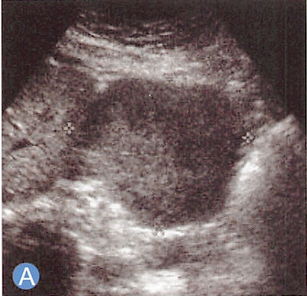
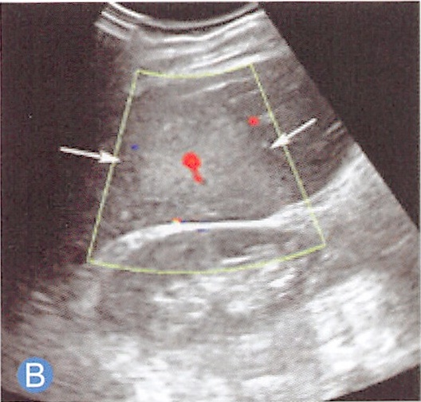
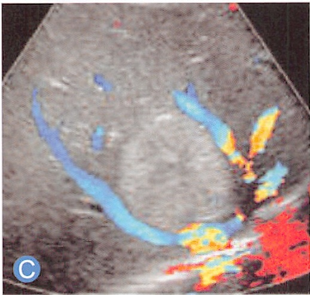
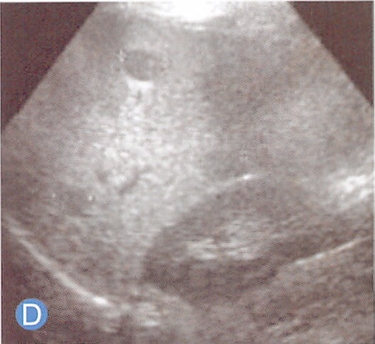
A. 二维超声显示病灶中呈低回声，外形欠规则，边界尚清，内部回声欠均匀；
B. 彩色多普勒超声显示病灶呈高回声，外形不规则，边界模糊不清（箭头），内部回声欠均匀，病灶内可见少量血流信号；
C. 彩色多普勒超声显示病灶呈高回声，外形呈圆形，边界清，内部回声欠均匀，病灶内未见明显血流信号，周边肝静脉略受压，走行欠规则；
D. 二维超声显示病灶中呈数个近无回声，类圆形，边界清，后方回声稍增强（呈囊性表现）
影检查的报告很少，有报告认为可以出现动脉期快速增强，门脉期较早退出的表现，很难与恶性占位（特别是高分化肝细胞癌）鉴别（图1-2-1）。
CT：多表现为低密度病灶。增强 CT 表现为动脉期快速增强，门脉期轻度衰减。增强模式可以表现为均质增强和外周性增强等多种表现。
治疗
主要针对致病因素来治疗。药物/毒素相关的情况在停药后病变可能会消失。
并发症
肝损害、门静脉高压、出血破裂。
鉴别诊断
海绵状血管瘤、肝细胞癌、肝脓肿、肝脏局灶性结节增生（FNH）、肝腺瘤、肝转移癌等。
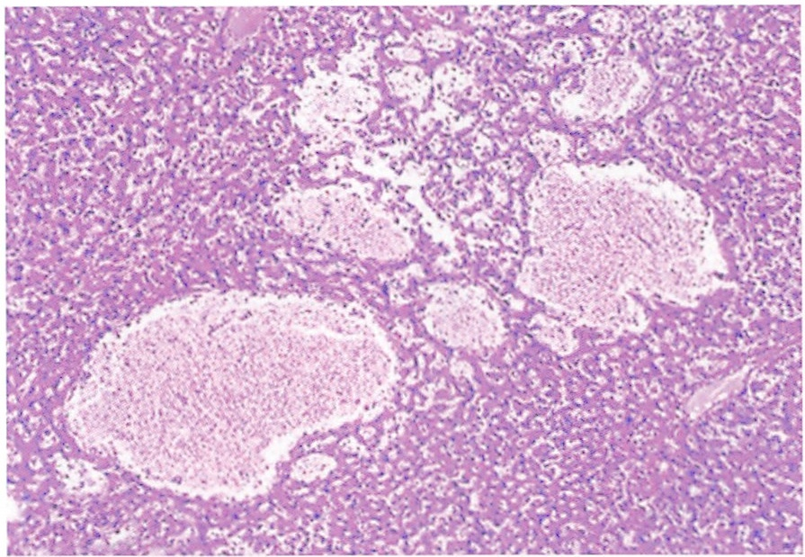
病理诊断显示紫癜性肝病病灶内有大量大小不等的血窦腔，无内膜内衬（AE，×100）
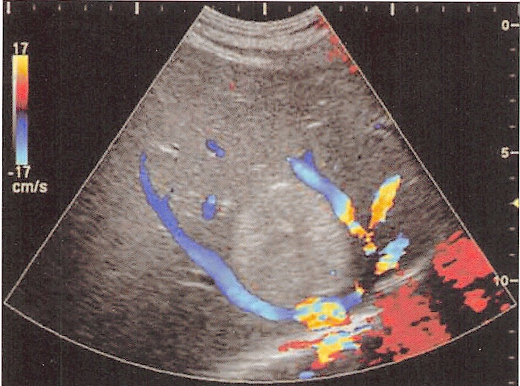
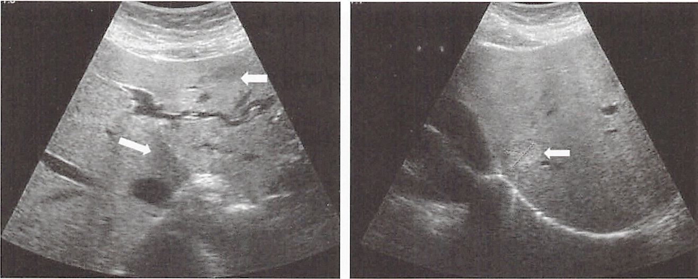
有关肝紫癜症，补充几点：①由于近年来40岁以上的女性中流行所谓激素支持治疗，导致本病在这一人群中有升高的趋势，不过目前还缺乏充分的证据支持（图1-2-3～图1-2-6）；②有报道显示，怀孕是诱发肝紫癜症的一个因素，可能与激素水平的剧烈变化有关，有怀孕期间出现肝紫癜症导致的自发性肝破裂的报道；③肝紫癜症的确诊需要穿刺病理。但是肝紫癜症有发生破裂出血的风险，因此靠近肝脏边缘的病变应该避免穿刺。
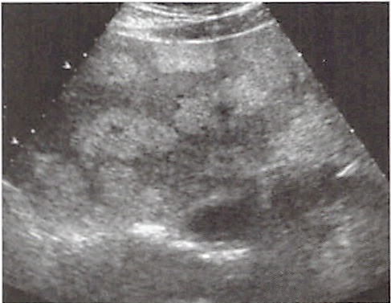
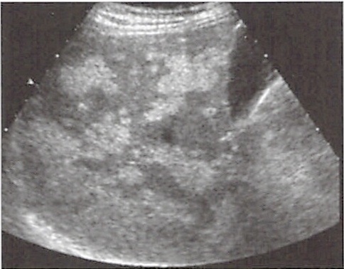
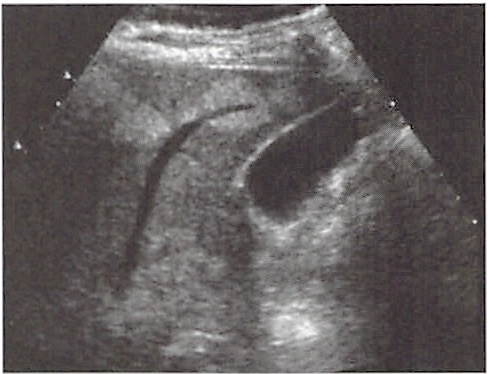
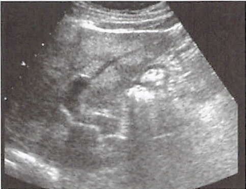
患者女性，40岁，常规超声检查发现肝脏病变。追问病史，患者一年前常规体检肝脏无异常，本次检查前有半年的口服避孕药史，该患者停止口服避孕药后1个月复查，病变基本消失
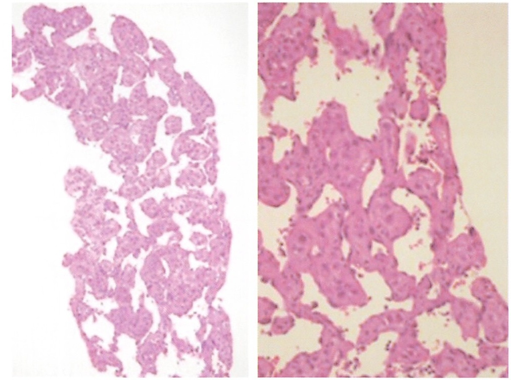
该女性患者肝脏穿刺病理显示病变为扩张肝窦腔结构，其内为血液，壁上无内皮细胞内衬（HE，×40）
二、 肝尾叶乳头状突的超声表现
肝尾叶位于肝脏的后上方。它前方由静脉韧带将其与肝脏本身分隔开，侧后方由下腔静脉将其与肝脏本身分隔开。在近肝门区水平，肝尾叶通过一个横向向右的突起与肝右叶相连，该突起称为“尾状突”（caudate process）；在相同的水平，还有另外一个向左下方的突起，称为“乳头状突”（papillary process）。肝尾叶乳头状突可以一直向下伸入到胃窦后的小网膜囊，并与肝总动脉、门静脉和胰腺颈部相邻。在部分个体中，肝尾叶乳头状突与尾状突之间可能会存在一深度和宽度不确定的“沟”或“裂”将二者分隔开，这个“沟”或“裂”常常是与矢状面平行，也偶有呈半冠状面的。这样，超声检查时在行横断扫查的情况下，肝尾叶乳头状突就可能表现为与肝脏分离的一个肝外的孤立结构。研究发现，有12%的患者在横断面时可以显示孤立的肝尾叶乳头状突（图1-2-8）。此外，有研究发现9.4%的患者在纵断面时肝尾叶乳头状突亦显示为一孤立结构（图1-2-7）。其原因可
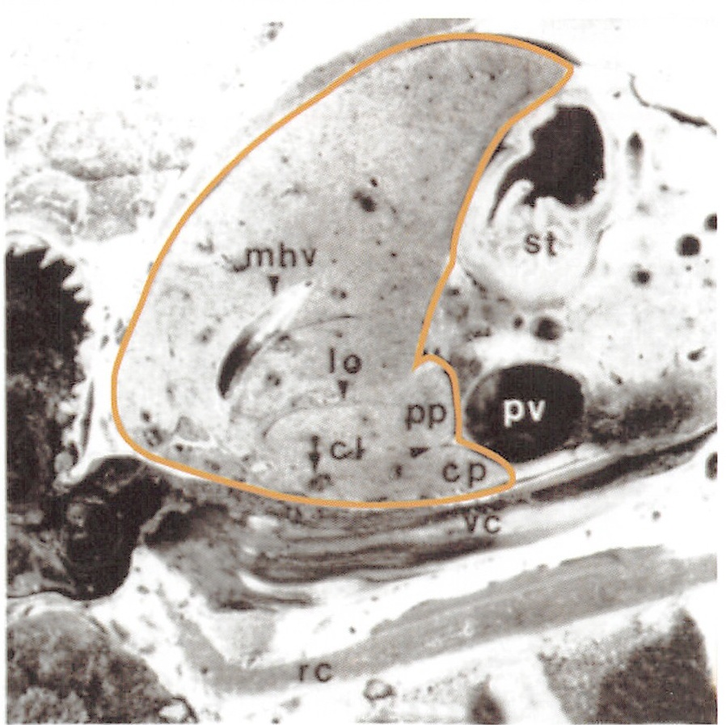
pp: 乳头状突；cp: 尾状突；cl: 尾状叶；mhv: 肝中静脉；vc: 下腔静脉；pv: 门静脉；st: 胃；lo: 静脉韧带
能是这些肝尾叶乳头状突有轻中度的增生，同时它与其上方的肝尾叶主体的连接部相对细小。另外，较小的肝尾叶乳头状突于纵断时往往可以找到与肝尾叶主体相连接的部分，而大部分较大的肝尾叶乳头状突在纵断时则找不到与肝尾叶主体有明确的连接部。
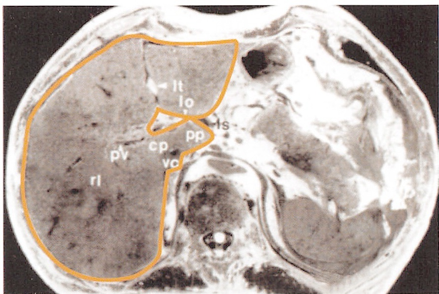
带；lt：圆韧带；rl：右肝
较小的肝尾叶乳头状突在常规超声检查时往往会被超声医师忽略，而且较小的肝尾叶乳头状突于纵断时往往可以找到与肝尾叶主体之间存在明确的连接部，因此一般不会造成误诊。但在研究中发现有超过一半的肝尾叶乳头状突的最大横径大于15mm，而且相当多的乳头状突横断和纵断时均表现为一孤立结构。这种情况下，由于许多超声医师对肝尾叶乳头状突的解剖不熟悉，较大的肝尾叶乳头状突常会被误诊为“腹腔肿大淋巴结”或“胰腺占位”（特别是胰腺颈部占位）。一般情况下，正常的淋巴结很小，二维超声很难将其与周围的组织分辨开来。而肿大的淋巴结则可能会与肝尾叶乳头状突有相似之处。但绝大多数情况下，腹腔肿大淋巴结常常是多发的、分叶状的，而且内部回声复杂，这些方面足以使超声医师做出正确诊断。对于孤立的肿大淋巴结，超声医师要特别小心与肝尾叶乳头状突鉴别。因此，只要熟悉肝尾叶乳头状突的内部回声特点及其典型的解剖位置和其与周围结构的解剖关系，就不难做出正确的判断。
统计分析发现患有肝硬化的患者其肝尾叶乳头状突大多体积较大，显示大的肝尾叶乳头状突（最大横径＞25mm）与肝硬化之间有明显的相关性。Harbin WP 等 1980 年就指出，肝硬化患者往往有不同程度的肝尾叶增生。肝尾叶乳头状突是肝尾叶的一部分，因此在肝硬化患者中，肝尾叶乳头状突自然也会与肝尾叶一起增生。
由于肝尾叶乳头状突邻近胰腺颈部，因此孤立的肝尾叶乳头状突也有被误诊为胰腺占位的可能。特别是纵断时，常常可以见到肝尾叶乳头状突与胰腺颈部紧紧相贴。但由于横断时肝尾叶乳头状突与胰腺不在同一水平，因此可以比较容易地将其与胰腺占位鉴别开来。
肝尾叶乳头状突是上腹部超声检查中值得重视的一个解剖结构，超声医师应熟悉其解剖结构、声像图特点及其与周围器官的位置关系，避免将其误诊为其他异常结构（图1-2-9）。
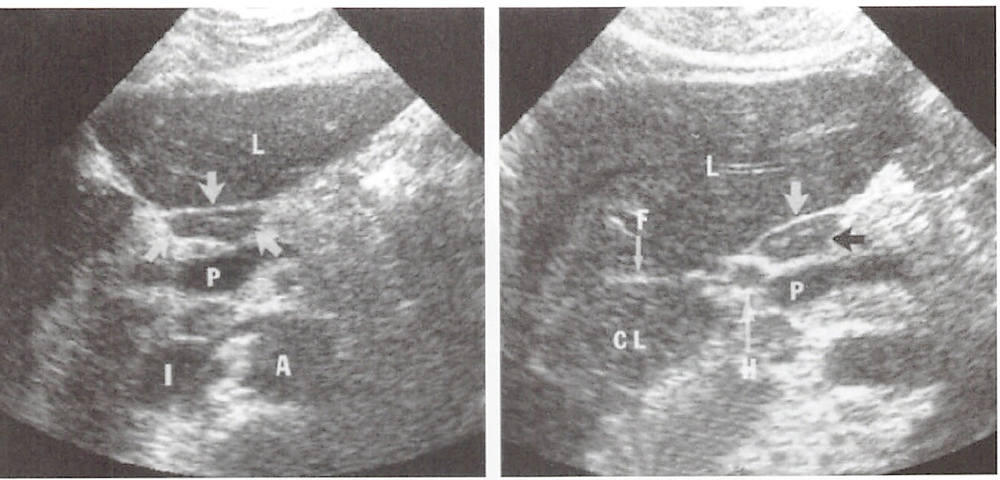
CL：尾状叶；L：肝；P：门静脉；A：主动脉；I：下腔静脉；粗箭头：乳头状突；细箭头：静脉韧带
三、 先天性胆管囊肿 Todani 分型
先天性胆管囊肿 Todani 分型（图 1-2-10）。Type I：占 80%～90%，胆总管部分或全部囊状或梭状扩张，肝内胆管正常（图 1-2-11）；Type II：胆总管
憩室；Type III：胆总管十二指肠部与胰管汇合处的扩张；Type IV a：多发肝内胆管和胆总管扩张；Type IV b：多发肝外胆管扩张；Type V（Caroli 病）：肝内胆管囊状扩张（图 1-2-12）。
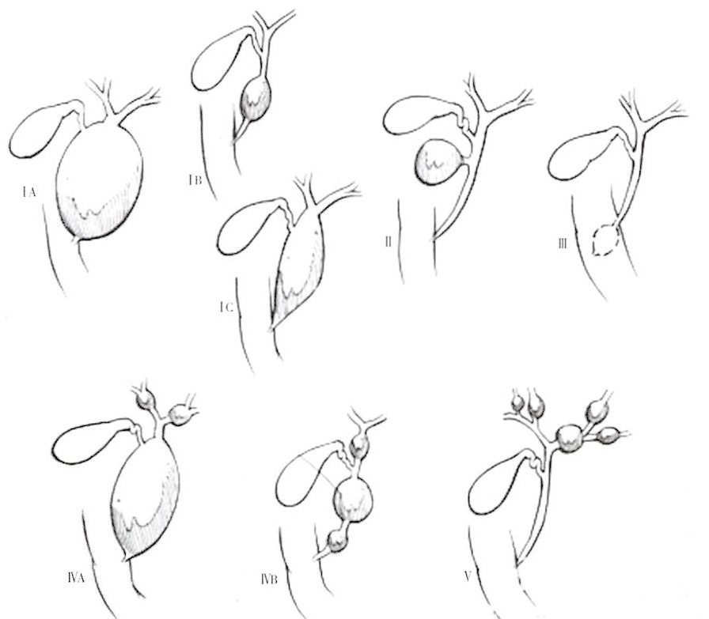
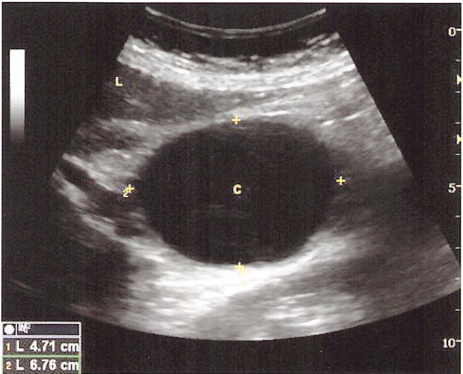
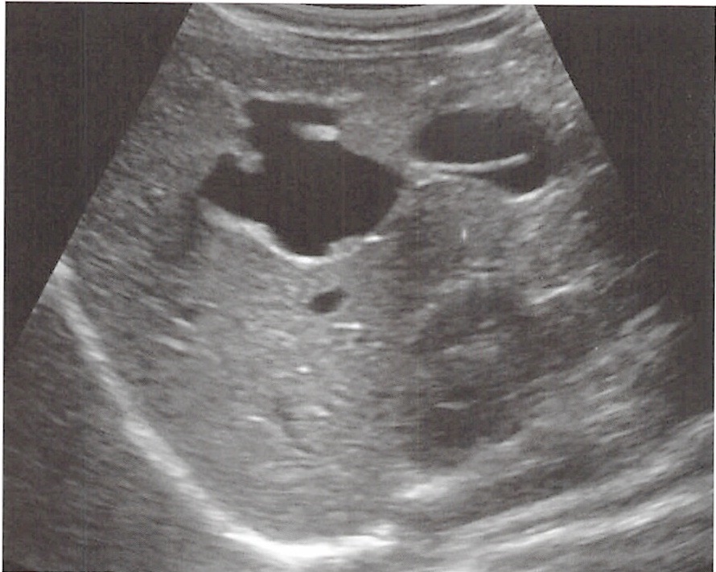
四、 胆囊腺肌症与胆囊收缩功能
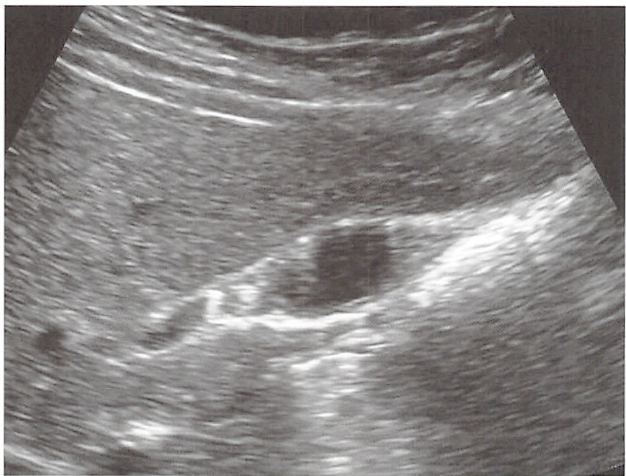
问：为什么胆囊腺肌症的收缩功能增强（图1-2-13）？其实，胆囊腺肌症患者的收缩功能增强并没有得到公认。
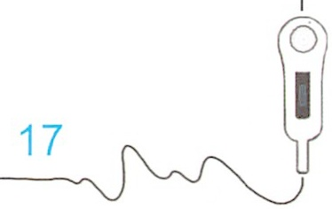
1960 年 Jutras 最早提出胆囊腺肌症是以黏膜和平滑肌增生为主的特征，认为这些特征伴有所谓的高收缩性、高兴奋性和高分泌症状。但是，这一观点更像是臆想和推测，并没有充分的证据证实。
胆囊收缩素核素成像是观测胆囊收缩功能的可靠方法。多组研究利用此法分析胆囊腺肌症的胆囊收缩功能发现：胆囊腺肌症者的胆囊收缩功能是多变的，有增强的、有减弱的、有局部收缩运动异常的，而且这些变化与患者的症状之间的相关性很差。
五、 肝移植的超声诊断
目前，肝移植术已经成为许多终末期肝病的唯一有效治疗手段。原位肝移植在经过近四十年的历史后，手术成功率和术后存活时间已经大为提高，这部分归功于对肝移植术后并发症的及早诊断和及时处理。利用影像技术评价移植肝的形态、结构以及血流灌注情况是早期发现肝移植术后并发症的重要手段。随着肝移植手术的广泛开展，各种用以评价移植物状况的影像技术也不断被采用。超声成像因其具有以下优势而成为肝移植术前术后评价肝实质、肝周及血流状况的首选：①检查时无痛苦，对人体无损伤，操作简便；②能方便获得软组织器官各种方位的断面图像，层次丰富，接近于解剖真实结构；③彩色及频谱多普勒超声成像无须造影剂即可显示门静脉、肝动脉及下腔静脉等血管的解剖结构和血流状况；④能作动态的实时切面显像，便于观察；⑤能及时取得结果并可反复多次地进行动态观察，对危重患者可行床边检查。
1. 术前评价
超声检查作为一种无创的影像学检查手段，在肝移植患者的术前评价方面起着非常重要的作用。术前超声检查的主要目的在于评价患者肝脏的血管状况，特别是肝动脉、门静脉和肝段下腔静脉是否通畅，管腔内是否有血栓存在。此外，对肝实质的病变情况及继发于门静脉高压的侧支循环进行评价也是必需的。
肝移植术前超声检查的重点：①门静脉、脾静脉、肠系膜上静脉通畅与否，腔内有无血栓形成。同时测量肝外段门静脉的内径及长度；②确定肝动脉是否通
畅，确定肝动脉的走行及肝动脉有无变异；③确定下腔静脉内有无血栓；④判断有无门-腔静脉侧支循环存在。重点评价肝门周围侧侧支循环的状况；⑤肝内是否有占位病变；⑥腹水的定量与半定量；⑦患肝体积（大小）的估测；⑧脾脏大小的测量；⑨对于活体肝移植的供者，术前超声评价主要是除外脂肪肝及各种囊实性肝占位。
5%～10%的肝病患者门静脉内有血栓形成，陈旧的血栓机化后与血管壁紧密相连，不宜剥离，这势必会在一定程度上影响术中门静脉的吻合，从而增加手术难度，甚至造成手术失败。因此术前准确判断门静脉内有无血栓以及血栓的性质（新鲜或陈旧性血栓）对于手术成功非常重要。新鲜的血栓多呈低回声，而陈旧的血栓常呈中强回声且回声不均，此外陈旧血栓多伴有门静脉管壁增厚、血栓再通现象。彩色多普勒超声成像评价血栓有无再通现象非常准确。
肝移植术后如果侧支循环持续存在，会分流大量的入肝血流，从而造成因入肝血流不足而导致的肝功能衰竭。肝移植术前准确评价门-腔静脉侧支循环的状况特别是肝门周围的侧支循环的状况尤为重要，了解肝门周围有无扩张的静脉团及其血流状况（如血流速度、方向，血管内径等），对于外科医师的手术设计和术中处理非常重要。
伴有 T3 或 T4 期（TNM 分期）的肝细胞癌的患者，其肝移植后的预后较差，而且肿瘤的复发率极高。因此，肝细胞癌患者的肝移植应非常慎重。术前超声应仔细扫查，明确肝占位的状况以及腹腔内的转移情况，供临床医师及患者参考，以便做出正确合理的治疗选择。
2. 超声解剖
肝移植的手术方法很多，主要有全肝的原位肝移植和肝段肝移植。肝段肝移植又有尸体供肝的肝移植和活体供肝的肝移植。这里主要介绍全肝的原位肝移植的超声解剖。肝段肝移植手术相对复杂，可以参阅有关的专业书籍。
原位肝移植是指将患肝切除，并将供肝的动脉、静脉、门静脉和胆道与患者的相关管道相吻合的手术方式。
全肝的原位肝移植，通常有5个吻合口。常规的原位肝移植是将供体的肝段的下腔静脉与供肝作为整体进行移植，将供肝肝段下腔静脉的肝上断端与患
者右心房下 2 ∼ 3 cm 处的下腔静脉断端做端 - 端吻合，是为上吻合口。将供肝肝段下腔静脉的肝下断端与患者下腔静脉的另一断端作端 - 端吻合，是为下吻合口（图 1-2-14）。现在，许多外科医师采用“背驮式”下腔静脉吻合术，即保留患者的肝段下腔静脉，将供肝的肝段下腔静脉的肝下断端结扎，其上断端与
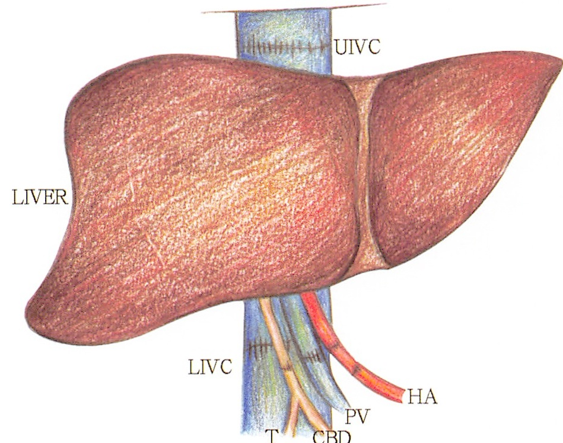
LIVER：供肝；UIVC：下腔静脉上吻合口；LIVC：下腔静脉下吻合口；HA：肝动脉；PV：门静脉；CBD：胆总管；T：“T”管
患者的下腔静脉做端 - 侧或侧 - 侧吻合，这种情况下下腔静脉只有一个吻合口（图 1-2-15）。
肝动脉因为比较细小，而且常常有变异，因此吻合的难度较大。多数情况下，供肝的肝动脉与受体的肝动脉并不匹配，有时还会出现双支肝动脉变异。通常情况下，外科医师会根据不同的情况采用不同的吻合方法。一般将供体的肝动脉、腹腔干以及一小部分腹主动脉保留下来，断端呈喇叭口样，同时结扎多余的分支，这段保留下来的动脉称为“Carrel补片”。最常用的吻合方法是将“Carrel补片”与受体的肝动脉于肝下间隙作端-端吻合。如果不能直接吻合，则采用搭桥的方式将“Carrel补片”与受体的腹主动脉直接吻合。
门静脉一般都采用端 - 端吻合。当受体的门静脉内有血栓形成、长度不足或弹性降低时，需要通过搭桥的方式将受体的肠系膜上静脉与供体的门静脉相吻合。若门静脉内为较新鲜的血栓，可于取栓后直接与供肝门静脉作端 - 端吻合。
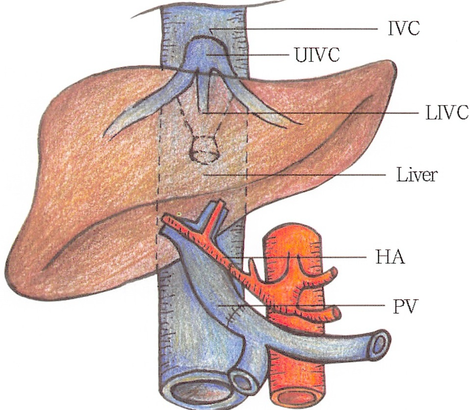
Liver：供肝；IVC：患者下腔静脉；UIVC：供肝上下腔静脉；LIVC：供肝下腔静脉；HA：肝动脉；PV：门静脉
胆总管的吻合通常都采用端 - 端吻合术，同时于吻合口处放置 “T” 管，“T” 管一般留置几周到数月不等。当无法行端 - 端吻合时，则采用 Roux-en-Y 式胆总管空肠吻合术，同时于吻合口处置入支架。
3. 超声扫查技巧及检查内容
只有获得高质量的图像和血流速度频谱，才能够使移植肝的超声评价得到最理想的效果。这一方面需要选择穿透力强、分辨力好、多普勒灵敏度高的超声诊
断仪，另一方面也需要超声医师有较熟练的扫查技巧，并将仪器的设置（特别是多普勒设置）调到恰当的位置。其中滤波、速度比例尺（PRF）和多普勒增益是最关键的三个设置。
滤波：多普勒滤波可以减少彩色和频谱多普勒的噪声。但如果滤波设置偏高，也会影响正常的低速血流的显示。而低速血流的显示在肝移植术前评价门静脉的血流及肝移植术后早期评价肝动脉血流状况时特别重要。因此，一般应该在不产生明显噪声的情况下将滤波设置在尽可能低的水平。
PRF：超声检查时，应首先将 PRF 设置在最低水平。这便于超声医师对有无血流信号的判断。但过低水平的 PRF 设置会产生混叠现象。当混叠现象出现时可以适当调 PRF，以便得到最佳的血流显示。
多普勒增益：在不出现明显噪声的情况下，应该将多普勒增益设置在最高水平。
肝移植术后早期的超声扫查极为重要，通常要求术后24小时内行第一次超声检查，术后一周内至少每日一次检查，必要时应随时检查。早期的扫查结果一方面用于评价手术是否成功，另一方面也是对未来移植物的功能做出正确评价的基础。术后早期由于受到伤口、引流管等障碍物的影响，扫查时需要超声医师采用适当的手法，尽量避开这些障碍以获得最理想的声像图。
一次完整的术后超声检查的内容包括：①肝实质：回声是否均匀，肝内有无液性区域，有无坏死，有无新生物等；②肝周间隙、盆腔、腹腔：有无积液、积血，积液、积血的定量定性；③胆道系统：肝内外胆管有无梗阻（特别是吻合口），胆管内有无沉积物或结石；④肝动脉：确定肝动脉（包括肝内及肝外段肝动脉）是否通畅，并分析其血流速度频谱；⑤门静脉：门静脉管腔是否清晰，血流速度频谱是否正常（特别是吻合口处）；⑥肝静脉：肝静脉血流是否通畅，血流速度频谱是否正常；⑦下腔静脉：肝静脉血流是否通畅，血流速度频谱是否正常，特别要注意上下吻合口处。
4. 肝移植术后并发症
（1）肝周积液和积血。肝周积液在肝移植术后非常常见，积液常见的部位为右肝下间隙、右膈下、肝包膜下、左肝下间隙等，主要是血肿和渗出性的包裹性
积液。胆漏和脓肿相对少见，但临床症状明显，需要临床医师和超声医师高度重视。位于肝门区的包裹性积液应该与假性动脉瘤和假性门静脉瘤相鉴别，彩色及频谱多普勒超声对二者的鉴别特异度和灵敏度都很高。
利用超声可以通过对积液内回声特点的分析初步确定积液的性质，这对临床医师选择合适的治疗方式十分重要。必要时，还可以在超声引导下进行穿刺引流和置管。另外，超声成像还可以作为一种简便易行的随诊手段对肝周积液随诊观察，用以判断积液量的变化。
肝内肝裂间积液和右肾上腺血肿是肝移植术后两种肝周积液特例，它们的形成与肝移植手术本身直接相关：肝内肝裂间积液是肝移植术后一种特殊类型的积液。肝移植手术前需要将供肝的附属韧带剔除掉，这些韧带正常情况下是深入到肝实质内形成肝裂，韧带剔除后，肝裂就会与腹腔直接相通，因此腹腔内的积液常常会经这些韧带裂口进入肝裂间，即表现为肝内肝裂间积液。应注意将肝内肝裂间积液与肝内的其他囊性病变（如肝硬化坏死、胆漏等）相鉴别。肝内肝裂间积液发生在肝裂间，多呈条带状沿肝裂分布，边界清晰（图1-2-16）。这些特征不难与肝硬化坏死等肝内其他囊性病变相鉴别。
右肾上腺血肿是与原位肝移植手术直接相关的一种特殊类型的术后出血性并
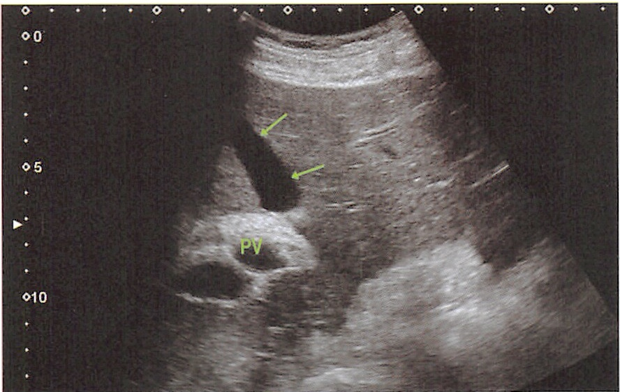
箭头：裂间积液；PV：门静脉矢状部
发症，有报道该并发症发生率约为10%。右肾上腺静脉汇入下腔静脉处位于右肾静脉和肝静脉汇入下腔静脉处两点之间。前面提到原位肝移植时要将患者的肝段下腔静脉一同切除，这就需要将右肾上腺静脉分离出来并结扎（图1-2-17），而右肾上腺的静脉引流则由副肾上腺静脉代偿。右肾上腺静脉结扎后在副肾上腺静脉代偿不能的情况下就会导致右肾上腺静脉性梗死合并出血。右肾上腺出血的超声表现为右肾上腺区域出现不均质的异常回声包块，常常边界清晰，伴有血肿破裂时会边界模糊不清，血肿本身的回声特点与血肿形成的时间有关，早期呈强回声，随着时间的推移，回声渐低，直至变为无回声乃至完全吸收（图1-2-18）。右肾上腺血肿破裂出血会造成严重的后果，肝移植术后需要严密的超声随诊来监测右肾上腺区，对右肾上腺血肿做到早期发现，早期处理。“背驮式”原位肝移植术采用保留患者肝段下腔静脉手术方式，这种手术方式无须分离结扎右肾上腺静脉，因此也会减低术后右肾上腺出血的发生率。
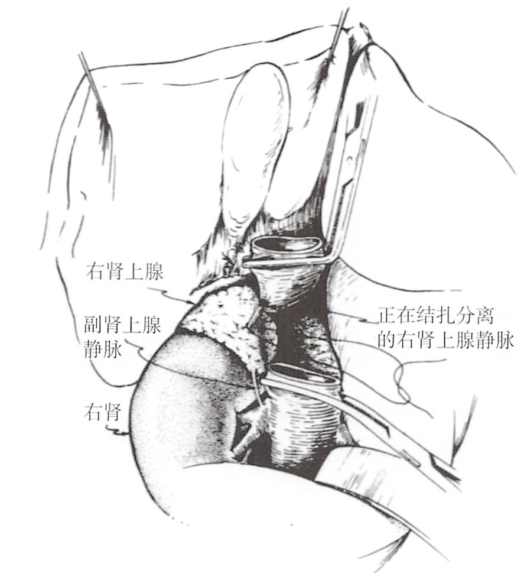
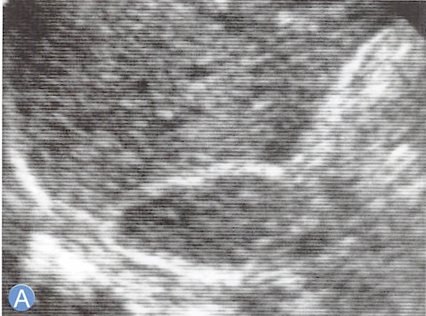
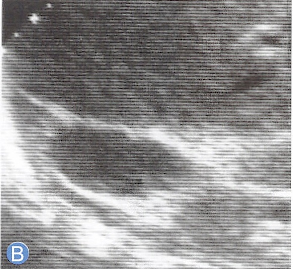
（2）肝实质内局灶性异常回声改变。肝移植术后多种原因会造成肝实质局灶性异常回声改变。
肝实质内不规则的局灶性异常回声一般继发于其他的并发症，如肝动脉狭窄和血栓形成、慢性排异反应等。肝动脉狭窄和血栓形成导致的肝段缺血和坏死常常会继发感染从而形成肝脓肿。胆道系统的血供来自肝动脉，因此，肝动脉血栓形成常会造成胆管壁的坏死而形成胆漏，从而在肝内形成不规则的液性区。肝移植后的免疫抑制会导致移植物出现淋巴瘤样综合征，称为肝移植后的淋巴增生异常（PTLD），其超声表现与非霍奇金淋巴瘤类似，表现为肝内多发的结节样病变，也可表现为肝内浸润性的肿块。肿瘤患者行肝移植治疗，发现肝内的任何肿块都要考虑是否为原发肿瘤的复发或转移（图1-2-19）。长期使用抗排异反应的药物则会造成移植肝的局灶性脂肪浸润。
从声像图上来看，上述各种情况均表现为肝实质内的局灶性回声异常。肝缺血坏死的回声特点取决于缺血发生时间的长短，一般表现为回声减低，其范围往往是局限于某一肝段或肝叶。脓肿的回声特点除了与脓肿形成的时期有关外，还与脓肿内不同成分的多少有关，脓肿内出现了气体强回声提示产气杆菌感染。而局灶性脂肪浸润一般表现为局限性均质的强回声区。肝移植后的 PTLD，其超声表现与非霍奇金淋巴瘤类似，表现为肝内多发的结节样病变，也可表现为肝内浸润性的肿块。
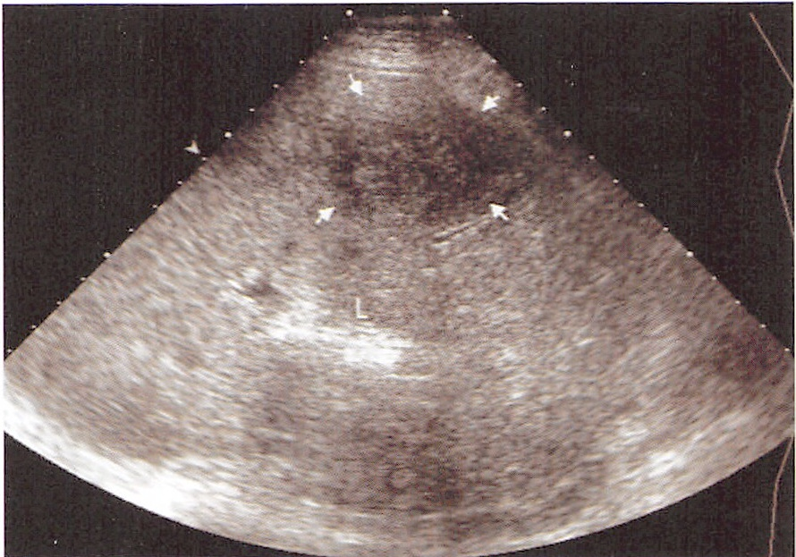
5. 肝动脉血栓形成
肝动脉血栓形成是肝移植术后最常见的一种血管并发症，多发生于术后前6周内，成年人肝移植发生率为4%～12%，儿童肝移植的发生率更高达15%～42%。肝动脉血栓形成需要及时溶栓治疗或行再次肝移植。由于肝动脉血栓形成的临床表现如转氨酶升高、肝缺血坏死、胆漏等常在血栓形成后数天才出现，彩色及频谱多普勒超声成像则能够在临床症状出现前发现和诊断。
Flint EW 等提出的检查手法简便实用，首先以二维超声经肋间斜断显示肝门区，随后行彩色多普勒检查，彩色增益适当调高，以刚刚不出现噪声为宜，彩色比例尺一般调至 15cm/s 左右。于肝门区门脉前方寻找肝动脉，若有肝动脉显示，则进一步行脉冲多普勒检查，取样容积为 1～2mm。无论肝门区有无肝动脉多普勒信号显示，都沿门脉左支和右支扫查，寻找肝动脉的肝内分支并记录其多普勒频谱信号。
超声提示肝动脉血栓形成的指标：①肝门区及肝内肝动脉血流信号消失，这是判断肝动脉血栓形成的最可靠的指标；②肝外动脉分支内直接探到动脉血流信号消失，有时可观察到肝动脉肝外段血流信号中断；③肝外动脉消失，肝内动脉信号搏动减弱，肝内动脉频谱幅度下降；④肝门区直接看到侧支循环形成；⑤肝
内动脉阻力指数（RI）减低和加速时间（SAT）延长；在有侧支形成的情况下，肝内往往仍能检测到动脉频谱，但常伴有 RI 减低（<0.5）和加速时间延长（SAT > 80ms）（图 1-2-20）；⑥其他继发改变，由于肝脏的缺血，有时可在声像图上出现梗死的征象；另外胆管仅由肝动脉供血，缺血往往较重，可出现胆漏、脓肿、肝内胆管扩张等改变。
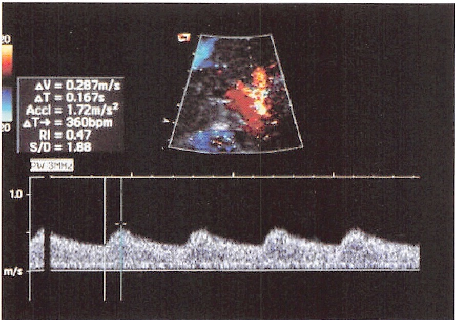
此外，要注意排除一些假阳性和假阴性的情况。第一，不要把肝外的其他动脉误认为肝动脉，第二，要注意仪器的设置及灵敏度要能够显示低速的血流信号。肝移植术后早期由于动脉壁水肿，排斥反应，肝动脉狭窄、细小、成角、解剖异常，病毒性肝炎，肝组织水肿等原因常常会造成肝动脉的低血流状态，不要误认为是肝动脉血栓形成。对于循环系统已稳定的患者，在未能检出肝动脉频谱时，可给予硝苯地平10mg舌下含服，30分钟后再次检查，此法可提高部分低血流灌注病例肝动脉频谱的检出率。第三，要注意肝移植术后肝动脉的解剖位置的改变，检查前应了解术中肝动脉吻合口周围的情况，准确识别位置发生改变的肝动脉，以减少误诊。
（1） 肝动脉狭窄
肝移植术后肝动脉狭窄的发生率约为1%，主要发生于吻合口处。
肝移植术后肝动脉狭窄的超声表现（图1-2-21）：①肝动脉局部高速血流，彩色多普勒显示局部血流信号呈明亮的五彩样彩色镶嵌信号，局部最大流速 >2m/s；②肝内肝动脉血流信号异常，表现为流速减低，频谱形态为圆钝型，频谱上升段平缓，加速度时间延长，加速度时间 >80ms，RI<0.5。
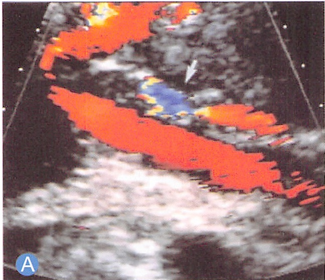
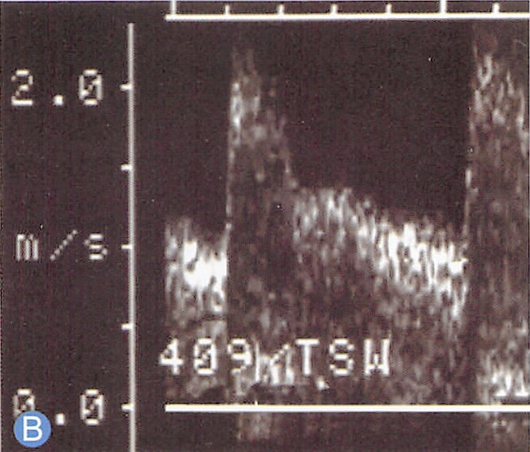
（2） 肝动脉舒张期血流减少的意义
肝动脉舒张期血流减少，即肝动脉 RI 增高是肝移植术后常见的一种异常现象，多见于肝移植术后早期，一般认为与肝动脉壁的水肿有关，是由于移植物的切取、保存、植入过程中造成的缺氧，生理干扰及外伤所致。一般于术后的1～2周内恢复正常（图1-2-22）。持续的肝动脉舒张期血流不足，要结合临床考虑肝动脉血栓形成、排异反应的可能。
而肝动脉由正常状态渐变为上述的肝动脉阻力增高状况的频谱，则提示预后不良，这种表现常常是肝动脉血栓形成前的一种表现。
（3） 假性动脉瘤形成
假性动脉瘤形成是肝移植术后相对少见的一种并发症。可发生于肝内，也可发生于吻合口周围。发生于吻合口周围的假性动脉瘤应注意与包裹性积液鉴
别，最简便实用的鉴别手段是多普勒超声。肝移植术后假性动脉瘤超声表现（图1-2-23）：二维超声见局部为一囊性搏动性包块，彩色多普勒超声见囊内为彩色涡流信号（阴-阳征），频谱多普勒于瘤体的颈部可探及“来回型的动脉频谱”。假性动脉瘤有时可能会侵入邻近的门静脉、肝静脉甚至胆管内，造成动静脉瘘或动脉胆管瘘。由于假性动脉瘤有破裂的危险，一旦诊断确立，应该尽快行栓塞治疗和外科手术治疗。
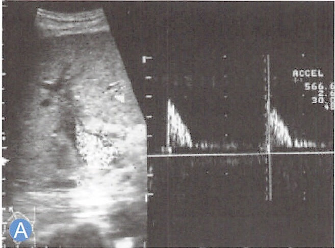
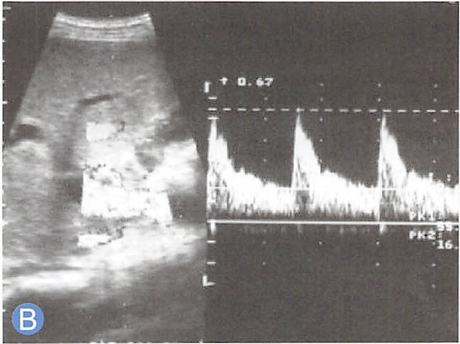
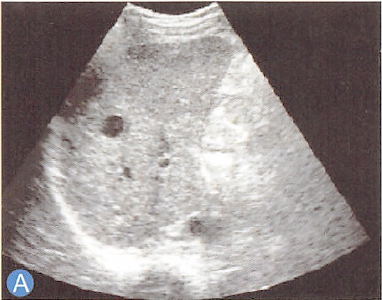
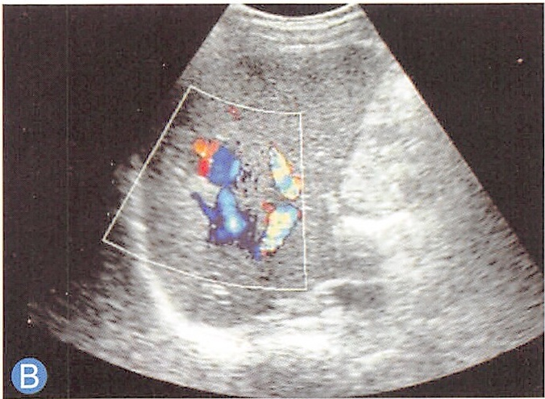
（4） 动静脉瘘及动脉胆道瘘
动静脉瘘及动脉胆道瘘常发生于穿刺手术后。彩色多普勒可以显示瘘口、载
流动脉及引流结构。频谱多普勒可以显示动静脉瘘的高速低阻样血流信号，频窗消失。
（5） 门静脉异常
肝移植患者术前一般都伴有门静脉高压，因此，肝移植术后早期，长期处于高阻力状况下的门静脉遇到新的低阻力状况的移植物时，一般会出现门静脉血流明显加速的情况，有时血流速度会高达100cm/s以上，多数情况下会于3个月左右逐渐下降至30cm/s。这种移植术后早期的门静脉流速增高的表现是一种正常现象，应注意与吻合口狭窄造成的流速增高相鉴别。有报道认为肝动脉血栓形成后常伴有门静脉内径增宽和流速增快，其机制可能与动脉供血减少后门静脉代偿有关，但在临床实践中未能证实此点。
门静脉吻合口狭窄一般表现为吻合口处的局部血流速度增加，出现湍流信号。不过，由于供体与受体的门静脉管径不一定完全匹配，吻合口处出现较轻的湍流和流速增高不应视为吻合口狭窄。因此，只有当吻合口处的血流速度达到门静脉其他部位流速3倍以上时，才诊断门静脉吻合口狭窄（图1-2-24）。
肝移植术后门静脉频谱出现搏动性改变，常常提示移植物存在动脉－门静脉瘘，这种情况尤其多见于肝段肝移植者（图1-2-25）。动脉－门静脉瘘的持续存在会造成移植后门静脉高压，从而导致移植失败。因此，发现搏动性门静脉频谱时要及早行动脉造影术，寻找瘘口位置并及时封堵。
肝移植术后门静脉内血栓形成并不常见，二维超声诊断门静脉内血栓形成非常准确，表现为门静脉管腔内出现不同回声特点的实性团块，新鲜血栓多呈低回声，同时常伴有肝内门静脉的流速减低。
（6） 下腔静脉和肝静脉
正常情况下，肝移植术后下腔静脉及肝静脉频谱形态表现为典型的三相波。下腔静脉和肝静脉三相波消失、频谱曲线变平坦主要继发于不同原因（如肿物、积液、血栓等）造成的下腔静脉梗阻。肝组织本身的水肿对下腔静脉和肝静脉的压迫也可以导致三相波消失、频谱曲线变平坦。由于移植后的急性排异反应主要表现为肝组织水肿，因此，移植肝发生急性排异反应时也常常表现为下腔静脉和肝静脉三相波消失、频谱曲线变平坦，但缺乏特异性。
下腔静脉上吻合口狭窄也可表现为下腔静脉和肝静脉三相波消失、频谱曲线
变平坦。而吻合口处出现五彩湍流信号、局部血流速度增加以及肝静脉扩张是诊断下腔静脉吻合口狭窄的直接征象（图1-2-26）。
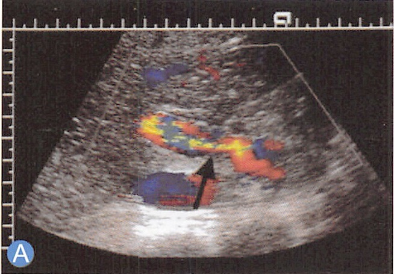
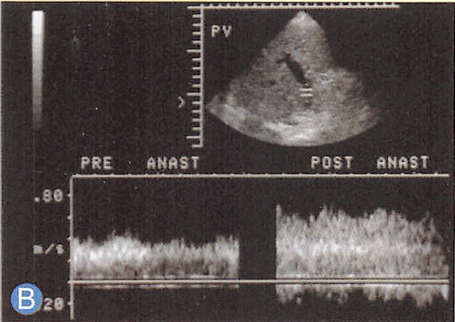
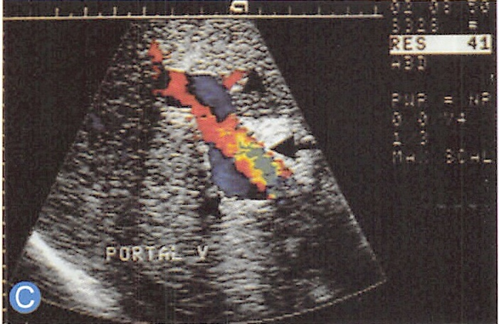
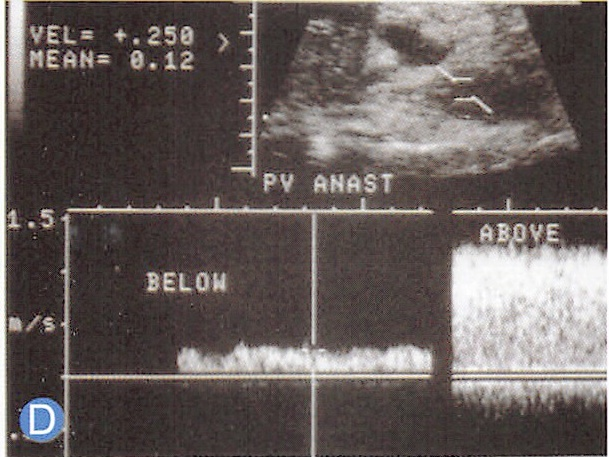
A. 二维超声显示狭窄处的高速血流；B. 彩色多普勒超声显示狭窄处局部五彩湍流信号
下腔静脉血栓形成相对罕见，而且常常继发于下腔静脉吻合口狭窄。二维超声可以清晰显示下腔静脉管腔内的血栓结构，彩色多普勒超声还可以协助诊断是否有部分血流通过以及血栓有无再通现象。要注意的是，不要把“背驮式”原位肝移植术后患者的下腔静脉与供肝下腔静脉间的组织回声误认为是下腔静脉血栓形成。
（7） 胆道并发症
肝移植术后胆道并发症的发生率约为15%。但超声评价胆道并发症有一定的局限性。经“T”管造影是确诊肝移植术后胆道并发症的可靠方法。拔除“T”管后，超声检查可作为评价胆道并发症的首选。
胆道狭窄是比较常见的并发症，一般发生于吻合口处，也可以发生于其他部位。特别是肝动脉血栓形成后、排异反应和感染后，胆道狭窄的发生更为常见，而且位置不确定。正常情况下，胆总管内径为4～5mm，而肝内胆管不显示。肝内外胆管普遍性和局限性扩张是超声检查时提示胆道狭窄的重要参考指标，但具体的狭窄部位和狭窄原因的确定往往需要造影检查。
胆管内的沉积物及胆管结石亦可发生于肝移植后。一般情况下，超声检查可以显示胆管走行区的回声增强区。但由于肝内胆管沉积物多呈等回声，容易漏诊，检查时要特别注意。
（8） 排异反应
肝移植术后排异反应以急性排异反应最多见，发生率在30%～70%。超声引导下穿刺活检是确诊移植肝排异反应的最佳手段。许多学者提出大量的超声征象来提示排异反应的发生，但都缺乏特异性。下述的两个征象提示移植肝发生排异反应较为可靠：①门静脉周围的环形水肿带，此征象也见于肝门淋巴引流受阻的情况；②肝静脉三相波消失，呈连续性的平缓波，但此征象亦见于下腔静脉梗阻、狭窄及肝细胞水肿。
另外，移植肝发生排异反应时会伴有门静脉流速下降，肝动脉阻力增高，胆管轻度扩张的表现，但利用这些表现提示发生排异反应的特异度很差，因此，不能作为提示移植肝发生排异反应的诊断指标。
与移植肾急性排异反应时表现为肾动脉阻力增高不同。肝移植后肝动脉阻力增高与排异反应之间缺乏明确的相关性。
（9） 超声引导下移植肝组织学活检
肝移植术后发生免疫排异反应的及早诊断与治疗是关系到移植肝存活及远期效果的关键。而排异反应很多时候的临床表现并不典型，病理学诊断是确诊移植肝排异反应的金标准。肝组织活检是诊断移植肝排异反应及不明原因的肝功能恢复不良的重要手段。超声监视或引导下的活检术简便易行，并发症少，可以避免伤及邻近脏器，因此，超声引导下的移植肝组织学活检成为肝移植术后诊断排异反应的常规手段。诊断排异反应要求肝组织标本取到6个以上汇管区，因此，一般建议采用18G的粗针进行活检。目前，超声引导下自动活检术因其快速、安全、取材满意等特点已成为首选的活检方法。
肝移植术后早期患者多肝功能差，全身状况不良，任何创伤造成的并发症都可能给患者带来严重的后果。为提高肝穿的安全性可以采取彩色多普勒超声下引导穿刺，以避开血管，同时应注意避开胆道、肺、胸腔、肝周积液等。常规于右肋间取右前叶肝组织。由于肝移植术后排异反应可随时发生，免疫抑制剂使用及冲击后排斥反应的控制情况仍需以病理诊断为依据，因此，肝移植术后早期多次的肝组织穿刺活检是必需的。一般认为，较短时间内多次肝穿是比较安全的，而患者的肝功能、出凝血时间延长、血小板严重减低者则会影响肝穿的安全性。
穿刺活检后出血是最常见的并发症，多见于肝功能差、凝血机制障碍等患者。其他少见的并发症还有动静脉瘘、动脉胆道瘘、假性动脉瘤形成等等。
六、 脾脏 Gandy-Gamma 结节
Gandy-Gamma 结节或称 Gandy-Gamma 小体是指脾脏实质内的一种黄褐色或铁锈色的小灶，主要见于门脉高压或镰状细胞贫血引起的脾肿大患者。Gandy-Gamma 结节主要成分是含铁血黄素和一些钙质沉积物（图 1-2-27），可能是微小的血管周围出血后瘢痕形成所致，得名于法国医生 Charles Gandy 和意大利医生 Carlos Gamma。
病理诊断显示血管壁周围的类圆形 Gandy-Gamma 结节（长箭头）和弥散的含铁血黄素颗粒（黄箭头）(AE，×100)
门脉高压是脾脏 Gandy-Gamma 结节的最主要的原因，见于 9%～12% 门脉高压患者。Gandy-Gamma 结节也见于阵发性夜间血红蛋白尿、溶血性贫血、镰状细胞性贫血、白血病和淋巴瘤以及接受输血的患者、血管肉瘤和获得性血色素沉着症。还不清楚后述的几种情况中，Gandy-Gamma 结节是疾病本身的一种表现还是继发于门脉高压。
声像图上，Gandy-Gamma结节表现为弥散分布于脾脏实质内的点状高亮回声，通常后方不伴有声影（图1-2-28），但结节内的钙质含量较多时也可能会伴有弱声影。不过，门脉高压也可以造成充血性的脾内细小静脉壁的硬化和纤维
化，从而造成脾实质内出现弥漫性的“小等号样”或“短线样”高回声，这种情况称为“脾界面征”（splenic interface sign，图1-2-29）。
超声显示 Gandy-Gamma 结节（箭头），表现为脾脏实质内弥散分布的高亮的点状小灶状回声，后方无声影
七、 胆管错构瘤的超声表现
1918年瑞士病理学家Von Meyenburg首次描述胆管错构瘤，因此，胆管错构瘤又被称为Von Meyenburg complexes。胆管错构瘤是一种少见的胆管良性畸形，由一组被胶原基质包裹的不规则扩张的肝内胆管构成（图1-2-30）。病灶大小通常在5mm以下，弥散多发且不均匀地分布于肝实质内，一般位于门脉周围，不与胆道系统相通，偶尔聚集性的胆管错构瘤在影像学上也可以表现为较大的孤立性病变。胆管错构瘤无明显的临床异常。胆管错构瘤主要是尸体解剖时的偶然发现，占尸体解剖的0.6%～5.6%。随着现代影像学的发展，越来越多的胆管错构瘤患者是在临床影像检查过程中检出。
病理诊断显示病变由分叶状不规则扩张的胆管（长箭头）和纤维性基质（星号）组成，基质内有较多的中性粒细胞和组织细胞（HE， × 100），细箭头：胆管内壁细胞
胆管错构瘤可能是在胚胎发育后期肝内胆管系统发育过程中胆管板重构受阻的结果。胆管板畸形与胆管错构瘤、先天性肝纤维化、常染色体隐性遗传性多囊
肾患者的肝囊肿、多囊肝以及 Caroli 病的形成密切相关。因此，胆管错构瘤常常与这些疾病合并出现。
声像图上，胆管错构瘤通常表现为无数微小的高回声或低回声病灶，通常 < 10mm，肝内分布不均；同时，肝内可见多发的散在的小囊肿和散在的“彗星尾征”常常是本病具有鉴别意义的特殊征象（图1-2-31～图1-2-34）。病变表现为不同的回声强度的根本原因在于病变内扩张胆管的大小：在某一特定的大小上，这些微囊结构和周围的基质一起就会表现为高回声改变；大于上述大小，可能就会显示为明确的小囊肿；低于上述大小，或许就会显示为低回声灶。而彗星尾的出现往往是由于某些特定大小的扩张胆管的多重反射所致，因此，彗星尾前方常伴有小灶状低回声或高回声区。
鉴别诊断主要是弥漫性肝病，如肝硬化和肝转移。胆管错构瘤在声像图上显示为肝实质弥漫性回声不均常常被初学者误认为肝硬化等弥漫性肝病表现，但胆管错构瘤的肝脏包膜光滑、边缘不钝，常伴有不规则小囊和“彗星尾征”的特点有助于与其鉴别。肝转移的病灶通常会大于10mm，一般来讲病灶边界比胆管错构瘤的病灶要更清晰一些，肝内多发的小囊和“彗星尾征”也是鉴别要点！
超声显示肝实质内多发的弥散分布的小灶状高回声结节（小箭头）和多发的不规则囊肿（长箭头）
八、 “胆囊幽灵三合征”
新生儿胆汁淤积的病因各种各样，新生儿肝炎和胆道闭锁这两个原因占60%～90%。这两个疾病的鉴别非常重要，因为两者的治疗策略完全不同，新生儿肝炎主要是药物治疗而后者必须手术治疗。
超声检查通常是疑似胆道闭锁患者的首选影像学检查手段。超声检查可以用来评估新生儿肝胆系统病变，排除其他解剖异常。由于新生儿可以进行高频超声检查，高频超声的应用可以大大提高胆道闭锁诊断的敏感性、特异度和准确度（图1-2-35）。
超声显示长径＞19mm，轮廓清晰规则，内壁清晰光滑，长箭头：胆囊壁；三角箭头：十二指肠；光标间距离：胆囊长径
新生儿胆道闭锁的超声表现主要有几个重要征象：①“胆囊幽灵三合征”（gallbladder ghost triad sign）；②“三角条索征”（triangular cord sign）；③“包膜下血流征”（subcapsular flow sign）。其中“胆囊幽灵三合征”是其中最主要和最准确的征象。
“胆囊幽灵三合征”（名称来源于胆囊的外形如幽灵）是用来描述先天性胆道闭锁患儿胆囊改变的三个重要超声表现：①胆囊长径＜19mm；②胆囊轮廓不规则或呈分叶状；③胆囊壁不清，缺乏完整光滑的黏膜内衬回声（图1-2-36）。
超声检查要求在空腹 6 小时以上检查，采用 7 MHz 左右的高频探头扫查。胆囊幽灵三合征作为新生儿胆道闭锁的单一诊断指标的灵敏度和特异度都在 90% 以上，可以作为诊断本病的主要征象使用，结合 “三角条索征” 和 “包膜下血流征” 还可以获得更高的灵敏度和特异度。
九、审慎使用老年人胆总管测值的经验规则
肝外胆管的内径测量在梗阻性黄疸的鉴别诊断中具有重要的意义。绝大部分的医师认为50岁以下的患者肝门部胆总管（CBD）的内径正常值上限为6mm。而对于老年人，在很多标准的超声教科书中都引用了这样一个著名的经验规则（图1-2-37）：“40岁时的胆总管平均内径为4mm，50岁时胆总管平均内径为5mm，60岁时胆总管平均内径为6mm，以此类推。”这一规则的基础来源于Wu等人的一篇80年代初的研究结论［来源：Wu CC，Ho YH，Chen CY. Effect of aging on common bile duct diameter: a real-time ultrasonographic study. J Clin Ultrasound, 1984;12(8):473-478.］：胆总管的内径随着年龄的增长逐步增宽，在老年人中大约平均每年增加0.1mm。按照上述规则，很多教科书都将老年人的胆总管内径正常值上限设定在8～10mm。
但是，随后的很多研究并没有证实上述的研究结论。Horrow 等人的研究认为：胆总管内径平均值与年龄没有相关性，老年患者应该采用与年轻人相同的 CBD 正常值上限（来源：Horrow MM，Horrow JC，Niakosari A，et al. Is age associated with size of adult extrahepatic bile duct: sonographic study. Radiology，2001，221（2）：411-414.）。更多的研究则显示，在 60 岁以上的老年人中，胆总
管的内径平均值仅仅呈现轻微的上升趋势，但远远低于0.1mm/年，而且绝大部分老年人的胆总管测值并没有超过年轻人的正常上限值（6mm）。如 Robert S. 等人发现在98%以上的60～100岁老年人的CBD测值在6mm以内，这一比例与50岁以下组相比并没有差别。
因此，笔者认为：按照所谓的经验规则推出的老年人的胆总管正常上限值（8mm，甚至10mm）可能会导致相当多的漏诊和误诊，要审慎使用。即使对于高龄老年人，采用6mm作为CBD的正常上限测值是安全可靠的。
十、 血吸虫性肝病超声表现的病理基础
血吸虫性肝硬化超声表现颇具特点，肝实质回声以肝实质表现为网格状强回声为特点。这种回声的病理基础在于血吸虫对肝脏的损害主要发生在汇管区，而不累及肝小叶。
急性期，虫卵随门静脉血流入肝，抵达门静脉小分支，在汇管区等处形成急性虫卵结节，故在肝表面和切面可见粟粒或绿豆大结节，肝窦充血，肝窦间隙扩大，窦内充满浆液，有嗜酸性粒细胞及单核细胞浸润；肝细胞可有变性，小灶性坏死与褐色素沉着。急性期的超声表现缺乏特异性。
慢性期门静脉周围有大量纤维组织增生（图1-2-38），形成肝硬变，严重者形成粗大突起的结节。较大门静脉分支管壁增厚，管腔内血栓形成。由于肝内门静脉阻塞，形成门静脉高压，引起腹水、脾大及食管静脉曲张。慢性病例肝内可见慢性虫卵结节和纤维化。在长期重度感染的病例中，肝因严重纤维化而变硬、变小，导致血吸虫性肝硬变。肝表面不平，有浅沟纹构成微隆起的分区，严重者可形成粗大突起的结节。切面上，增生的结缔组织沿门静脉分支呈树枝状分布，故称为干线型或管道型肝硬变（pipe stem cirrhosis）。较大门静脉分支管壁增厚，并可有血栓形成（血栓性静脉炎）。由于虫卵结节主要见于汇管区，肝小叶并未遭受严重破坏，故不形成假小叶，这与门脉性肝硬变不同。由于门静脉分支虫卵栓塞、静脉内膜炎、血栓形成和机化，以及门静脉周围纤维组织增生，使肝内门静脉分支阻塞和受压，从而造成门脉高压，这也是超声图像上出现网格状强回声的病理基础（图1-2-39）。因肝内门静脉的阻塞是窦前
性的，故门静脉高压较门脉性肝硬变时更为显著，临床上常出现腹水、巨脾、食管静脉曲张等后果。
十一、 多灶性结节性肝脏脂肪浸润
非酒精性肝脏脂肪浸润是很多代谢性疾病的一种表现，绝大部分表现为弥漫性或叶段性浸润，但也有部分病例表现为多灶性结节性改变。在影像学上，多灶性结节性脂肪浸润特别容易与肝脏多发性占位病变混淆，特别是容易误诊为肝转移性肿瘤（图1-2-40）。
声像图上，多发性结节性脂肪浸润表现为肝内多发的结节样高回声病灶，形状多变，边界较清，周边伴有或不伴有低回声“晕”和高回声“环”（图1-2-41）。CT显示为肝内多发的灶状低密度灶。这些表现缺乏特异性，必须进一步检查。
增强超声检查可以作为重要的明确诊断的进一步检查手段。在增强超声上（图1-2-42～图1-2-44），这些肝内的结节的增强模式与周边的正常肝实质是同步增强同步消退，这与大部分的肝占位性病变是不同的。当然增强CT也具有同样的诊断价值。
尽管穿刺病理才是确诊本病的最佳手段，但毕竟是有创检查，因此，对于能够在影像学上做出较明确判断的情况下，还是应该尽量避免肝穿刺操作。
十二、 海狸还是海獭？
“Beaver tails liver” 是肝脏的一种变异，指左肝向左侧扁平样增大，可以延伸至脾脏前上方（图 1-2-45）。这种变异没有临床意义，只是影像学的一种发现。不过在肝硬化的患者身上，增大的左肝会显得更为显著，要注意与左上腹的占位性病变鉴别（图 1-2-46）。
国内的专业书基本上把 “Beaver tails liver” 翻译做 “獭尾肝”，但这个翻译似乎有值得商榷之处。
“Beaver” 实际上是 “海狸”，而不是 “海獭”，海狸与海獭实际上是两种不同的水生哺乳动物，前者属于啮齿类，后者属于食肉类。最重要的是二者的尾巴结构有显著的差别。海狸尾短一些，呈扁平状，远端呈弧形（图 1-2-47）；而海獭尾长一些，呈扁圆形，远端是尖形（图 1-2-48）。
BT: Beaver Tails Liver; L: 肝脏; RL: 右肺; LL: 左肺; VC: 下腔静脉; A: 腹主动脉; V: 椎体; SC: 脊髓; S: 脾脏; St: 胃; X: 剑突; H: 心脏
脾脏前上可见肝脏结构，SPLEEN：脾脏；肝左叶向左呈扁平样增大，延伸至脾脏前上方，形成 Beaver tails liver（箭头）
海獭，尾部扁圆，末端尖
从解剖上来看，“Beaver tails liver”的形状呈扁平状，远端钝为弧形。这与海狸尾更像一些，而与海獭尾差别更大。
由此，我认为将 “Beaver tails liver” 翻译为 “海狸尾肝” 似乎更准确一些。
另外，海狸是北美地区一种常见的动物，但对于大多数中国人来讲，见过它的不多，因此海狸尾是什么样子，中国医师很难想象。在北美有一家非常有名的炸面圈连锁店就叫“Beaver Tails”，他们的炸面圈都做成“海狸尾”样，看起来很像中国的牛舌饼（图1-2-49）。所以还不如把“Beaver tails liver”称做“牛舌肝”更容易让中国医师理解呢。
十三、 肝内偶然发现的小结节性病变
随着超声检查、CT（图1-2-50）、MRI成像技术的发展和广泛应用，越来越多的肝内的小结节性病变无意中被检出。这些病变通常不超过1.5cm，由于病变太小，这些病变中有相当一部分即使采用增强超声、增强CT等手段还是难以定性。这一类小结节性病变被称为TSTC病变（too small to characterize lesions，TSTC）。
可以把肝内偶然发现的 TSTC 病变分为两类：一类是 TSTC 病变发生于无肿瘤史患者；另一类是 TSTC 病变发生于患有已知恶性肿瘤的患者。
TSTC 病变发生于无症状患者。Jones （1992 年）报告了 1500 例行腹部 CT 检查无症状患者检出 TSTC 的情况。他发现：17% 患者检出 TSTC 病变。45 位无已知肿瘤的患者发现的 TSTC 病变均为良性。在 209 位患有已知肿瘤的 TSTC 患者中，86 位患者有 1 位 TSTC：5% 为恶性；74 位患者有 2～4 位 TSTC：19% 为恶性；49 位患者有 5 位以上 TSTC：76% 为恶性。
TSTC 病变发生于患有已知恶性肿瘤的患者。Schwartz (1999 年) 报告了 2978 位患有已知肿瘤的患者肝脏的 TSTC 病变情况。他发现：12% 的患有已知肿瘤的患者肝内发现 TSTC 病变。其中 88% 的患者的病变为良性，12% 的证实为转移灶（占所有患者的 1.4%）。
病变是否为恶性与原发肿瘤的类型相关。绝大部分证实为转移灶的 TSTC 病变的原发肿瘤为乳腺癌。
利用病变大小和边界定性 TSTC 病变为良性的可能性：Robinson（2003 年）研究一组 TSTCs 病变的大小、边界与病变良恶性的相关性。根据随诊将病变分为稳定和不稳定两类。小病变（1cm 以下）和边缘锐利的病变多为稳定病变（良性），内部不均的病变表现出不稳定的特性，但仅仅在较少的病例中出现。
乳腺癌患者的 TSTCs：Krakora（2004 年）报告了一组乳腺癌患者的 TSTC 的情况，这些患者在之前的检查中均没有发现肝转移性病变。35% 的患者中发现一个或多个 TSTC 病变。所有患者经过 584 天的随访共有 28% 的患者发现确定的肝内转移灶。
在伴有 TSTC 病变和不伴有 TSTC 病变的患者中随访期间出现确定的肝转移灶的概率没有显著性差异。
Krakora 认为乳腺癌患者中发现的 TSTC 病灶对判断将来是否发展成为确定的肝转移灶没有帮助。
结论：对于不患有已知恶性肿瘤的患者，偶然发现的肝内 TSTC 病灶都可以认为是良性的；对于患有已知恶性肿瘤的患者，如果肝内的 TSTC 病灶是单发的，也可以确定是良性的；对于患有已知恶性肿瘤的患者，即使肝内的 TSTC 病灶是多发的，这些病变也大多是良性的，尤其是当病灶较小（<1cm）、边界锐利的时候。对于后一种情况，影像医师的报告不必过分保守，不要做“不排除转移”之类的提示；对于乳腺癌患者肝内发现的 TSTC 病变，这些 TSTC 对于未来是否会出现明确的肝转移的预测没有价值。
十四、 得了“胆囊息肉样病变”该怎么办？
胆囊息肉样病变是胆囊壁上突向胆囊腔内的一系列隆起性病变的统称，包括良性非肿瘤性病变、良性肿瘤性病变和恶性肿瘤性病变。
良性非肿瘤性病变主要包括胆固醇息肉 / 胆固醇沉着、与纤维发育不良相关的胆囊胆固醇沉着、胆囊腺肌增生症等。这类疾病占胆囊息肉样病变的绝大部分。
良性肿瘤性病变主要包括胆囊黏膜增生性真性息肉（也有人把它归为非肿瘤性病变）、胆囊腺瘤、血管瘤、神经源性肿瘤等。这一类病变相对比较少见。其中黏膜增生性真性息肉和胆囊腺瘤有发生恶变的可能，一般作为癌前病变处理。
恶性肿瘤主要是胆囊腺癌。胆囊腺癌是一种恶性较高的肿瘤，在所有的胆囊息肉样病变中只有极少的一部分是胆囊腺癌。
人群中胆囊息肉样病变非常常见，几乎都是在常规超声检查时无意中检出的。男性多于女性。人群中的发病率在5.2%左右。
超声检查是检出胆囊息肉样病变的首选和唯一的影像学手段。其他影像学检查手段如 CT 或 MRI 在检出胆囊息肉样病变上远远不及超声检查。
当超声医师检查时发现胆囊息肉样病变有以下特征时，这个病变极大可能是一个良性非肿瘤性病变：伴有彗星尾，伴有“快闪伪像”（图1-2-51），伴有声影。这些病变一般情况下不用过度关注，一般连续观察两年没有明显变化就可以不用理会了。
多发的胆囊息肉样病变绝大部分情况下都是良性非肿瘤性病变，除非其中某
个病变具有后述的可疑恶性的特征，一般情况下也是连续观察两年没有明显变化就可以不用理会了。
最大径线 < 1cm 的胆囊息肉样病变也绝大部分是良性非肿瘤性病变。一般情况下也是连续观察两年没有明显变化就可以不用理会了。
当胆囊息肉样病变具有以下特征时，该病变为恶性病变的可能性大大增加，这时必须密切关注：①病变在一年内最大径线增加超过一倍以上；②病变最大径线超过1cm；③病变具有较宽的基底；④彩色多普勒显示病变内部可见血流信号；⑤同时伴有累及消化系统的其他自身免疫性疾病，如硬化性胆管炎、自身免疫性胰腺炎等。
不过，即使出现上述几种情况的息肉样病变中仍有相当一部分是非肿瘤性病变，这些非肿瘤性病变仍无须干预。研究表明，超声造影（增强超声）检查在鉴
别上述病变是肿瘤性病变还是非肿瘤性病变方面具有重要帮助。在超声造影检查时，非肿瘤性病变没有增强，而肿瘤性病变则有不同程度的增强（图1-2-52）。因此，胆囊息肉样病变伴有上述几条可疑特征者，有条件的情况下应该做超声造影检查。
在治疗方面，具有上述可疑恶性特征的肿瘤性胆囊息肉样病变必须选择择期手术切除胆囊。腹腔镜下胆囊切除术是最佳选择。
相关问题：
问：药物治疗胆囊息肉样病变可能吗？
答：大部分的胆囊息肉样病变是胆固醇性非肿瘤性病变，某些影响胆固醇代谢的药物可能会改变此类病变的进程。但这些非肿瘤性病变本来就无须治疗，单纯因为胆囊息肉样病变而用药的话，并不明智。至于其他所谓消炎利胆的中药制剂都是毫无用处的。
问：胆囊息肉样病变可以消失吗？
答：胆固醇性息肉可以消失。
问：胆囊息肉样病变要经常复查吗？
答：首次发现的胆囊息肉样病变，若没有上述的可疑特征，连续观察两年
没有变化一般就可以不用再复查了。观察的间期不用过密，一年一次足矣。
十五、 副门脉系统与局灶性低脂区
脂肪肝时 S4 段的低脂区与胃右静脉分支汇入有关。胃右静脉分支汇入使得局部肝脏的门静脉血流灌注减少，门静脉血流的减少是脂肪肝时低脂区形成的主要原因。一方面门脉血流减少使得局部来自门脉的脂类物质不足，另一方面来自胰腺的促使血脂转移入脂肪细胞的酶与激素不足。两方面的因素导致局部低脂区的形成（来源：Matsui O，Kadoy M，Takahashi S，et al. Focal sparing of segment IV in fatty livers shown by sonography and CT: correlation with aberrant gastric venous drainage. AJR，1995，164（5）：1137-1140）。
胆囊旁的低脂区与胆囊静脉汇入有关，包膜下的低脂区与包膜静脉汇入有关，胆管旁的低脂区与胆壁静脉汇入有关，这些非主门脉的汇入血管被称为“副门脉系统”。副门脉系统是造成肝内特定部位发低脂区的根本原因（图1-2-53）。某些肿瘤、血管瘤周低脂区则与肿瘤内部的动门脉分流有关。总之都是局部主门脉血供减少的结果。因此，脂肪肝患者在非特定部位（S4段、胆囊旁、胆管周围和包膜下）发现低脂区后一定要寻找附近可能存在的动静脉畸形。
一直以来，笔者都试图使用彩色多普勒成像技术直接显示这些进入低脂区的副门脉，但一直未能如愿。根本的原因是这些血管比较细小且流速很低，常规的彩色多普勒成像技术的空间分辨率和速度分辨率不足以显示这些细小的血管结构。
近年来，很多超声设备厂商发布了多种提高彩色多普勒成像技术的空间分辨率和速度分辨率的新技术，采用这些技术可以直接显示这些低脂区内的副门脉。这一方面证实上述理论的准确性，另一方面能够帮助超声医师做出鉴别诊断。
下面一个病例是左肝外叶的低脂区，采用常规的彩色多普勒成像技术不能显示副门脉。采用超声生产商提供的 ADF 技术（Toshiba）清晰显示经肝胃韧带进入低脂区中心的副门脉（图 1-2-54）。ADF 技术能够提高小血管显示的能力，更重要的是它具有血流的方向信息，能够判断血流的方向。从下面的病例中，我们能够清楚判读出血流的方向是由胃窦部沿肝胃韧带进入低脂区，由此判断这支副
门脉可能是胃左静脉的一个分支。
高级动态血流（ADF）超声显示肝胃韧带（绿箭头）；副门脉的血流方向（红箭头）；ST：胃窦部
十六、“极光征”：腹部超声检查时的意外发现
常规腹部扫查时，有时可以看到在肺底部看到多个条带状的振铃伪像出现。这些伪像通常在肋下向上斜切或经肋间扫查时看到。如果将膈下的右肝看作地球的话，这些众多的条带状强回声振铃伪像很像地球两极出现的极光现象，因此这种现象又被称为“极光征（aurora sign）”。
常规腹部扫查时肝右叶背侧出现宽度为 2 ∼ 10 mm、长度为 20 mm 或更长的条带样强回声定义为振铃伪像。“极光征”阳性的定义并不统一，一般认为在一个断面内振铃伪像 ≥q 3 条，总数量 ≥q 10 条即可定义为“极光征”阳性。“极光征”阳性往往提示右下肺实质存在病理性改变，最常见的肺部病变是间质性肺疾病。
因此，当腹部扫查时出现 “极光征” 阳性的时候，应该建议患者行仔细的肺部检查（X线检查和高分辨率 CT）。
很少见的情况下，“极光征”阳性可能发生在肺病变的患者，目前的意义还不清楚。对某些个体来讲，“极光征”阳性而高分辨率CT为阴性的原因可能是由于肺间质炎症轻微不能被CT所显示。
“极光”这个名字来自在北极和南极这样的高纬度地区天空出现的一种大气发光现象，是由于太阳带电粒子（太阳风）进入地球磁场，在地球南北两极附近地区的高空聚集，夜间出现的灿烂美丽的光辉，是人们能用肉眼看得见的唯一的
高空大气现象。
经典病例：
患者女性，37岁，因右侧季肋区疼痛来诊，行常规腹部超声检查。腹部超声检查未见异常，经肋间和肋下扫查肝脏时如下所见（图1-2-55，图1-2-56）。
由此，考虑该患者右肺下叶后段存在肺间质炎性病变，遂利用高频探头坐位于背部扫查（图1-2-57，图1-2-58），声像图可见肺间质炎症在肺表面造成的局部凹陷和后肋膈窦极少量积液。
十七、 蓝精灵的帽子
问：一部分人在胆囊分隔的部位可以看到局部增厚，这是什么结构，有老师认为是非均匀性胆囊腺肌症。
答： underline{“在山的那边海的那边，有一群蓝精灵……”}，一听到这首儿歌，就会想到那群可爱的蓝精灵们。蓝精灵们的头上都戴了一顶帽子。那顶帽子就是著名的“弗吉尼亚帽”。“弗吉尼亚帽”又称“自由之帽”，本为古代小亚细亚的弗里吉亚人所戴，是一种与头部紧密贴合的软帽，其帽尖向前弯曲，典型的颜色是红色。在18世纪美国革命和法国大革命中，弗里吉亚帽成为自由和解放的标志而广为传播。
胆囊折叠是一种较为常见的胆囊变异，位于底部的胆囊折叠就被称为“弗吉尼亚帽胆囊”（图1-2-59）。胆囊折叠是由于胆囊的黏膜层的长度大于浆膜长度所致。因此折叠部分主要是胆囊黏膜层与黏膜下层突入胆囊腔内，通常呈楔形或“人”字形（图1-2-60）。
胆囊折叠除了可以发生在胆囊底部外，还可以发生在体部和颈部，也可以有多处折叠，甚至可以形成部分性或完全性的分隔。无论是哪种类型，其突入胆囊腔的部分都呈现为楔形或“人”字形强回声（图1-2-61，图1-2-62）。
局限性的胆囊腺肌症通常表现为胆囊壁的局限性增厚，不会出现楔形或“人”字形强回声，更重要的是，胆囊腺肌症患者增厚的胆囊壁内通常会有胆固醇结晶，增厚的胆囊壁内会呈现明显的“彗星尾征”（来源：Meilstrup JW, Hopper
KD, Thieme GA. Imaging of gallbladder variants. AJR, 1991, 157 (6):1205–1208.
十八、脐静脉还是附脐静脉？
问：门静脉高压时，有的书上讲会造成“脐静脉开放”，而有的书上讲是“附脐静脉开放”，到底是脐静脉还是附脐静脉（图 1-2-63）？
答：脐静脉是胎儿时期携带来自胎盘的富氧血进入胎儿体内的重要血管。由胎儿脐部进入腹壁下上行，于肝脏前缘横裂处进入肝脏，与肝脏门静脉左支矢状部相连，再经静脉导管与下腔静脉直接相通。在出生后1周内，脐静脉与静脉导管就会闭合纤维化，纤维化的脐静脉就是圆韧带。
附脐静脉是作为肝门静脉系中交通上、下腔静脉的重要属支静脉。由脐周静脉网形成而汇入肝门静脉。脐周静脉网在脐切迹边缘处汇合形成的左、右附脐静脉，先沿肝圆韧带两侧缘旁走行，然后完全附着该韧带两侧缘直至一并汇入肝门静脉左干矢状部。附脐静脉走行与肝圆韧带基本一致。
门脉高压时，会造成脐静脉的再通和附脐静脉的扩张与反流。门脉高压时闭锁的脐静脉扩张后可以与脐周静脉网形成侧支，以达到降低门静脉压力的结果。由于脐静脉是由闭锁纤维化状态回到重新开放的管腔状态，所以一般称为“脐静脉开放”或“脐静脉再通”。
附脐静脉是门静脉的细小属支，门脉高压时同样会扩张乃至出现反流。扩张的附脐静脉也通过脐周静脉与上下腔静脉系统相通，达到分流减压的效果。由于附脐静脉本身就是两支开放的血管，当它们扩张反流时，一般称为“附脐静脉扩张”或“附脐静脉曲张”。扩张的附脐静脉与再通的脐静脉之间也存在直接交通支。
由此看来，门脉高压时既有脐静脉的开放再通，也伴有附脐静脉扩张的出现。由于附脐静脉壁更薄一些，因此，附脐静脉扩张比脐静脉开放出现的时间要早。
十九、 先天性弥漫性肝纤维化
先天性肝纤维化是一种罕见的先天性多系统疾病，属于常染色体隐性遗传疾病，主要影响肾和肝胆系统。疾病的主要发生基础在于胆管板——胆道系统前体的发育畸形，继发胆道狭窄和门静脉周围的纤维化并最终导致门脉高压。
先天性肝纤维化是一种常染色体隐性遗传疾病。
转化生长因子 -1 和血小板反应蛋白 -1 可能在肝纤维化的发病机制中发挥主要作用。肝脏汇管区和分隔处的硫酸乙酰肝素蛋白多糖内潴留了大量丰富的结缔组织生长因子对先天性肝纤维化的持续加重起到关键作用。
疾病的自然病程变化多端，从轻微的异常到真正的肝硬化都有发生。然而，大多数患者最常见的症状是门脉高压，尤其是脾大和静脉曲张。可能共存许多其他异常，如先天性胆管囊肿和常染色体隐性多囊肾（ARPKD）。
经典病例：
患者男性，26岁多年前以门脉高压、脾大和腹腔静脉曲张就诊，行脾切除术。后行肝穿刺活检，证实为弥漫性肝纤维化。本例患者的声像图表现以肝门静脉周围及肝内分隔处的广泛纤维化为主，门静脉完全实性纤维化，同时并发双侧多囊肾（图1-2-64～图1-2-66）。
超声显示肝圆韧带（白箭头）、门静脉矢状部（绿箭头）以及静脉韧带（黄箭头）广泛的纤维化，呈实性增厚的强回声门静脉矢状部完全实性变，肝实质回声增粗
超声显示门静脉主干及右支（白箭头）广泛的纤维化，呈实性增厚的强回声；肝胆囊间隔（蓝箭头）也存在广泛的纤维化，呈实性增厚的强回声。GB：胆囊，胆囊内膜光滑
二十、 肝脏及脾脏白色念珠菌感染的超声表现
18 岁女孩，2 个月来有发烧和出血倾向，一般体检无内脏肿大和外周淋巴结肿大。白细胞计数升高，骨髓活检显示原始粒细胞占 60%～70%。患者最后被诊断为髓系白血病。患者经过两个周期的化疗缓解。三周后，再次发热并伴有上腹部压痛和黄疸。腹部超声显示脾内多发低回声结节，部分结节呈 “牛眼征” 改变（图 1-2-67）。
问：本例患者脾内的低回声结节最可能的诊断是什么？
答：脾脏白色念珠菌感染性脓肿（图 1-2-68）。
血液系统肿瘤化疗可以引起机体免疫功能抑制，器官移植后、恶性肿瘤化疗后、慢性消耗性疾病、不合理使用抗生素、长期静脉插管、大量激素或免疫抑制剂应用也可以引起机体免疫功能抑制，继而易导致机体深部真菌感染。引起机体深部真菌感染最常见的病原菌为白色念珠菌。血液系统恶性肿瘤的患者深部真菌感染的诊断决定治疗方案，对预后有重大影响。如果误诊为白血病肝脾浸润，而继续加大化疗药物的剂量，将导致严重的后果，使深部真菌感染难于控制，甚至导致死亡。因此，深部真菌感染的早期诊断有极其重要的意义。
肝脏和脾脏的白色念珠菌感染，一般表现为多发的灶状脓肿，通常病灶较小，直径在 3 ∼ 10mm，但也有一些病变直径可以达到 4cm 左右。肝脏和脾脏的白色念珠菌感染在声像图上具有一定的特征性，大致可以分为四种声像图类型：①“靶环型”（或“牛眼型”），对本病具有典型诊断意义，表现为周边低回声或无回声中心为一小的强回声实性区（图 1-2-69）；②“轮中轮型”，一般出现在疾病的早期，表现为周边为环形低回声或无回声，中心为环形的巢状高回声
（图 1-2-70）；③ “低回声型”，此型最为多见，通常为圆形或类圆形；④ “高回声伴有声影型”。第四型的病灶通常较小，一般直径在 2 ∼ 5mm，多出现在病变的后期。研究表明，病变中心的高回声主要是一些炎性细胞。
“靶环型”和“轮中轮型”病变要注意与肿瘤（原发或转移性）相鉴别。通常肿瘤性病变中心的高回声区域要明显大于周边的低回声区，而白色念珠菌感染病变中心的高回声通常为点状或小巢状，明显小于周边的低回声或无回声区。
二十一、 Sappey 静脉与局灶性脂肪浸润
问：患者男性，26岁，在肝圆韧带旁看到不规则稍高回声结节，大小为 2.7cm × 1.3cm，当时提示了血管瘤可能（图1-2-71）。复查发现那团稍高回声区没有了，请问是什么原因？
答：镰状韧带旁的局灶性脂肪浸润。
在 20 世纪 80 年代初期，CT 和超声检查刚刚在临床使用的时候，就有很多医师发现：在左肝下缘靠近镰状韧带处（镰状韧带与圆韧带汇合处）常常会看到结节样的“假肿瘤区”（图 1-2-72）。CT 上看到的“病变”往往是因局部门脉血流灌注时相异常导致，部分为局灶性脂肪浸润（图 1-2-73），而超声能看到的“病变”几乎都是局灶性脂肪浸润。
随后更细致的研究发现，无论是异常血流灌注区还是局灶性脂肪浸润都与所谓的Sappey静脉异常引流有关。
在肝脏镰状韧带内有几条小静脉将门静脉与腹壁上静脉及腹壁下静脉连接起来。这些静脉就是所谓的 Sappey 静脉，Sappey 静脉又分为上下两组，上 Sappey 静脉引流镰状韧带上部和膈顶的静脉回流进入左肝外叶的上半部分，而下 Sappey 静脉引流镰状韧带下部静脉回流进入左肝外叶的下半部分。下 Sappey 静脉向下进入圆韧带与脐周的腹壁静脉相交通（下 Sappey 静脉即所谓的附脐静脉）。
镰状韧带旁的局灶性脂肪浸润一般认为与下 Sappey 静脉的异常引流有关。研究发现，大部分镰状韧带旁的局灶性脂肪浸润的患者为年轻人，部分具有腹部外伤史。尽管目前还不清楚这些局灶性脂肪浸润形成的确切机制，但有研究者认为是由于外伤或腹壁静脉炎等因素导致的腹壁静脉血流淤滞或阻塞，致使局部肝脏来源于主门脉的血流灌注增加。
当腹壁静脉的血流回流以后，局灶性的脂肪浸润可以短期内迅速消失。因此，对此类病变的随诊观察是将其与其他肿瘤性病变鉴别开来的重要手段。随诊期间不消失的病变可以行增强CT或增强超声检查以消除外占位的影响。
二十二、 肝尾叶的边界与血供
肝尾叶位于肝脏的后上部，左前方以静脉韧带与左肝相隔，静脉韧带与肝胃韧带相延续。肝尾叶的后界为下腔静脉。肝尾叶的前界为门静脉左支水平段。肝尾叶的右侧直接与肝右叶相延续，肝尾叶的这一部分被称为尾状突（图1-2-74）。约10%的个体中肝尾叶的左侧向下可见另外一个突起，它可以一直延伸至胰腺颈部，此为乳头状突，常被误认为是肿大的淋巴结。肝尾叶的血供主要来自门静脉左支水平段直接分支（图1-2-75）。
S1：肝尾叶；S2、S4：左肝S2和S4段；ivc：下腔静脉；LL：右肝；H：门静脉左支水平段；s：门静脉左支矢状断；箭头：静脉韧带；HGL：肝胃韧带
二十三、 胆管囊腺瘤
问：45岁男性患者，以上腹部触及包块就诊，超声见左右肝内伴有强回声分隔囊性包块，请问该包块是什么（图1-2-76）？
答：胆管黏液性囊腺瘤。
胆管囊腺瘤是肝内一种罕见的良性囊性肿瘤，具有癌变的潜能。肿瘤起源于胆管，内衬分泌黏液的柱状或立方上皮。胆管囊腺瘤可以表现为肝内单房的或多房囊性的包块，并可以伴有乳头状突起。其恶性病变称为胆管囊腺癌，一般认为来源于胆管囊腺瘤的恶变。
胆管囊腺瘤和囊腺癌均生长缓慢，因此，很难将它们与单纯性肝囊肿相区别，尤其是当肿瘤呈现为单房形式的时候。此外，其他肝囊性病变，包括包虫囊肿和转移性肿瘤发生囊性变等，也可以出现类似胆管囊腺瘤和囊腺癌的表现。而良性和恶性囊性肝内病变的影像学常有明显的重叠。这些都造成了鉴别诊断上的困难。
超声检查显示，胆管囊肿瘤和囊腺癌均为肝内伴有强回声分隔的无回声包块，偶尔可见乳头状突起（见以下病例）。
经典病例：
患者男性，58岁，以腹胀就诊。超声见上腹部一巨大囊性包块，伴有强回声分隔（图1-2-77），并可见明显的乳头状和菜花样较高回声突起（图1-2-78）。手术病理见：囊内壁和乳头表面衬覆胆管型上皮，部分上皮细胞胞浆富含黏液。
超声显示上腹部一巨大无回声区，壁欠光滑，伴有粗细不一的强回声分隔，囊壁及分隔上见高回声突起
二十四、 胆囊癌为什么易发生局部肝脏浸润？
胆囊癌是一种恶性度非常高的恶性肿瘤，最根本的原因在于绝大部分的胆囊癌患者在发现时已经伴有肝脏的局部浸润，即使原发病灶很小，也往往存在局部的肝脏浸润（图1-2-79）。
胆囊癌特别易发生局部肝脏浸润的主要原因是：①胆囊与肝脏相邻面积为胆囊床，胆囊床处没有浆膜层将肝与胆囊分隔开，而是仅以疏松结缔组织相连；②胆囊静脉通常会有分支深入邻近的肝实质内，作为邻近局部肝实质的主要供血血管（称为副门静脉），这也是脂肪肝时胆囊旁常常出现低脂区的根本原因；③组织学上，胆囊壁与肠管的层次类似，由内向外分为黏膜层、固有层、肌层和浆膜层。但是，胆囊壁的黏膜下缺乏黏膜肌层，这就使得发生于黏膜的肿瘤更容易侵及深层；鉴于胆囊癌极易发生邻近肝脏的浸润，因此，日常工作中在胆囊内出现的任何局灶性的壁增厚、局灶性隆起性病变，一旦伴有胆囊旁低回声病变的出现，都要高度怀疑胆囊内的病变为胆囊癌。
sludge: 胆泥；mass: 胆囊内的肿块
二十五、 肝脏错构瘤
经典病例：
肝脏血管平滑肌脂肪瘤（错构瘤）
肝脏错构瘤可以作为结节性硬化征的一个表现（图1-2-80）。结节性硬化症（TSC）又称 Bourneville 病，是一种常染色体显性遗传的神经皮肤综合征，也有散发病例，多由外胚叶组织的器官发育异常，可出现脑、皮肤、周围神经、肾等
多器官受累，累及肝脏的病变相对较少见。
较小的肝脏错构瘤声像图上表现为圆形或类圆形的高回声结节，结节在等回声的肝脏背景中非常明显，有人形容其为“夜空中的圆月”。脂肪含量较多的错构瘤病变所致的声束伪像造成后方组织结构的扭曲变形，可以作为特征性征象。
二十六、 药物性胆囊结石
问：患者上腹部疼痛，在诊所输了三天头孢类消炎药后，症状无缓解，来院行 B 超检查。经仔细扫查未探及充盈胆囊，胆囊区仅可见条状强回声结构。该患者遂停用消炎药，一周后住院拟行胆囊切除术，结果复查 B 超发现胆囊恢复正常。请问这种现象如何解释？
答：人们很早就发现使用某些药物后可以出现一过性的胆囊结石或胆泥沉积。这些药物中以第三代头孢菌素中的头孢曲松钠引起的一过性胆囊结石最为常见，一般称为头孢曲松钠相关性胆囊结石，也有人称为胆囊假性结石。文献报道还有一些抗凝药、双嘧达莫、环孢素、避孕药等亦可能与胆囊结石的形成有关，但是证据不足。1988年，Schaad等首次报告注射头孢曲松钠诱发可逆性胆结石，并将其称为假结石症（pseudolithiasis）。Schaad等的前瞻性研究显示，在年龄为1个月～17岁的38例患者中，头孢曲松钠治疗10天后的超声检查显示，11例（28.9%）发生胆石症，3例（3.9%）发生胆囊泥沙，这些患者有恶心、呕吐和腹痛等症状，个别病例延迟至用药后60天结石方消失。研究者认为头孢曲松钠导致胆石症并非少见。
使用头孢曲松钠后，肾功能正常的患者 60% 的药物经肾脏代谢，而 40% 的药物是经肝脏分泌制成胆汁。头孢曲松钠引起一过性胆囊结石机制：头孢曲松钠在胆囊的浓度是血清中浓度的 20～150 倍，头孢曲松钠的排泄可能干扰胆汁酸的排泄，胆汁中钙离子浓度的升高，头孢曲松钠与钙离子结合发生沉淀，就像胆红素与钙离子结合发生沉淀一样。头孢曲松钠相关性胆囊结石实际上是由头孢曲松-钙盐复合体组成。此外，头孢曲松钠可能会影响胆囊本身的收缩。
头孢曲松钠相关性胆囊结石的发病率在使用头孢曲松钠治疗的患者中占15%～46%。头孢曲松钠相关性胆结石有时甚至可以引起胆源性胰腺炎或急性
77
胆囊炎。同样，在泌尿系统也可以发生头孢曲松钠相关性结石，但是只有少数的患者患有症状。头孢曲松钠相关性胆囊结石主要风险因素是每天高剂量（超过2g）、长期药物治疗、血钙过多、禁食、全静脉营养、大手术和脱水等也会导致头孢曲松钠相关性胆囊结石发生率提高。
一般来说，头孢曲松钠治疗3～22天之后，患者开始出现胆囊结石，这种结石是可逆性的，在中止使用药物2～63天内结石可以消失。头孢曲松钠相关性胆囊结石的超声表现很难与其他类型的胆囊结石相鉴别，可以表现为块状的、伴有或不伴有声影，泥沙状的，或者仅仅是胆泥的形成。有人认为，头孢曲松钠相关性胆囊结石的形状更不规则一些，声影也更轻一些，但这些特征并没有多大的鉴别意义，病史才是最关键的鉴别点。
在发现胆囊结石的患者中，如果有使用头孢曲松钠的病史，一定要想到头孢曲松钠相关性胆结石的可能性。在儿科患者中发现胆囊结石，一定要询问有无使用头孢曲松钠的病史，切不可盲目地把患者送上手术台（图1-2-81）。
二十七、 里德尔叶
里德尔叶（Riedel Lobe）是一种常见的肝脏解剖变异（图1-2-82）。
流行病学
里德尔叶的发病率约为17.5%（范围为3.3%～31%），女性多见（男：女=1:3）。
大体解剖学
里德尔叶是右肝向下的一个舌状突起，向下覆盖在右肾的前方，有的病例其下缘可达髂窝甚至盆腔。它不是肝脏真正的附叶，而是肝右叶的解剖变异（图1-2-83）。
里德尔叶同样可以发生肿瘤病变，当肿瘤位置偏下时，常常会误诊为盆腔肿瘤，实际工作中要特别注意肿瘤与肝脏的关系，避免误诊（图1-2-84）。
鉴别诊断
肝大。
79
历史和词源
最初是在 1888 年里德尔报道 7 例女性患者在右季肋部可触及肿块，随后被证实在手术。
二十八、高雪病（肝脏表现）
经典病例：
A、B. 高回声结节型肝脏高雪病；C. “肝硬化”型肝脏高雪病；D. 低回声结节型肝脏高雪病
高雪病（gaucher disease）是一种遗传性疾病，是脂肪物质（鞘脂类）积聚在细胞和某些器官所致。以疲劳、贫血、血小板低、肝大、脾大为主要临床特征，是葡糖脑苷脂酶（也称为葡糖神经酰胺酶）的遗传缺陷所致。这种酶作用于糖脂类物质（或葡糖神经酰胺），参与其代谢过程，当酶缺陷时，葡糖神经酰胺就会累积，尤其容易在白细胞、巨噬细胞（单核细胞）内累积。葡糖神经酰胺可以积聚在脾、肝、肾、肺、脑和骨髓内。
主要的临床表现是脾大、肝大、肝功能不全和骨骼疾病，一般会伴有疼痛。严重的病例伴有神经系统并发症、淋巴结肿大，偶尔累及关节，还可能会伴有腹胀、贫血、血小板低、脂肪沉积（巩膜附近）等。
高雪病由位于1号染色体上的隐性基因突变所致，男女均可受累。不同种族的人群中高雪病的发病率和基因携带率不尽相同。德裔犹太人的基因携带率较高，达到8.9%。
本病得名法国医生菲利普·高雪，他最初在1882年描述本病。
高雪病主要累及肝、脾，导致肝、脾的肿大。除了有肝、脾肿大的表现外，超声所见有多种类型（图1-2-85）。最常见的类型是肝内或脾内出现多发的类似小的海绵状血管瘤的高回声结节，而且随着病程的进展逐步增多。第二种类型肝脏呈现类似肝硬化的表现（实质粗糙、包膜不平整）。第三种类型比较少见，就是网友提供的病例，这一型表现为肝内、脾内多发的低回声结节，结节周围的组织回声常常略增强，内部偶尔可见液化（图1-2-86，图1-2-87）。
穿刺病例证实，高雪病的肝和脾内的这些高回声或低回声结节实际上都是高雪细胞不同程度的堆积。高雪细胞是指胞浆内累积了大量葡糖神经酰胺脂质的网状内皮细胞［主要是吞噬细胞，肝内主要是库普弗细胞（Kupffer cells）］。
（该病例由网友“崔婷婷”提供）
二十九、 肝脏肿瘤导致的肝内局灶性脂肪变性或局灶性低脂区
肝脏肿瘤或者肝门脉分支，肝静脉内的瘤栓可以导致肝内出现局灶性脂肪变性或局灶性低脂区。
经典病例：
患者女性，56岁，肝门部胆管细胞癌（图1-2-88，图1-2-89）。
尽管还无法明确肝脏肿瘤病变时局灶性脂肪肝形成的机制，但是局部肝脏的血供变化（门静脉和肝动脉栓塞或浸润）是最可能的机制。局部血供变化同样也是弥漫性脂肪肝时出现局灶性的低脂区的主要原因。同样，局部肝脏引流血管的变化（阻塞或栓塞）也会导致局部肝脏的血供发生变化。此外，肿瘤内可能存在的动静脉瘘也会导致肝脏局部出现血供的极大变化。
由于肿瘤导致门静脉和肝动脉的血供在肝内各个部分分布的不同是肝肿瘤时出现局灶性脂肪肝或局灶性低脂区的主要原因。局灶性的脂肪肝或低脂区有时候会呈现为结节状的变化，有可能被误认为是肝内的转移灶，须十分警惕。
三十、 肝替代动脉
经典病例：
肝动脉的起源变异非常常见。人群中大约45%的个体存在不同程度的肝动脉起源变异。一般情况下，如果“异常起源”肝动脉与正常的肝动脉之间存在连接的话，这类异常肝动脉被称为“副肝动脉”（accessory artery）；如果这些“异
常起源的肝动脉”完全取代“正常”肝动脉单独供应肝脏相应某一区域时，这一肝动脉称为“肝替代动脉”（replaced artery）。在肝动脉主干狭窄或栓塞时，副肝动脉和肝替代动脉会扩张。
肝动脉的起源变异主要包括以下三种（占人群的比例）：①起源于肠系膜上动脉的右肝替代动脉（11%）；②起源于胃左动脉的左肝替代动脉（10%）；③起源于肠系膜上动脉的肝总替代动脉（2%）。
左肝替代动脉一般直接起源于胃左动脉，经静脉韧带进入肝脏，也可以绕行至左肝前下缘进入肝脏，有时这两种进入肝脏的途径可以同时存在。在右肝动脉出现闭塞或狭窄的情况下，右肝替代动脉可以显著扩张，并经肝内的侧支为右肝提供动脉血供。
经典病例：
患者女性，22岁，肝门处的肝动脉狭窄，左肝替代动脉扩张，左肝替代动脉分别经静脉韧带和左肝前下缘进入左肝内（图1-2-90～图1-2-94）。
多层螺旋 CT 血管成像显示走行于静脉韧带内的左肝替代动脉（白箭头）和走行于右肝前下缘的左肝替代动脉（红箭头）。注意肝门处肝动脉的狭窄及侧支形成
三十一、 右心功能不全时的腹部表现
右心功能不全时可以在腹部出现一系列的表现，主要包括以下内容：①肝淤血：表现为肝大、形态饱满、肝静脉扩张；②门静脉壁及肝内分隔水肿：表现为门静脉壁增厚、回声增强、边缘模糊；③下腔静脉扩张；④脾大，脾内出现等号状界面回声；⑤肠系膜及网膜水肿：表现为回声增强增厚，呈毛玻璃样改变；⑥胆囊壁水肿、增厚；⑦门静脉频谱肝静脉化：表现为门静脉频谱出现类似肝静脉频谱的波动性；⑧腹腔积液。
经典病例：
患者男性，75岁心功能不全的患者（图1-2-95～图1-2-101）。
右侧心力衰竭时门静脉的典型频谱图。这种现象称为门静脉的肝静脉化，是由于右侧心力衰竭时腔静脉系统扩张，肝组织对右房压力变化的缓冲减弱，使右房压的变化能够直接传递至门静脉所致。心力衰竭纠正后恢复正常
三十二、 脾脏钙化
脾脏钙化可以表现为各种形状和各种形式，同样其病因也多种多样。
通常的钙化在 X 线上显示为粟粒状的、直径为 3 ∼ 5 mm 的众多小圆形高密度影，通常被认为是由静脉结石引起的。
超声检查和 CT 检查均能轻易显示脾脏实质内的强回声或高密度的钙化灶。造成脾脏钙化的疾病与钙化的类型有关。脾脏钙化分为弥漫性钙化和钙化性局灶病变两类（图 1-2-102～图 1-2-106）。
弥散性钙化的病因：脾肉芽肿疾病（其中感染性肉芽肿是脾弥漫性钙化最常见的原因）、脾结核、脾组织胞浆菌病（常常发生在免疫抑制的患者身上，好发于北美和非洲）、脾布鲁菌病、脾淀粉样变性、淋巴瘤治疗后（主要见于霍奇金淋巴瘤化疗后改变）、镰状细胞贫血、系统性红斑狼疮。
脾脏钙化性局灶病变可发生在脾血管瘤、脾淋巴管瘤、钙化脾动脉瘤、脾包虫囊肿。
CT 显示两例脾脏组织胞浆菌病的脾脏弥漫性钙化，同时伴有淋巴结的钙化。本病由组织胞浆荚膜菌感染所致，经鸟类传播。北美常见，我国偶有报道，箭头：钙化灶
一例 28 岁的镰状细胞贫血的女性患者的脾脏完全弥漫性钙化（箭头）。A.X 线成像；B. 放射性核素成像；C、D.MRI 成像
CT 显示一例霍奇金淋巴瘤患者化疗后脾脏弥漫性改变。注意肝内也有一个钙化的病灶（箭头，来源：《新英格兰医学杂志》）
三十三、 原发性弥漫性胆囊黏膜增生症
经典病例：
问：两岁小男孩的胆囊声像图（图1-2-107），整个表现就是胆囊壁的弥漫性增厚，内壁满布小的隆起性病变，并且有一个稍大的，直径约为5mm，胆总管呈囊状扩张，内可见絮状回声（图1-2-108）。请问如何解释呢？
A. 超声显示胆囊壁不均匀增厚，壁上见大小不等高回声突起，凸向胆囊腔内，大者约 0.5 , cm；B. 超声显示增厚的胆囊壁及大小不等的高回声突起；C. 超声显示胆囊后壁局部不均匀增厚，壁上见大小不等的高回声突起
考虑该患者为原发性弥漫性胆囊黏膜增生症伴有胆总管囊状扩张。胆囊黏膜疾病在组织学上可分为正常黏膜的良性增生性病变和出现黏膜的化生、发育不良
以及恶性变的病变。在化生性的黏膜疾病中，胆囊黏膜最常呈现的形式是出现化生的肠或胃黏膜，黏膜化生被认为是癌前病变。相反，原发性黏膜增生是一个良性改变，不认为是癌前病变。
早在20世纪60年代，Elfving和Palmu等人就详细报道了成年人与儿童胆囊黏膜增生型疾病，定义为胆囊黏膜的绒毛状增生不伴有胆囊炎、胆固醇沉积和胆石症，还发现这种情况常常伴有胆绞痛，有时伴有十二指肠乳头发育异常与胆道的先天性异常。1980年Yamamoto等利用内镜超声显示本病表现为胆囊壁黏膜呈弥漫性不规则增厚。组织学检查显示弥漫性原发性黏膜增生成复杂的绒毛状结构相折叠出现海绵状外观。有报道认为在切除的胆囊标本中局灶性原发性良性胆囊黏膜增生发现率从0.4%到5.9%，而弥漫性的原发性良性胆囊黏膜增生则相对少见。
弥漫性原发性良性胆囊黏膜增生可以分为两种形式：绒毛型和海绵样型。后者有可能是前者的一种显著类型，两者从本质上并无区别，分节交织在一起的乳头状结构导致晶格或海绵状外观，局灶性的原发性胆囊黏膜增生被称为增生性息肉。
在成年人出现类似的病变还是应该首先排除胆囊癌。
三十四、 髓外造血
问：77岁老年男性患者，确诊骨髓纤维化多年。常规腹部超声检查见肝大、脾大、腹腔积液。图1-2-109显示脾脏内新发现多个高回声结节。请问这些高回声结节最可能的诊断是什么？
答：成年人血细胞，特别是红细胞和颗粒白细胞的生命是在骨髓内进行，但胚胎期则是在肝脏和脾脏中进行的。
当成年人在疾病或骨髓代偿功能不足时，肝、脾、淋巴结等恢复胚胎时期的造血功能称为髓外造血。髓外造血一般发生在严重的贫血性疾病的患者身上，由于髓外造血组织不具备骨髓的微循环功能，且所形成的血细胞不成熟，因此是无效造血。
髓外造血最主要的发生部位是肝脏、脾脏和纵隔等部位。在肝脏和脾脏的主要表现是肝、脾大，有时会出现多发的结节状或瘤样造血灶，通常是高回声结
节，更大的病灶可以表现为混合回声结节，一般边界较清，有时伴有回声衰减。结合病史诊断不难，对于诊断困难的病例，可以采取细针活检确诊（要注意避免使用粗针切割式活检）。髓外造血是慢性的增生性病变，一般在增强模式下表现为动脉期明显的强化，退出较慢，病灶甚少囊性变和钙化。
三十五、 胆囊钙乳症
胆囊钙乳症（milk of calcium bile）是指胆囊腔内的半流体状不透X线（也不透声）的物质，实际上是一些混合有胆色素钙或磷酸氢钙的碳酸钙牛奶状液体。各种原因导致的胆囊淤滞是形成胆囊钙乳症的主要原因，也可以出现在长期使用肠外营养的患者当中。主要见于成年人。
除了胆囊，其他部位的囊肿或囊性病变中也可以出现钙乳沉积，主要见于肾囊肿、肾盏憩室、乳腺囊肿、输尿管憩室、支气管囊肿以及苗勒管囊肿。胆囊钙乳症可以是无症状的，也可以出现与慢性胆囊炎类似的症状。超声可见胆囊内的胆汁淤积（胆泥形成）并可见一层状的高回声伴有显著的声影，与淤滞的胆汁之
间有明显的分界线，改变体位可见该分界线缓慢变化移位。充满性的胆囊钙乳症仅在胆囊区探及声影明显的弧形强回声，此时很难与充满性结石（陶瓷胆囊）相鉴别。
在近期有静脉使用分泌型胆道造影剂的患者中也可以出现类似征象，特别是在肾功能不全的患者当中更容易出现，要注意鉴别。部分病例可以自行消退，部分病例会继发胆囊结石形成。手术切除胆囊是有症状患者的一种治疗选择。
胆囊钙乳症的存在是患者胆囊收缩功能差的一种表现。
经典病例：
患者女性，62岁，上腹部隐痛就诊（图1-2-110～图1-2-112）。
三十六、 美丽的花环
典型的血管瘤在实时低机械指数的超声造影上一般表现为动脉期周边环形或结节样强化，随后逐渐向中心填充，延迟期造影剂一般有延迟消退的现象，就是一般所说的“快进慢出”现象（图1-2-113～图1-2-115）。
超声造影对于鉴别肝内结节的性质具有非常重要的意义，应该成为肝内结节定性诊断的常规检查。研究表明，超声造影检查能够大大提高对肝内小结节的良恶性的判断能力。
相对于 CT 增强和 MRI 增强扫查，超声造影检查（或者叫增强超声）具有以下优势：①实时性，可以精确计算时间 - 强度曲线和相关参数；②造影剂用量少。一般仅需 2ml 左右，远远低于增强 CT 的造影剂用量；③造影剂一般无过敏
反应；④无放射性。
但超声造影一次检查仅仅能够显示一个断面，不能一次全方位显示整个肝脏的全貌，这是超声造影的不足之处。
三十七、 肝外胆管的膝部
左右肝管汇合成肝总管，肝总管向下延伸与胆囊管汇合后形成胆总管。超声一般很难直接显示胆囊管汇入点处的位置，因此，一般将肝外段肝总管和胆总管合称为“肝外胆管”。
右肝动脉在近肝门处，于胆管和门脉之间，跨过门脉，胆管长轴声像图上可见此处的右肝动脉的短轴为小圆形结构，非常容易辨认。传统上，很多超声医生将右肝动脉作为胆总管和肝总管的分界标志。但实际上，胆囊管汇入点处才是胆总管和肝总管的分界点，一般情况下它位于右肝动脉跨越门静脉处以下约1cm处。
肝外胆管的近段大致与门静脉走行平行，远段大致与下腔静脉平行。近段与远段之间一般会有一个向前或向后的拐弯，此处的管径通常会略微宽一些。这个拐弯处称为肝外胆管的膝部（genu of common duct）。这一位置大致位于右肝动脉跨越门静脉处以下约1cm处（图1-2-116，图1-2-117）。
A. 超声显示肝外胆管近段（P）与远段（D）之间有一个下的拐弯，就是膝部，A:
右肝动脉；V：门静脉；粗箭头：胆管膝部；细箭头：肝总管；B. 超声显示肝外胆管远段（D）大致与下腔静脉（IVC）平行
肝外胆管的膝部实际上正好是胆囊管汇入点所在的位置，因此，实际上也就是肝总管和胆总管的分界处。肝外胆管膝部以上的病变应该是位于肝总管内（图1-2-118），以下的病变是位于胆总管内（图1-2-119）。
肝外胆管的膝部以上的病变实际上已经位于胆总管内。两块结石（黄箭头）尽管位于右肝动脉（三角箭头）以下，但已经在膝部以上，所以它们位于肝总管内
超声显示肝外胆管膝部以下的病变位于胆总管内。白箭头：膝部；黄箭头：胆总管内的结石；三角箭头：右肝动脉
三十八、 肝静脉阻塞性疾病
肝静脉阻塞性疾病（hepatic-ovarian disease）是一种起源于肝小静脉闭塞的急慢性肝损害。
病理学
毒素损伤肝血窦导致内皮细胞脱落，使得肝小静脉发生栓塞，最终导致肝小静脉的纤维化。纤维化合物进一步扩张至较大的肝静脉，并有可能累及门静脉，导致门静脉的栓塞和纤维化。肝静脉栓塞导致肝充血（类似于budd-chiari综合征的表现）和窦后性门脉高压，出现门脉高压的一系列症状。
病因
已知的导致肝静脉阻塞性疾病的病因主要有：①骨髓移植；②干细胞移植；③化疗；④服用吡咯里西啶类生物碱的药物。
临床表现
右上腹疼痛、痛性肝大、腹水、肝功能测试异常。
超声检查
超声检查是诊断肝静脉阻塞性疾病的重要的影像学技术（图1-2-120～
A. 二维超声显示右肝静脉闭塞（箭头）；B. 彩色多普勒超声显示肝静脉汇入处狭窄（箭头）；C. 彩色多普勒超声显示侧支血管形成（箭头）
治疗
没有标准的治疗方案，抗凝治疗，可使用血管舒张药；支持性护理。
并发症
肝衰竭、门脉高压、死亡。
预后
大约50%的轻型病例能够缓解，但病情严重者死亡率非常高，可达90%。
附录
吡咯里西啶类生物碱与中药：
在国内，肝静脉阻塞性疾病的患者中很大一部分是服用中药导致的。吡咯里西啶类生物碱是某些中药中含有的导致肝静脉阻塞性疾病的主要毒素。吡咯里西啶类生物碱可以在体内一些酶的作用下失去两个氢原子，成为含不饱和吡咯环的中间产物，这种中间产物是强烈的亲电烷基化试剂，可以和细胞的代谢产物以至与 DNA、蛋白质反应，因此具有细胞毒性和致癌性。吡咯里西啶类生物碱对肝的损害尤为明显，常见急性中毒症状是肝小静脉闭塞症，严重者可导致肝硬化、腹水直至死亡。慢性中毒症状则是肝硬化，与黄曲霉毒素、乙肝病毒可发生协同作用，可能导致原发性肝癌。
吡咯里西啶类生物碱是很多开花植物中含有的一种天然成分，约在3%的开花植物中含有这种生物碱。吡咯里西啶类生物碱是一类分布广泛的天然有毒生物碱，也存在于许多中草药中，一些品种还被历版《中国药典》所收载。蜂蜜中也含有不同程度的吡咯里西啶类生物碱，特别是以菊科千里光属等野生花卉为蜜源的蜂蜜中均含有吡咯里西啶类生物碱。
吡咯里西啶类生物碱在植物中具有明显的类群特异性。含有吡咯里西啶类生物碱的主要分类群包括紫草科、菊科的千里光族和泽兰族以及豆科的猪屎豆属；此外，在夹竹桃科、兰科、旋花科、禾本科、唇形科中也有一些植物含有这类生物碱。
《中国药典》中记载的含有吡咯里西啶类生物碱中草药和中成药主要有：千里光、款冬、佩兰、野马遍、紫草、返魂草、一点红、滇紫草、山紫菀、菊三七、土三七、泽兰等四十余种。
含有以上草药的中成药有一百多种，其中最常见的有千柏鼻炎片、三七片
等，很多含有款冬的止咳糖浆，如川贝雪梨膏、止咳化痰丸等。
因此，大家在服用中药或中成药前，要注意其中有无含吡咯里西啶类生物碱的药物，慎重服用！
三十九、 肝脏局灶性结节性增生
肝脏局灶性结节性增生（focal nodular hyperplasia，FNH）是肝脏的良性肿瘤，是除血管瘤外最常见的肝脏良性肿瘤。FNH通常无症状、生长缓慢、不会出血，也没有恶性潜能，因此针对FNH的最佳处理方式就是不干预。不过，由于以前很难将FNH与肝腺瘤区分开来（包括穿刺活检都很难鉴别），因此，FNH都不得不采用外科方式处理。但随着现代多种成像技术特别是增强超声的应用，FNH的诊断越来越可靠，这种依靠严格成像诊断标准确诊的FNH就无须切除了。
FNH 最著名的特点是中央星状瘢痕，在 60%～70% 的病例中存在。显微镜下，可以显示束带状肝细胞增生小叶，同时伴有小胆管增生和异性增生的血管。大部分病例都伴有纤维性的中心星形瘢痕。其他的异常类型还包括毛细血管扩张、腺瘤样增生以及局部异常发育的大细胞。
偶尔，FNH 可以多发，也可以伴发于血管瘤、血管内皮瘤、肝腺瘤、肝纤维板层癌、脑血管变异、黑色素瘤以及星形细胞瘤等。
可以说，增强超声（超声造影）可以准确诊断大部分典型的FNH。在常规超声检查时，FNH可以表现为高回声、低回声或混合回声，中心的纤维瘢痕通常也不明显，因此，常规超声检查时FNH声像图并没有特异性。彩色多普勒超声有时可以显示呈车辐状的血流信号，但显示率也不高。
大部分 FNH 的超声造影（低机械指数实时超声造影）具有以下典型的特征：
（1）动脉早期出现典型的车辐状灌注，造影剂由结节中心向周边灌注。由于这一过程持续很短（3～5秒），因此，增强CT和增强MRI几乎都难以捕捉到。增强超声检查的实时性使我们能够很轻松地发现这种现象。这是增强超声在诊断FNH时优于增强CT和增强MRI的关键。
（2）同时，在动脉早期，FHN的中心纤维瘢痕呈现为低灌注，因此，此时的超声造影可以显示病变中心呈低灌注的星形瘢痕（增强CT和增强MRI同样难
以捕捉这一时刻)。
（3）动脉晚期和实质期，造影剂持续灌注，中央的星形瘢痕内也有造影剂的充填。这时候病变增强高于周围的肝实质。
（4）静脉期和延迟期，相对于周围的肝实质，病变仍为高增强状态。有时在延迟期，中央的星形瘢痕区呈现为相对的低增强。
（5）总体上，FNH 的超声造影呈现为所谓的“快进慢出”的特点。
超声造影根据以上的第一条和第二条，同时伴有造影剂消退缓慢（“慢出”）的特点，就可以明确做出FNH的诊断。无须穿刺活检和其他影像学检查。
经典病例：
患者男性，28岁，健康体检发现左肝外叶低回声病变，大小为 7.2cm × 5.1cm（图1-2-125～图1-2-131）。
FNH 超声造影动脉早期（注射 SonoVue ™ 2.4ml 后 13 秒）。典型的车辐状增强和中心低灌注的星形瘢痕。这段时间持续仅仅 3～5 秒
FNH 超声造影延迟期（注射 SonoVue ™ 2.4ml 后 5 分 9 秒）。肝实质内的造影剂大部分已消退，但病变仍呈高增强，病变中心有消退
另外还有一个有意思的发现：绝大部分的 FNH 都发生在有脂肪肝背景的肝脏内，而且病变好发于肝脏的边缘区域，原因不明。
四十、 肝梗死
肝梗死比较少见。由于肝脏接受肝动脉和门静脉双重供血，因此发生梗死的机会很小。大部分的肝梗死都是基于门静脉血流的障碍和流量不足，同时诱发肝动脉栓塞。
发生肝梗死的主要危险因素有动脉硬化、血栓形成或栓子、肝动脉瘤、结节性多动脉炎、镰状细胞病、急性休克状态、创伤、高血凝状态、子痫前期、惊厥、产后妊娠综合征、麻醉的并发症。
二维超声检查缺乏特异性，一般是位于肝包膜下的异常回声区。超声造影诊断肝梗死性病灶具有一定的特异性，表现为肝包膜下的楔形无血流灌注区。
经典病例：
患者女性，57岁，因右上腹隐痛来诊（图1-2-132，图1-2-133）。
低机械指数实时超声造影显示该区域呈楔形，各时相均无血流灌注。图上数字代表注入造影剂后的时间
四十一、 超声造影后的肝表现
年轻男性，常规超声检查肝如图 1-2-134 所示。
约20分钟后再检查，肝如图1-2-135所示。
这 20 分钟内发生了什么？其实，这中间患者做了一次超声造影检查，使用的超声造影剂是 SonoVue ™。
图1-2-135中的左图是注射超声造影剂8分钟后，以常规超声成像模式获得图像，右图为注射超声造影剂15分钟后，以常规超声成像模式获得图像。
事实上，并非所有的病例在超声造影检查后都会出现这种情况，根据初步统计，有不足10%的个体会出现这种情况，最长这能够维持2小时左右，而且多发生于年轻体健者。
造成这种现象的原因尚不清楚，最可能的原因是由于微泡在门静脉内不均匀的聚集所致。但是，哪些因素能够导致微泡聚集也不甚明了。不过，可以肯定的是，这种现象不会对患者造成任何危害，绝大多数病例在造影检查2小时后可以完全消失。
四十二、 肝转移瘤中的快闪伪像
患者男性，52岁，查体发现肝内多发的强回声灶，内部回声呈砂砾样（图1-2-136），彩色多普勒显示强回声后方可见明显的“快闪伪像”（图1-2-137）。
这是一例肝转移瘤的病例。穿刺病理提示为腺癌转移，来源于肠道。
超声造影显示动脉期可见较快速增强，实质期和延迟期提前廓清（图1-2-138）。
本例病例主要是想给大家展示强回声肝转移瘤也可以出现快闪伪像这一现象。根据笔者的检索，这是第一次发现在肝转移瘤中出现快闪伪像的报告。以前报道在肝内强回声处出现快闪伪像的状况有胆管错构瘤、肝内胆管结石、肝内钙化灶等，此后还应该添上强回声的转移瘤。
四十三、 噬血症的腹部超声表现
噬血症这个名字听起来有点恐怖，事实上这个病也确实恐怖。噬血症又叫噬血细胞综合征、噬血细胞淋巴组织细胞增生症（hemophagocytic lymphohistiocytosis，hemophagocytic lymphohistiocytosis，hemophagocytic hempophagocytic syndrome），是一种少见的血液疾病，发病率不超过百万分之二。噬血症是一种致命性的严重疾病，病死率超过90%。
由于严重的感染导致淋巴细胞和巨噬细胞激活不受控制的增殖为特点，这些淋巴细胞和巨噬细胞形态良好，可以分泌大量的炎性细胞因子，造成严重的全身反应。
增生的巨噬细胞可以吞噬自身的血细胞（这就是本病病名的来源，这些细胞称为噬血细胞），造成血细胞全系减少。骨髓涂片发现巨噬细胞内含有被吞噬的红细胞或其碎片是本病的确诊依据。
噬血症可以分为原发性和继发性两种类型。原发性噬血症，也称为家族性噬血症，是一种常染色体隐性遗传异常疾病，具有明显的家族聚集性。一般发病较早，在出生后几个月内第一次病毒性或细菌感染后就可以发病。继发性噬血症一般发生于全身性感染、免疫缺陷或潜在的恶性肿瘤的患者身上，通常患者发病年龄较大。
临床表现主要有发热、肝大、脾大、淋巴结肿大、黄疸和皮疹等。
实验室检查主要包括贫血、白细胞减少、血小板减少等，至少包括两系细胞减少。
骨髓涂片发现吞噬有血细胞的巨吞噬细胞为其特征性表现。
肝功增高、低蛋白血症、C反应蛋白增高、红细胞沉降率加快均非常常见。
腹部超声检查：肝门部淋巴结肿大、门静脉壁周围回声增强、胆囊壁高度增厚是噬血症腹部超声的三个重要发现。其他表现还包括肝大、脾大和腹水。所有这些表现都缺乏特异性，与急性病毒性肝炎的表现相似，不过噬血症肝门部淋巴结的肿大程度要大于急性病毒性肝炎。具有这些腹部超声表现的患者，一旦排除病毒性肝炎，就要考虑到噬血症的可能，尽快施行骨髓涂片检查。
噬血细胞主要聚集在肝窦、门静脉周围、脾索和淋巴结内，这也是出现上述超声表现的基础。
经典病例：
患者男性，23岁，既往有咽喉部发炎史，每次发病都可引起咽喉呈类白喉样假膜，发高烧，一般抗生素不起作用，这次以呕吐、腹胀请求超声检查，但近1个月以来一直有高烧、呕吐等症状，用抗生素无效。红细胞计数、血小板计数、嗜酸性粒细胞计数均显著下降。
超声所见：肝大、脾大、肝内门静脉周围回声增强（图1-2-139），胆囊壁高度增厚，肝门部淋巴结肿大（图1-2-140）。
该患者在确诊后不久，因治疗无效去世。
（该病例由山西长治县医院超声科主任王建军提供）
四十四、 “一只可怖的蜘蛛”
肝门部胆管癌也称 Klatskin 肿瘤，是胆道系统常见的恶性肿瘤，可以分为四型，侵及左右肝管的一般为 IV 型，是失去手术机会的一种类型，预后极差。在超声横断面扫查时，肿物与扩张的左右肝内胆管共同构成一只可怖的蜘蛛模样（图 1-2-141，图 1-2-142）。这只蜘蛛的出现提示患者的预后极差，手术机会渺茫。
横断面超声显示肝内胆管扩张，腔内充满中低回声，肝内胆管壁模糊不清，与肝实质边界不清
第三节
门脉系统病变
一、 门静脉瘤
门静脉瘤是指门静脉的瘤样扩张，极其罕见，仅占所有静脉瘤的3%。
临床表现
大多数患者无症状，但可能会出现非特异性腹痛。
病理学
发病原因有先天性和后天获得性。获得性的原因可能包括：①门静脉高压：是重要的原因之一，但不是必须的原因。多数患者没有门静脉高压或慢性肝病的病史；②坏死性胰腺炎；③腹部创伤或手术。
位置
门静脉瘤最常见的好发部位：①肠系膜上静脉、脾静脉汇合处；②门静脉主干；③门静脉左右支分叉处。
超声表现
超声检查是最准确和最简便的检查方法。门静脉走行区囊状扩张，内部为彩色红蓝相间的旋流信号，频谱多普勒与不同区域探及不同方向的门脉血流信号。
并发症
血栓形成和远端栓塞；门脉高压；破裂；十二指肠受压；胆管受压引起黄疸、胆汁淤积、胆石症。
处理
无症状时一般不予干预，仅随诊观察即可，有症状者需要外科干预。
经典病例：
一例体检发现的无症状的老年妇女，发生于肝内门脉左右支分叉处的门静脉瘤（图 1-3-1）。
二、 门静脉海绵样变
门静脉海绵样变是指门静脉栓塞后在栓塞的门静脉周围及管腔内出现大量侧支血管和再通的现象，可以仅仅发生于肝门部门静脉，也可以广泛影响到门静脉的一级或二级分支。
发病机制
一般认为，门静脉海绵样变是门静脉血栓形成的继发改变。门静脉海绵样变是门静脉血栓的再通，同时伴有胆管周围静脉扩张的结果。门静脉海绵样变早在急性门静脉血栓形成6～20天后就可发生。一般更多发生在没有基础肝脏疾病的患者身上，常会导致门脉高压。而在肝硬化患者身上，门静脉海绵样变罕见，原因在于肝硬化时门静脉流动减缓，可以防止门静脉血栓形成时的侧支开放。
病因
门静脉海绵样变是儿童或年轻人肝外门静脉高压的一个重要原因。新生儿脐
部感染和脱水是发病的可能原因。
与成年人门静脉海绵样变发生的相关疾病包括骨髓增生性疾病、高血凝状态、胰腺炎、化脓性门静脉炎和白塞综合征。
约 30% 的门静脉海绵样变没有找到发病原因，称为原发性门静脉海绵样变。
超声检查
门静脉海绵样变很容易通过超声诊断。二维和彩色多普勒图像显示正常的无回声门脉管腔消失，取而代之的是门静脉走行区蜂窝状的结构，蜂窝状结构内的无回声设为低速的门脉血流信号。不同的病例累及的范围不同，有的仅仅累及肝门处门静脉，有的病例可以广泛累及肝内遗迹和二级分支。同时还可能看到肝动脉扩张、胆囊静脉曲张、肝内侧支血管形成等继发征象。
经典病例：
患者男性，44岁（图1-3-2～图1-3-4）。
图1-3-5和图1-3-6为一位20岁的男性患者，显示门静脉海绵样变后肝门处肝动脉代偿性扩张。
图 1-3-7 至图 1-3-9 为一 38 岁女性患者，显示门静脉海绵样变后伴有胆囊静脉的曲张及肝内侧支血管形成。
三、 动脉门脉瘘
彩色多普勒超声显示肝细胞癌导致肝门处动脉门脉瘘形成。M：为肝内多发肿块；白箭头：肿块直接侵犯肝门部血管致动脉门脉瘘形成；HA：扩张的肝动脉；PV：门静脉为蓝色的出肝血流；绿箭头：瘘口处
动脉门脉瘘是造成门静脉搏动性反流的主要原因，造成动脉门脉瘘的最主的原因是由肝脏的恶性肿瘤，在国内肝细胞癌是造成动脉门脉瘘的最常见的原因，其他的原因还有外伤、遗传性毛细血管扩张症等。
超声检查可见肝动脉扩张，门静脉内呈现为动脉性的出肝血流。有时可见瘘口处的五彩高速血流信号（图1-3-10～图1-3-12）。
胰腺实性假乳头状瘤（solid-pseudopapillary tumor of the pancreas，SPTP）（图1-4-1）属于胰腺外分泌肿瘤，细胞起源尚不明确。
1959 年 Frantz 首次报道了 3 例。本肿瘤曾一度被称为实性乳头状瘤、囊实性肿瘤、乳头状囊性肿瘤、上皮性新生物、乳头状实性新生物、实性假性乳头状上皮性新生物、实性及囊性腺细胞癌、Frantz 瘤等。1996 年，世界卫生组织重新命名为“实性假乳头状瘤”。
过去，由于对本病的认识不足，病理科医师常常将实性假乳头状瘤误诊为无功能胰岛细胞瘤、腺癌、囊腺癌或者假性囊肿瘤。20世纪90年代后，本病的报
道渐多，这主要归功于影像学的发展和病理科医师对本病认识的深入。
SPTP 最常见于少女和年轻妇女，中位年龄为 21.97 岁。十多岁的少女最为常见，占 37.9%，二十多岁女性占 17.2%。好发于黑色人种和东方人种，其中 22%～52.6% 的患者为儿童。SPTP 实际上可能是亚洲儿童最常见的胰腺肿瘤。
SPTP 通常无症状或症状隐匿，多为体检时偶然发现。常见症状为腹部不适、疼痛或包块。病灶即使累及胰头也不会出现黄疸。
大体病理特点：SPTP 是生长缓慢的肿瘤，常体积较大（随着超声体检的普及，小的病变常有发现），边界清晰，可有纤维性包膜，有明显的退化和出血改变，肿瘤常为圆形或椭圆形，可发生于胰腺的任何部分，有报道该肿瘤好发于胰尾（图 1-4-2）、胰头。根据肿瘤含有的主要成分不同，可从实性到近似完全囊变，不论大小，约有半数肿瘤有囊变出血或坏死，小肿瘤倾向于实性，而较大的肿瘤倾向于囊性。肿瘤可见钙化，常位于包膜。
镜下 SPTP 以局部实性，假乳头，囊变互相参集为特征，肿瘤主要由细小血管供应，或缺乏血供（图 1-4-3～图 1-4-6）。供应血管的脆性较大，容易引起退变，常形成囊变出血。
SPTP 的影像特点与其病理表现相对应：①肿瘤可以完全实性到囊实混合性
到近乎完全囊性者均有；②肿瘤内多伴有出血（MRI对出血特别敏感，具有鉴别意义）；③纤维包膜以及少见的钙化。
声像图特征：①呈圆形或椭圆形，形态规则，边界清晰，包膜回声显示不确切；②内部回声多为囊实性，少数可为完全囊性或完全实性，部分可见钙化；③瘤体团块后方不但无衰减反而可略有增强；④外周组织器官推压移位表现，罕见主胰管和胆管扩张；⑤彩色多普勒显示无血流信号；⑥造影检查：包膜和实性部分轻度强化，囊变、出血、坏死部分不强化。
SPTP 囊实混合性，彩色多普勒显示无血流。长箭头：SPTP 肿物；三角箭头：病变内出血
SPTP 完全实性，彩色多普勒显示无血流。长箭头：SPTP 肿物
MRI 对肿瘤内的出血特别敏感，对于本病的鉴别具有重要意义，因此，超声检查怀疑本病时，应建议 MRI 检查。
一个值得关注的事实是，SPTP 最常见于十多岁的年轻女性，随着年龄的增加，SPTP 的检出率大为下降，而本病通常无症状的，多是在常规体检时发现。这些事实可能揭示一种现象：SPTP 随着年龄的增加可能会自然消退！2008 年 Kazunari Nakahara 等报道，对一例拒绝手术的 SPTP 患者病例长达十年的随诊观察发现，病变从最初的 4.5cm 缩小到不足 1.5cm（图 1-4-7）。这可能暗示：对于 SPTP，手术切除未必是必需的！
一例 SPTP 患者的十年随诊，增强 CT 显示病灶从最初的 4.5cm（图 A，1997 年）自发缩小到十年后 1.5cm（图 C，2007 年）
二、 自身免疫性胰腺炎
自身免疫性胰腺炎（AIP）是一种越来越被认识的慢性胰腺炎，很难与胰腺癌鉴别，但糖皮质激素治疗特别是泼尼松治疗效果明显。自身免疫性胰腺炎是一种以 IgG4 阳性浆细胞浸润为特点的慢性胰腺炎，以显著纤维化为特点，导致器官功能障碍。自身免疫性胰腺炎的特征是胰腺导管周围 IgG4 阳性浆细胞浸润，导致导管周围和小叶间纤维化。导管周围纤维化导致弥漫性胰管狭窄和腺泡萎缩。
AIP 被认为是一种 IgG4 相关性疾病。AIP 不影响长期生存。
临床表现
AIP 具有以下临床特点：①巩膜黄染，黄疸，通常是无痛的，通常不伴有急性胰腺炎的发作，症状相对轻微温和，伴有轻微的体重下降或恶心；②血清 γ
球蛋白升高、IgG 或 IgG4 升高；③血清自身抗体的存在，如核抗体（ANA）、抗乳铁蛋白抗体、抗碳酸酐酶Ⅱ的抗体和类风湿因子（RF）；④影像学上胰腺的改变；⑤逆行胰胆管造影上弥漫性不规则胰管胆管狭窄；⑥偶见胰腺钙化或囊肿形成；⑦糖皮质激素治疗有效。AIP 有时与其他自身免疫性疾病同时出现，最常见的是干燥综合征、原发性硬化性胆管炎（PSC）和炎症性肠病，并发于其他自身免疫疾病的 AIP 被称为“继发”或“综合征”型 AIP，2/3 的患者表现为梗阻性黄疸或胰腺头部“肿块”，常被误诊为“胰腺癌”。了解 AIP 的相关临床和影像学特点，可以减少不必要的外科干预。
据 Chariet al 报告的梅奥诊所的诊断标准，AIP 的诊断可根据以下一个或多个阳性发现来确定：①组织学阳性发现；②特征性的影像学发现并伴有血清 IgG4 水平升高；③类固醇激素治疗有效（包括胰腺和胰腺外表现）。
在诊断 AIP 的过程中，影像学检查发挥了重要的作用。
AIP 占所有慢性胰腺炎病例的 2%～11%。女性多见，有报道男女比例高达 15：2。发病年龄从 14 岁到 85 岁，平均年龄在 60 岁。
超声表现
AIP 可以分为三种类型：弥漫性、局灶性和多灶性（图 1-4-8）。
A. 显示正常的胰腺；B. 弥漫性 AIP，显示整个胰管的不规则狭窄，胰腺周围“晕”；C. 显示局灶性 AIP，伴有轻微的近端胰管和胆管扩张；D. 显示多灶性 AIP
弥漫性 AIP 是最常见的类型，胰腺弥漫性肿大，呈腊肠样，胰腺轮廓的分叶状外观消失，胰腺与周围的界限不清（图 1-4-9）。局灶性比弥散型少见，表现为胰腺内局灶性肿块，好发于胰腺头部，常被误诊为胰腺癌。局灶性 AIP 患者的症状通常较明显，常常会伴有近端胰管的扩张，但程度明显轻于胰腺癌患者。某些局灶性 AIP 患者，只有背侧胰腺或胰尾累及，这样的患者不会出现阻塞性黄疸（图 1-4-10）。胰腺内出现多处局灶性病灶称为多灶性 AIP（图 1-4-11）。
AIP 患者病变胰腺通常在超声声像图上显示为低回声；在 CT 上显示为低密度；在 MR T2WI 加权成像上显示为轻度的高信号，在 MR T1WI 加权成像上为低信号。
胰腺外表现
AIP 除了胰腺本身受累外，还可以累及胆管、胆囊、肾脏、后腹膜、肠系膜、甲状腺、泪腺和轨道、唾液腺、淋巴结、肺、胃肠道和血管等。在这些部位均表现为硬化性纤维化改变（图 1-4-12～图 1-4-16）。
三、 胰腺脂肪浸润
问：经常看到某些患者的胰腺回声显著增强，请问这是什么原因？有意义吗？
答：胰腺脂肪浸润。
研究表明，甘油三酯和游离脂肪酸的增加会导致脂肪沉积在肝脏、心脏、肌肉和胰腺，称为脂肪变性。已知脂肪变性与肥胖和（或）胰岛素抵抗相关。对肝脏脂肪变性（或脂肪肝）的病理生理学、诊断标准、临床意义研究很多，其意义也众所周知。
胰腺脂肪浸润的程度与内脏脂肪含量、腰围、天冬氨酸转氨酶（AST）、丙氨酸转氨酶（ALT）、总胆固醇、甘油三酯、高密度脂蛋白、游离脂肪酸、 γ-GTP、胰岛素抵抗呈正相关。多项研究显示，胰腺脂肪浸润组的代谢综合征的发生率明显高于对照组（图1-4-17）。
尸体解剖研究发现胰腺脂肪变性主要发生在小叶间隔，而不是发生在胰腺腺泡，这与肝脏脂肪变性主要发生在肝细胞是不同的。动物研究显示，胰腺脂肪变性可以引起胰岛细胞的异常导致高血糖。一些学者认为，伴有高脂血症的胰岛
细胞损伤发生在胰腺脂肪变性之后，这在Ⅱ型糖尿病的发生过程中扮演了重要角色。Gullo等的研究表明，高胆固醇血症导致胰腺脂肪沉积与胰岛素抵抗和代谢综合征之间有明确关系。
超声检查时胰腺回声增强是胰腺脂肪浸润的最直接表现。
有研究者根据胰腺回声增强的程度将胰腺脂肪浸润分为四个等级（图1-4-18～图1-4-21）：①无脂肪浸润，胰腺回声等于或低于肾脏皮质回声；②胰腺轻度脂肪浸润，胰腺回声高于肾脏皮质回声但明显低于腹膜后脂肪回声；③胰腺中度脂肪浸润，胰腺回声略低于腹膜后脂肪；④胰腺重度脂肪浸润，胰腺回声等于或高于腹膜后脂肪。
超声显示为胰腺脂肪浸润者，更容易显示出胰岛素抵抗，更容易罹患糖尿病等代谢性疾病。因此，实际工作中看到胰腺出现明显的脂肪浸润的时候，应该提醒患者注意改变生活方式，以降低糖尿病等代谢性综合征的发生。
第五节
泌尿系统及腹膜后病变
一、 为什么肾上腺出血多发生在右侧肾上腺？
问：为什么肾上腺出血多发生在右侧肾上腺？
答：肾上腺出血的发生机制主要在于：①缺血缺氧导致的肾上腺内毛细血管的通透性和血管脆性增加，易于破裂出血；②下腔静脉压力增高或肾上腺静脉血栓导致肾上腺内的静脉压增高。前者是新生儿肾上腺出血的主要机制，后者是成年人肾上腺出血的主要机制。
流行病学研究发现，无论新生儿肾上腺出血还是成年人肾上腺出血，都好发于右侧。约69%的新生儿肾上腺出血发生于右侧肾上腺。而成年人外伤后肾上腺出血几乎都发生于右侧肾上腺。
肾上腺出血好发于右侧原因可能与两侧肾上腺的血管解剖略有不同相关。两侧的肾上腺动脉由肾上腺上动脉、肾上腺中动脉和肾上腺下动脉构成，分别起自同侧膈动脉、腹主动脉和同侧肾动脉。相对而言，右侧肾上腺动脉细而长且位于脊柱与下腔静脉之间，易于受压。而左侧肾上腺动脉短粗一些，周围主要是疏松组织。相反，右肾上腺静脉多较短且直接汇入下腔静脉，下腔静脉压的增高易于直接传至肾上腺内导致肾上腺内静脉压增高。由此看来，动脉解剖的不同使得右侧肾上腺动脉更易受压，进一步加剧肾上腺的缺血、缺氧，静脉解剖的不同使得右侧肾上腺更易受到下腔静脉高压的影响。这可能是肾上腺出血多发生在右侧肾上腺的原因。
二、 肾的良性肿瘤之一——肾腺瘤
随着现代影像学的发展，越来越多的肾脏良性肿瘤被检出。良性肾肿瘤的临床表现多是隐匿性的，预后良好。影像学医师应该了解相关肿瘤的影像学特点，
尽可能做出判断，以便于临床医师做出合理的临床决策。
肾脏的良性肿瘤主要包括腺瘤、嗜酸细胞腺瘤、血管平滑肌脂肪瘤、多小叶囊性肾瘤、肾素瘤（球旁细胞瘤）、海绵状或毛细血管瘤、平滑肌瘤以及一系列起源于肾脏包膜和肾窦结构的良性肿瘤。
肾腺瘤主要包括三种类型：小管 - 乳头状腺瘤（tubulo-papillary adenoma）、后肾腺瘤（metanephric-adenoma）和嗜酸细胞腺瘤（oncocytoma）。
小管 - 乳头状腺瘤是位于肾皮质的小型肿瘤，由肾小管上皮或呈乳头状的肾小管上皮组成，直径多为 1 ∼ 3 mm，少数可达 1 cm，多为尸体活检时偶然发现，有报道认为在成年人肾内发现此类肿瘤的概率高达 20% 以上，可见砂粒体。通常情况下，由于体积微小，此类肿瘤很难被现在的影像学技术发现。超声检查时在肾皮质发现的部分所谓“微小钙化”可能是此类肿瘤内部的砂粒体，但不具有特异性（图 1-5-1）。
后肾腺瘤好发于年轻或老年女性，组织学上由精细而微小的管状和乳头状腺体组成，形态学总体类似后肾小管上皮，常见继发出血和囊性变，一般而言后肾腺瘤为良性肿瘤，但也有发生转移的病例，后肾腺瘤通常都是体检时的偶然发现，通常为单发。影像学上表现为实性、边界清晰的包块，可见钙化，偶见囊性变，常常是乏血供的，因此，增强CT或增强超声常常是低增强，比起其他类型的良性肿瘤，后肾腺瘤的钙化更常见一些（图1-5-2）。
患者女性，26岁。A. 超声显示边界清晰的低回声实性包块伴有钙化，RK：右肾；M：后肾腺瘤；B、C. 增强超声显示为相对低灌注
嗜酸细胞腺瘤约占所有原发性非尿道上皮性肾肿瘤的7%，嗜酸细胞腺瘤镜下有大量的形态一致的细胞构成，瘤细胞具有丰富的嗜酸性颗粒呈巢状、管状或腺泡状排列。大体上通常为实性，边界清晰，中央常常有星状瘢痕，可以达到巨大体积，很少囊性变和出血。肿瘤的这些大体特征特别是肿瘤的中心瘢痕可以作为影像学检查（特别是CT）时与肾细胞癌的鉴别依据，但可靠性较差。超声
检查时发现肾的嗜酸细胞腺瘤多数表现为中等回声边界清晰的实性包块。至少有6%的肾细胞癌与嗜酸细胞腺瘤的影像学表现完全一致，因此，在多数情况下，在进一步的处置前，获取组织学的诊断是必要的，细针穿刺活检可以避免不必要的过度切除（图1-5-3）。
三、 肾的良性肿瘤之二——多小叶囊性肾瘤
多小叶囊性肾瘤（multi-locular cystic nephroma，MLCN）的细胞来源尚不清楚，可能与肾母细胞瘤起源相同，故有人将其称为“成熟性肾母细胞瘤”。对于本病曾有（有的还在使用）多种叫法：多小叶囊肿、囊性肾瘤、部分性多囊肾、多囊性肾母细胞瘤等。
MLCN 年龄和性别分布具有双向特点：MLCN 主要发生于 4 岁以下的男性和 40～60 岁的女性。病变大小在 3～30cm，甚至更大，但大多数为 8～10cm。病变具有较厚的包膜，内部为多发的小囊，囊间无交通，与肾盂不相通，囊间以细分隔相分隔，较大的病变可以向包膜外或肾盂内突出，甚少出血和坏死（图 1-5-4，图 1-5-5）。MLCN 在大体和影像学上与囊性肾癌颇为相似，但二者
并无联系。
A、B. 超声显示多小叶囊性肾瘤呈巨大囊样结构，内见多发纤细分隔；C、D. 增强 CT 显示右肾巨大低密度灶，大小约为 78.5 × 77.8 × 77.8 , mm，包膜较厚，囊内见多发中等密度分隔
MLCN 是良性病变，尽管在某些病例中可以发现岛状的肾细胞癌样的透明细胞，提示这种肿瘤具有一定的恶性潜能，但未见有转移的病例报道。但由于在影像学上本病与某些恶性囊性病变难以鉴别，而穿刺活检和抽液也不能提供帮助，因此，原则上对此类疾病采取外科切除的治疗方案。
四、 肾的良性肿瘤之三——球旁细胞瘤
球旁细胞瘤（juxtaglomerular cell tumor），1967年 Robertson 首次报道本病，球旁细胞瘤起源于肾的球旁细胞，通常是功能性肿瘤，也有部分是无功能的，肿瘤细胞分泌的肾素会直接影响肾素-血管紧张素轴的功能，从而出现一系列的临床综合征：高血压、高肾素血症及继发性醛固酮增多症等，大部分病例同时伴有低钾。
主要见于成年人，中位年龄24岁。大体病理为单发实性，多数位于肾皮质内，直径 1∼3cm，绝大多数在1.5cm左右，边界清晰。
影像学检查发现本肿瘤缺乏特异性征象，如果发现肾内实性肿瘤伴有明显的
上述临床特征时要考虑到本病的可能（图1-5-6，图1-5-7）。
五、 肾的良性肿瘤之四——血管平滑肌脂肪瘤
肾血管平滑肌脂肪瘤是一种错构瘤病变，病变由脂肪、平滑肌和血管混合构成。约50%的肾血管平滑肌脂肪瘤患者伴有结节性硬化。伴有结节性硬化的肾血管平滑肌脂肪瘤通常都是双侧、多灶，病变较小且性别分布无差异，不伴有结节性硬化的肾血管平滑肌脂肪瘤则主要见于女性，病变通常为单侧、单灶，常常较大。腹痛、包块、血尿、腹膜后血肿等是较大的肾血管平滑肌脂肪瘤可以出现的临床表现，但实际上如今发现的绝大部分肾血管平滑肌脂肪瘤病例都是常规体检时的偶然发现。
根据病变内部不同细胞成分的比例不同，病变可以表现为脂肪密度到实性的肌肉密度不等。薄层 CT 检查可以检出病变内部哪怕是极少量的脂肪组织，据此可以做出准确诊断。因此，CT 检查可以作为确诊本病的重要手段。
出血是体积较大的肾血管平滑肌脂肪瘤常见的合并症，这往往会造成影像诊断时的困惑（图 1-5-8）。而小的以脂肪为主的病变往往会误认为是肾被膜下的脂肪组织。
超声检查在肾血管平滑肌脂肪瘤的检出和随诊方面也有重要意义，脂肪为主的病变，通常为高回声，对于经 CT 检查确诊的病例，超声检查是一种安全的随诊方法。
很少有肾血管平滑肌脂肪瘤侵袭性的报道，尽管有个别发生局部淋巴结转移报道。因此，一般认为肾血管平滑肌脂肪瘤是良性病变，除非出现严重的出血，通常不采用外科手术的治疗措施。
有几篇报道提到了肾外血管平滑肌脂肪瘤的情况，这些病例中病变都出现在肾周而与肾实质完全分离（图1-5-9）。也有报道一例边界清晰的肾周脂肪肉瘤的病例在CT上的表现与血管平滑肌脂肪瘤类似。提示，尽管影像学上肾血管平滑肌脂肪瘤很容易诊断，但也要注意到一些例外的情况，“确诊”后的常规随诊是必要的。
六、 肾的良性肿瘤之五——肾血管瘤
肾毛细血管或海绵状血管瘤非常少见，病变主要发生在肾的髓质部分，由充满血液的内皮构成的窦腔构成，这类肿瘤通常表现为中央型（髓质区，常常突向肾盂内）的占位，边界清晰（图1-5-10），超声显示为低回声者多见，CT多为低密度病变。年轻人多年的间歇性肉眼血尿是诊断本病的一个重要线索。
A. 超声显示左肾中上极近肾盂处低回声（箭头），内部回声欠均匀；B. CT 显示左肾近肾盂低密度灶，后证实为肾血管瘤
七、 肾的良性肿瘤之六——肾平滑肌瘤
一组文献显示，尸体检查中肾平滑肌瘤的检出率为4.2%～5.2%，而在所有的尸体检查中发现的皮质结节中，14%为平滑肌瘤。男女发病率为1：2。发生于肾被膜下、被膜和肾盂的肾平滑肌瘤分别为53%、37%和10%。某些病例包块仅有细小的蒂与肾相连。肾平滑肌瘤起源于肾内任何包含平滑肌的部位，诸如肾被膜、肾盂或肾皮质的血管结构。
影像学上，肾平滑肌瘤表现多样，没有特异性征象，从囊性、囊实混合性到完全实性者均有。通常都是边界清晰，乏血供及富血供者均有，偶见钙化（图1-5-11，图1-5-12）。但这些征象均无法将其与肾细胞癌区别开来。对于肾被膜来源的病例，局部的手术切除是最佳选择。
八、 肾的良性肿瘤之七——其他少见类型
马松瘤（masson tumor）是少见的反应性病变，最早由 Ewing 在 1922 年报道，但其名称来源于 Masson 在 1923 年的一个关于感染性痔疮的病例报告。一般认为本病是血管内皮细胞的良性乳头状增生，可发生于全身各个部位，有个别病例报告来源于肾内静脉，影像学上为丰富血管的病变，边界都较清楚，难以与其他肿瘤鉴别（图 1-5-13，图 1-5-14）。
超声显示病灶呈中高回声，内部血流较丰富，可探及动脉频谱，收缩期峰值流速（PSV）为22cm/s
神经源性肿瘤、神经纤维瘤、神经鞘瘤及神经节细胞瘤见于肾内的情况都偶有报道，但这些肿瘤在影像学上都缺乏特异性，病变往往体积都较大、边界清楚。一般都是术后根据病理获得准确诊断，术前依靠影像学很难确诊。
其他少见的源于淋巴管的肿瘤也可见于肾内，诸如淋巴管扩张、淋巴血管瘤病等，这些病变常常表现为多囊性病变，因此，时常与多囊肾等病混淆。
小结
随着超声、CT 和 MRI 等影像技术的进步，良性肾肿块的检出率大大增加，但除了血管平滑肌脂肪瘤外大部分的良性肿瘤的影像学缺乏特异性征象，与肾恶性肿瘤鉴别还是十分困难。尽管这样，对肿瘤的某些特征加强注意，还是能够在某种程度上给予临床医师一些暗示和线索，提示临床医师做出更恰当的临床决策。
九、 肾重复伪像
左肾上腺由于脾脏实质与周围脂肪之间的声速不同而发生声束折射，从而使肾上腺发生部分向前上方移位的现象，犹如在脾肾间出现一个小肾样结构，此为肾重复伪像（图1-5-15）。出现的条件有：①肾上腺部分被脾遮挡；②脾、肾周围脂肪组织较多。
十、 肾皮质各向异性效应所致回声不均
一般的超声专著中都将肾皮质的回声描述为 “均质的中等偏低回声”，但在临床实践中却发现肾皮质的回声往往是不均质的，在沿肾长轴扫查时，靠近上下两极处的肾皮质的回声要高于中部的皮质回声。这是什么原因造成的？
通过临床观察，发现肾皮质回声不均现象在超声扫查时普遍存在，重复性极高，纵断面扫查时，一般均表现为靠近上下两极的肾皮质回声增高，有时甚至表现为一局灶性的结节样强回声区，易误诊为占位性病变。
每个肾脏不同位置的皮质的组织学结构并无差异，但为何同一肾脏不同位置的肾皮质会表现出不同的回声呢？
通过离体实验研究发现，肾皮质回声增高不只发生于靠近上下两极的肾皮质，而是与扫查声束和肾脏的相互位置有关，在沿肾长轴扫查时，肾皮质回声增高发生于靠近上下两极处，沿短轴扫查时，肾皮质回声增高发生于两侧区域的肾皮质，而垂直长轴扫查时肾皮质回声增高发生于靠近肾中部的皮质，两极的皮质回声反而偏低（图1-5-16）。由此可以认为，肾皮质内构成散射体的结构具有方向性，可称为“肾束”，而声束进入在肾皮质不同部位时入射角度相对于“肾束”
而言各不相同，正是由于入射声束相对于不同位置皮质“肾束”的入射角不同造成了肾皮质各部位回声不均。
A. 长轴超声显示肾中部皮质回声低于靠近两极的肾皮质回声；B. 短轴超声显示前场及后场肾皮质回声低于两侧的肾皮质回声；C. 垂直长轴超声显示两极处的肾皮质回声低于肾中部的皮质回声
微观结构上具有方向性的介质在声束入射角不同时，其回声强度、声速等就会不同，这种特性称为该介质对超声的各向异性。
许多学者对超声扫查时组织的各向异性效应有所研究，较多的研究结果集中于心肌、骨骼肌、跟腱等具有明显方向性的组织，研究表明，当肌束或腱束与入射声束垂直时回声最强，而随着入射声束与纤维方向趋于平行时，回声则会越来越低。Spevak MS 等观察婴儿幽门肥厚时增厚的环形肌的超声表现时也发现，横断面扫查时增厚的幽门环形肌的前后部分的回声比两侧的回声为强，他们认为正是由于各向异性效应造成了这种现象，横断面扫查时，幽门环形肌前后部分的纤
维与入射声束垂直，而两侧的纤维与声束平行（图1-5-17）。
Insana MF 等通过实验研究发现，在腹部常用超声频率范围内（3.5～7.0 MHz），肾皮质内的主要散射体为肾小管和小血管。图 1-5-18 显示了构成肾皮质主要散射体的小叶间动脉的分布走行状况，小静脉及肾小管的走行与这些小动脉的走行一致，小叶间血管和肾小管在肾皮质内呈放射状指向肾被膜，这些结构是“肾束”的主要构成成分，也是超声扫查时肾皮质的主要散射体。图中虚线为超声声束扫描线，从图中可以看出沿长轴扫描时，靠近上下极的皮质内的“肾束”与扫描声束垂直，而中部肾皮质内的“肾束”与扫描声束平行。与肌纤维及腱束一样，当入射声束垂直于皮质内这些管道结构时，其回声高于二者相互平行时。这是造成沿长轴扫查时靠近上下极处肾皮质回声高于中部肾皮质回声的根本原因。同理可以解释短轴图和垂直长轴图时观察到的肾皮质回声
不均现象。
另外发现部分肥胖患者没有观察到明显的肾皮质回声不均的现象，肥胖者因为脂肪层及肾周脂肪较厚，而脂肪是较强的散射体，声束在经过脂肪组织后一方面声衰减明显，另一方面由于散射、折射等原因造成入射声束在进入肾皮质方向常常是不确定的。以上两方面的原因可能是造成肥胖者没有出现肾皮质回声不均现象的原因。
综上所述，肾皮质回声不均是超声扫查时一种普遍存在的现象，造成这种现象的原因是由于超声声束相对于不同部位皮质内“肾束”的入射角度不同而导致回声强度不同，即各向异性效应。
十一、 肥大脊柱真的是肥大的脊柱吗？
“肥大肾柱”是影像医师平常工作中经常使用的一个术语。然而，这一术语
却是不恰当的。
脊柱是指锥体之间的肾皮质结构。但是，利用高分辨率的影像学手段可以清楚地发现，日常所谓的“肥大肾柱”中既有皮质结构，也有髓质结构。显然，这些所谓的“肥大肾柱”并非肾柱的肥大！
肾的发育开始于肾小叶，每个肾小叶由一个锥体和周围的皮质围成，每一侧共有300个左右的肾小叶。肾小叶相互融合，首先形成两个小的亚肾，随后，两个亚肾再融合成一个完整的肾脏。
而所谓的“肥大肾柱”实际上是亚肾融合过程中实质吸收不良的结果，可称为“连接部实质”。典型者应包括被膜处的楔形小缺损、分隔线和伸入肾窦的实质三部分结构（图1-5-19A）。根据其来源和大小又可分为四种类型（图1-5-19B）。
其实，所谓的肥大肾柱、重复肾、双肾盂、分叉肾盂、肾实质缺损等实质上都是胚胎时期双亚肾融合不良的结果，只是程度的不同。“肥大肾柱”是一个明显错误的名词，实际上是包括皮质、髓质都有的实质成分，可称为连接部实质（junctional parenchyma）。
十二、 “出汗”的肾脏
“肾脏出汗征”是指在肾周围包膜下出现的裂隙样的无回声渗出，见于急性或慢性肾功能不全的患者。尽管没有病理学资料证实，一般还是认为这些渗出代表肾周水肿性渗出，因为这些液体可能是由肾内渗出，类似皮肤汗液的渗出，故命名为“肾脏出汗征”。这一征象也可以在CT和MRI检查时发现。
一项研究发现，根据“肾脏出汗征”判定患者肾功能不全的特异度达到100%，但敏感度较差，仅30%左右，有接近20%的出现“肾脏出汗征”的肾功能不全患者在肾脏回声没有改变、体积没有变化时就可以出现“肾脏出汗征”，因此这一征象是日常工作中值得关注的一个征象（图1-5-20～图1-5-22）。
鉴别诊断：肾周血肿、肾周脓肿。
A. “肾脏出汗征”（黑箭头）位于下极；B. “肾脏出汗征”（黑箭头）位于上极。注意这两例肾脏回声结构及大小均没有异常

但是，在临床实践中至少还发现以下两种情况可以出现类似的“肾脏出汗”现象，可见“肾脏出汗征”并非肾功能不全的特异性征象。
第一种情况是急性输尿管梗阻，特别是输尿管结石导致的急性输尿管梗阻也可以导致肾脏周围出现裂隙样的“肾脏出汗征”。而在慢性输尿管梗阻时一般难
以见到，通常在解除梗阻后可以很快消失。
第二种情况是在快速补液后。在国内，门诊输液治疗是一种非常普遍的现象，而且，补液速度偏快。在不存在血容量不足的患者中，如果短期内快速输入较大量的液体，也可以在肾脏周围出现裂隙样的“肾脏出汗征”，一般可以持续存在24小时之久，在停止输液24小时后一般可以消失（图1-5-23）。
一例 26 岁女性患者，因 “感冒” 在去某医院 1 小时内以 250ml 液体输注抗生素 4 小时后，可见肾脏上极的 “肾脏出汗征”，患者肾功能正常，次日随诊期间 “肾脏出汗征” 消失
参考文献：
1. Dyer RB, Chen MY, Zagoria RJ. Classic signs in uroradiology. Radiographics, 2004, 24 (suppl 1): S247–280.
2.Yassa NA, Peng M, Ralls PW. Perirenal lucency ("kidney sweat"): a new sign of renal failure. AJR, 1999, 173(4): 1075-107.
注：“肾脏出汗征”在泌尿系结石伴有尿路梗阻时也可见到。确实，尿路结石合并急性输尿管梗阻也可以出现“肾脏出汗征”，但这一征象仅仅会出现在发生尿道急性梗阻时，各种原因引起的慢性尿路梗阻是不会出现“肾脏出汗征”的。因此，急性肾绞痛患
者伴有尿路梗阻表现时出现的“肾脏出汗征”不必首先考虑肾功能不全。
十三、 腺性膀胱炎
超声显示膀胱左侧壁局部不均匀增厚，回声欠均匀（箭头）
Von limbeck 在 1887 年首次描述腺性膀胱炎，腺性膀胱炎是一种比较少见的膀胱壁增生并化生性而非肿瘤性的炎性病变（图 1-5-24）。
病因
膀胱黏膜腺上皮的来源有三种学说：①胚胎起源说。脐尿管关闭异常、泄殖腔分化时肠上皮残留；②Pund 退化说。上皮失去正常功能；③上皮组织转化说。慢性刺激［感染、梗阻、物理刺激（结石、异物等）和化学致癌物等}。
致病因素包括维生素缺乏、变态反应、有毒代谢产物、激素失衡和特殊致癌物等。
病理
腺性膀胱炎的发生与发展是一个渐变的过程：移行上皮单纯增生→Brunn芽→Brunn巢→囊性膀胱炎→腺性膀胱炎
腺性和囊性膀胱炎实质上是同一病变的不同发展阶段，可统称为腺性膀胱炎或囊腺性膀胱炎。
典型表现
Brunn 巢是移行上皮受到各种慢性刺激时，向黏膜下呈花蕾状生长进而被周围的结缔组织包绕分割，与移行上皮分离而形成的巢状结构。Brunn 巢中心囊性变，管腔面被覆移行上皮，称为囊性膀胱炎。腔内上皮可进一步转化为与肠黏膜相似的黏液柱状上皮，称为腺性膀胱炎。
显微镜下可分为四种病理类型：移行上皮型、肠上皮型、前列腺上皮型、移行-前列腺上皮混合型（图1-5-25）。
症状
无症状，体检时发现；尿频、尿急、尿痛；排尿时尿道不适；下腹部酸胀感；肉眼血尿；镜下血尿；并发膀胱结石。
病变部位：单发者多位于膀胱颈或膀胱三角区；多数为多发，膀胱颈和膀胱
三角区均累及，其他侧壁或顶部比较少见。
超声表现
根据病变的形态、大小、范围及其与膀胱壁的关系，本病的声像图表现可分为3种类型：①结节型：膀胱壁局限性结节状隆起，表面较光滑，均匀的中等回声；②乳头型：膀胱壁局部呈乳头状或息肉样增生，基底窄，振动探头或轻压腹壁病变有漂动感，病变回声较强；③弥漫增厚型：膀胱壁不同程度增厚，壁不光滑，回声强弱不均。
又可以进一步分为：孤立结节型、多发乳头型、节段增厚型、弥漫增厚型、混合型。但这些分型与病理之间没有任何相关性。
超声检查诊断腺性膀胱炎的特异性不高，但是具有很高的检出率，能够直接显示病变的部位、大小及侵犯程度，为临床医师确定治疗方案提供了可靠依据。能够显示继发性损害及并发症，是首选的随诊方法（图1-5-26～图1-5-30）。
横断面超声显示膀胱右侧壁中低回声肿物（T），回声欠均匀，相邻膀胱壁无明显中断，后证实为腺性膀胱炎。BL：膀胱
膀胱镜检查
于惠元等根据膀胱镜检查将腺性膀胱炎分为乳头状瘤样型、滤泡样或绒毛样水肿型、慢性炎症型、黏膜无显著改变型。
膀胱镜下主要表现：乳头样水肿结构，可被深沟分隔，乳头本身看不见血管分支，邻近炎症区域可见水肿，这些水肿黏膜突起，像大泡状水肿，但其水肿的实性感和不透光性可与大泡状水肿鉴别；实性绒毛样增生，这种病变可融合在一
起，也可由正常或轻度异常的膀胱黏膜分隔成灶性病变；囊性改变，多在三角区及尿道内口周围，偶尔也出现在膀胱侧壁和顶壁，囊肿可以单个或成群出现。早期囊肿呈半透明状，内含清亮浆液；晚期囊肿变硬，成为黄灰色，囊内充满黄色黏液或胶体物质。
少数腺性膀胱炎病例黏膜无显著改变，黏膜大致正常，多是行随机活检时发现。故有学者认为凡是症状明显，并且行超声检查提示有膀胱炎性改变时，即使膀胱镜检未见明显异常时，不应放弃行活检，以防止漏诊腺性膀胱炎。
鉴别诊断
多发乳头型与膀胱小梁的乳头状或指状突起均可表现为形态、大小不一，但后者排列较有序而整齐；节段增厚型与输尿管间嵴肥厚比较，前者多发于膀胱三角区，但可波及其他部位，表面稍粗糙，而后者仅发生于两侧输尿管开口之间，横切时呈局限性横向带状增厚，其内表面与尿液间形成的界面纤细、光滑而明亮；弥漫增厚型与膀胱结核的声像图鉴别困难（表1-5-1）。
| 腺性膀胱炎 | 膀胱癌 | |
| 发病年龄和性别 | 女性多于男性 | 60～70岁为高峰，男性多于女性 |
| 病灶形态及内部结构 | 表面较光滑，可有囊肿及蛋壳样钙化 | 表面不光整，可有液性坏死区及斑点状钙化灶 |
| 盆腔淋巴结及膀胱外膜层 | 膀胱壁光滑且盆腔淋巴结无肿大 | 晚期可有盆腔淋巴结转移及膀胱壁受侵而模糊 |
| 上尿路梗阻 | 多为双侧性；不完全性梗阻；有喷尿现象 | 完全性尿路梗阻；无喷尿现象 |
| 血流 | 无明显动脉血流信号显示 | 可见动脉血流信号自基底部深入 |
| 诊断性治疗 | 消炎治疗或消除诱发病因后病灶可缩小 | 无效 |
转归
腺性膀胱炎是黏膜的良性病变，但可能是恶性肿瘤的先兆。Edwards 等报道
了2例由腺性膀胱炎发展为腺癌的典型病例。Melicow发现在膀胱肿瘤中及邻近组织中的膀胱移行上皮细胞不典型增生、间变或腺性化生。国内张志根等报道腺性膀胱炎150例，其中31例与膀胱肿瘤有关，腺性膀胱炎术后发生膀胱癌7例。LU等运用免疫组化检测5例腺性膀胱炎和11例腺癌组织中BCL-2的表达，发现BCL-2在二者中的表达均升高。
治疗
激光治疗；单纯电灼或电切膀胱黏膜；膀胱部分切除，甚至膀胱全切除；也有主张单纯药物灌注、所用药物有浓酸水、1%硝酸银、普鲁卡因 + 庆大霉素、辣椒水、BCG、噻替哌、氟尿嘧啶（5-FU）、丝裂霉素、羟喜树碱等。
十四、 增生还是肥大？
问：日常工作中是报“前列腺增生”还是“前列腺肥大”？
答：前列腺增生。
那么“增生”和“肥大”的区别是什么？
“增生”和“肥大”分别是医学上对“hyperplasia”和“hypertrophy”两个术语的标准中文翻译。图1-5-31清晰地显示了二者的区别。增生是细胞数目的增多导致器官体积增大，而肥大是由于细胞本身体积的增大导致相应器官体积增大。
增生（hyperplasia），也称发育过度（hypergenesis），意味着细胞数量的增加或细胞的增殖，它可以导致器官体积的总体增大。这一术语有时与良性肿瘤相混淆。
增生是对某种刺激的反应，很多情况下可能是一种癌前病变。镜下，细胞与正常细胞形态一样，但在数量上增加。增生是一种对特定的刺激做出生理（正常）反应的过程，增生细胞的增长仍然受机体正常调节机制的控制。这与肿瘤形成鲜明对比，肿瘤的增殖是基因异常导致的，肿瘤细胞的增殖不受生理机制的调控。
增生可能继发于某些生理或病理过程，如乳腺增生、子宫内膜增生等，而某些功能性细胞的增生又可以继发一系列疾病，如肾上腺皮质增生导致 Cushing 病等。前列腺增生实际上是由于前列腺上皮细胞对机体激素水平变化的反应，是细胞数目的增多。
Adaptive Cell Changes: 细胞适应性改变；Normal Cells: 正常细胞；Hypertrophy: 肥大；Hyperplasia: 增生；Basement Memebrane: 基膜；Nucleus: 细胞核
肥大（hypertrophy）是由于细胞体积增大导致的组织或器官体积的增大。肥大可分为生理性肥大与病理性肥大。生理性肥大最常见的例子是由于锻炼或过度使用导致的骨骼肌的肥大，它的本质是骨骼肌细胞体积的增大；病理性肥大的常
见例子是高血压患者的心肌向心性肥大（图 1-5-32），它的本质是心肌细胞体积的增大，而不是数目的增多。
尽管肥大和增生是两个不同的过程，但它们经常一起出现。如怀孕期间由于激素水平的变化可以引起子宫构成细胞数目和体积同时增加，导致子宫体积增大。
十五、 多囊性肾发育异常
如今，多囊性肾发育异常（MCDK）几乎都是在产前超声检查时发现和确诊的，肾脏可以部分或完全受累，双侧肾都累及的患儿出生后将无法独立生存。
MCDK 可以独立存在，也可以是其他发育缺陷的一部分，如肛门闭锁、气管食管瘘与食管闭锁、Zellweger 综合征或 BOR 综合征等。MCDK 是新生儿肾包块最常见的原因，也是新生儿腹部包块最常见的原因之一。
MCDK 被认为是源于后肾的发育异常，这可能是由遗传效应所致，也可能是致芽（诱导组织）或生肾原基（应答组织）的缺陷，导致肾单位的生成不佳。此外，输尿管梗阻也是一个可能的原因，它直接导致尿潴留和囊肿形成。
早在妊娠15周的时候，产前超声诊断就可以用来识别MCDK。超声显示肾脏区域多个大小不等、非交通性的囊肿，被高回声肾实质包绕，多数情况下这
些囊肿位于肾脏的周围，中央包围着高回声肾窦结构，相应的输尿管和肾盂通常不能显示（图1-5-33）。出生后，应该在早期利用超声检查作进一步的确诊。MCDK占新生儿腹部包块15%，常为单侧发生，超声显示肾区多发的大小不等的囊肿，一般探不到正常肾实质或肾窦，随诊见囊肿变小，甚至消失。很多先天性肾缺如者可能与本病有关。
超声显示胎儿肾脏外形失常，内见多发大小不等的无回声囊性结构，彼此不相通，中心为高回声肾窦结构
绝大部分的单侧多囊性肾发育异常的患者出生后都不影响生存，多数囊肿在出生后数年内会逐步消退，直至无痕迹（图1-5-34）。事实上，成年人中相当一部分的先天性肾缺如的患者都是单侧多囊性肾发育异常的结果。
部分长期不消退的或伴有肾性高血压或感染的多囊性肾发育异常可以外科处理。
二维超声显示新生儿肾脏外形失常，内见多发大小不等无回声区，部分相通；未探及正常肾实质及肾窦
十六、 为什么由输尿管开口射入膀胱的尿流会是强回声？
在日常工作中发现，由膀胱右侧输尿管开口射入膀胱的尿流常常呈现为明显的强回声，那么造成这股尿流回声如此之强的原因是什么？
有的学者解释为：尿液中的一些有形成分（红细胞、晶体等）的快速流动造成。这种解释显然不靠谱，因为：①尿液中的有形成分非常少，不足以形成这样明显的强回声；②这些明显的强回声在射尿间期会消失得无影无踪。
那么，这些强回声是什么形成的呢？答案是微气泡，也就是说在这股快速流动的尿流里产生了大量的微气泡。从声像图上也可以间接证明此判断，在声像图上可以发现这股强回声尿流在速度减缓后主要表现为逐渐上浮然后消失（图1-5-35中的绿箭头），而不是下沉。
右侧输尿管射出的尿流呈现为显著强回声束（白箭头），流速减缓时强回声会逐渐上浮（绿箭头），M：位于输尿管开口处的膀胱占位
问题是这股尿流中的微气泡是如何产生的？
第一，尿液是血液的超滤产物，其中溶解有相当量的气体。
第二，气体在溶液中的溶解度与液体的压强有关。压强越大，溶解度越高，压强越小，溶解度越小。换言之，当压强变小的时候，溶解于液体中的气体就会呈气态析出。
第三，伯努利方程（bernoulli equation）实际上就是描述流体流速和压强之间关系的方程。丹尼尔·伯努利在18世纪30年代首先提出。其主要内容是：在水流或气流里，如果局部流动速度小，压强就大；如果局部流动速度大，压强就小。
现在可以解释那股尿流中微气泡产生的原因了。当尿液由输尿管射出后，这股高速尿流中的压强变得很低，这时溶解于尿液中的气体就会析出成微气泡。当流速减缓时，压强增大，这些微气泡又会重新溶解于尿液中，消失得无影无踪。
动手试一试
可以做一个小实验，证明尿液中溶解有大量气体并且在压强变小时可以析出：
用注射器抽取几毫升尿液（当然也可以用自来水试试），排空气体后将口封死。这时抽吸注射器活塞使得注射器内的压强降低，看看会发现什么（图1-5-36）？
A. 给予负压前，注射器内的液体几乎没有气泡；B. 给予轻微的负压，液体内迅速出现大量微气泡
十七、 脐尿管异常
问：膀胱前壁肌层低回声结节，光滑、边界清（图1-5-37，图1-5-38），会是什么性质的结节？
答：脐尿管囊肿。
脐尿管又称脐正中韧带，是由膀胱顶部中线向上延伸至脐部的管状结构。它可能是胚胎时期的泄殖腔和尿囊的残留。管状脐尿管通常在出生之前渐渐闭合，最后形成纤维带状结构。然而，持久性存在的脐尿管残余可以引起各种临床问题。
尿囊大约出现在胚胎第十六天。膀胱由后肠末端的腹侧部分发展扩大而成，泄殖腔与尿囊相连（图1-5-39）。膀胱的头腹侧开放，在脐部水平与尿囊相通。因此，膀胱最初一路延伸到脐。孕4～5个月时，膀胱陷入骨盆和它的顶端部分
逐步缩小为一个纤维肌性的管状结构，这就是脐尿管。
超声横断面显示膀胱顶部椭圆形低回声（箭头），边界清，内部回声均匀
高频超声显示该低回声结节位于膀胱壁上，外形椭圆形，边界清，内部回声均匀，与周围组织关系清晰
脐尿管长度从 3 ∼ 10cm，直径 8 ∼ 10mm。壁为三层管状结构，最里面的一层内衬 70% 的情况下为变移上皮，30% 为柱状上皮。脐尿管走行于腹壁中线腹横筋膜与壁层腹膜的间隙内（图 1-5-40）。
先天性脐尿管异常男性常见，男性发生率是女性的两倍。有四种类型的先天性脐尿管异常（图1-5-41）：①脐尿管未闭；②脐尿管脐部窦道；③脐尿管膀胱
憩室；④脐尿管囊肿。
脐尿管未闭都是先天性的，约占所有脐尿管先天性畸形病例的50%。脐尿管脐部窦道（约占15%）常常会发生感染（图1-5-42），多以脐部感染性包块来诊。脐尿管膀胱憩室（3%～5%）或脐尿管囊肿（约30%）可能是出生闭合后的再开放，通常归类为获得性疾病。大多数患者脐尿管异常（特别是后两种类型）是无症状的。脐尿管囊肿可以发生在脐部与膀胱尖不连线的任何部位，有时在膀胱高度充
盈时病变甚至像位于膀胱前壁。
各种脐尿管异常都可以发生癌变。因此，发现有脐尿管异常的患者应该定期检查，及早发现肿瘤，及早治疗。
十八、 肾脏的铸型结石
肾脏的铸型结石，也称鹿角型结石（有时也称为珊瑚结石）是肾脏内的一种特殊形状的结石，因其状似鹿角而得名，也因为它像水泥浇铸一样填充于肾脏的集合系统内而称铸型结石。
流行病学
铸型结石通常是复发性感染的结果，更常见于女性，伴有肾脏输尿管异常、反流、脊髓损伤、神经源性膀胱炎等疾病。
临床表现
大多数铸型结石的症状包括发热、血尿、腰痛和潜在的败血症和脓肿形成。
病理学
铸型结石主要是由鸟粪石（磷酸镁铵）构成，通常在感染产生脲酶的细菌（如变形杆菌、克雷伯菌、假单胞菌和肠杆菌属）的情况下发生。脲酶水解尿素为铵
的过程中导致尿 pH 值增加。
这些结石中鸟粪石成分占了约70%，通常与磷酸钙混合，因此，在平片和CT呈现为不透X线，少数结石为尿酸盐和胱氨酸盐构成。
影像学检查
超声检查：集合系统内充满强回声并伴有后方声影，大致按肾盂、肾盏结构分布。由于结石形状的高度不规整并伴有声影（图1-5-43），常会误认为肾内多发结石。结石后方可见明显的快闪伪像（图1-5-44）。通常不伴有明显的肾盂、肾盏积水或仅有轻微的肾盂、肾盏积水，肾实质的结构一般无异常。
X线检查如图1-5-45所示。
十九、 急性白血病的肾脏弥漫型浸润
经典超声：
急性淋巴细胞性白血病（B细胞）肾脏弥漫型浸润：双肾弥漫型肿大，彩色多普勒显示双肾呈相对低灌注状态（图1-5-46～图1-5-48）。
彩色多普勒超声显示肾内血流分布稀疏，小叶间动脉流速低，显示不清
二十、 肾回声增强的分型
问：体检发现双肾改变（图1-5-49），没在书籍上查阅到此类图像。请问，这是什么情况？
肾的回声增强可以分为两个类型：Ⅰ型表现为皮质回声增强，但髓质回声正常，皮髓质分界清晰；Ⅱ型则表现为皮质髓质回声同步增强，皮髓质无明显分界。
某些疾病导致Ⅰ型回声增强，某些疾病导致Ⅱ型回声增强，很多导致Ⅰ型回声增强的疾病会进展为Ⅱ型回声增强。导致肾Ⅱ型回声增强的疾病主要是慢性肾小球肾炎。
导致肾Ⅰ型回声增强的主要疾病见表1-5-2。
| 病因 | 备注 |
| 急性肾小球肾炎 | |
| 慢性肾小球肾炎 | 可以进展为Ⅱ型 |
| 肾硬化（糖尿病、高血压） |
| 病因 | 备注 |
| 急性肾小管坏死 | 肾及锥体会增大 |
| 狼疮性肾病 | |
| Alport 综合征 | |
| 子痫前期 | |
| 淀粉样变 | |
| 艾滋病 | |
| 白血病 | |
| 微小病变性肾病 | |
| 急性皮质坏死 | 皮质钙化 |
| 肾钙质沉着症 | 锥体周围增强（图 1-5-50） |
导致肾Ⅱ型回声增强的主要疾病见表1-5-3。
| 病因 | 备注 |
| 慢性肾肾盂肾炎 | |
| 慢性肾小球肾炎 | 一般由Ⅰ型进展而来 |
| 艾滋病 | |
| 常染色体隐性多囊肾 | |
| 肾小管闭塞 | 皮质钙化 |
此外，还有一类表现为局灶性的皮质回声增强，主要见于感染和肾静脉血栓。另一类表现为单独的髓质回声增强（可以是部分性的），主要见于髓质海绵肾和肾锥体纤维化。
二十一、 难道是中药惹的祸？
肾钙质沉着症，也被称为 albright 钙质沉着或 “Anderson-Carr” 肾脏。最初是用来描述由于甲状旁腺功能亢进导致的钙盐在肾实质内沉积的一个术语。现在通常用来描述影像学上发现的肾内弥漫性、细小的肾实质钙化。腹部 X 线检查时它通常被视为一个与髓质海绵相关的偶然发现。然而，这种损害可能会严重到足以导致肾小管酸中毒，甚至肾衰竭。
除了髓质海绵肾外，导致肾钙质沉积症的病因还有很多。
1. 皮质肾钙质沉着症的原因
（1）急性皮质坏死。可能是由于胎盘早剥、前置胎盘、感染性流产、输血反应、烧伤、蛇咬伤、严重脱水、休克、严重的心力衰竭、腹主动脉手术。
（2）慢性肾小球肾炎。
（3）Alport 综合征。
（4）长时间的高钙血症和（或）高钙尿。
（5）肾移植排斥反应。
（6）镰状细胞病（罕见）。
（7）维生素 B₆（吡哆醇）缺乏症（罕见）。
2. 髓质肾钙质沉着症的原因
（1）髓质海绵肾。
（2）甲状旁腺功能亢进。
（3）甲状旁腺功能低下。
（4）肾小管酸中毒（特别是远端）。
（5）肾结核。
（6）肾乳头坏死。
（7）高草酸尿症。
3. 其他任何导致血钙增高的疾病
（1）长期卧床者（导致高钙血症和高钙尿）。
（2）乳碱综合征。
（3）维生素 D 过多症。
（4）结节病。
还有很多其他原因可以导致肾脏钙质沉积，继而影响肾功能，减肥药导致的肾脏钙质沉积时有报道。下面的两个病例或许与长期服用中药制剂有关。
经典病例：
病例1：30岁年轻女性，孕前及孕期多次检查肾脏未见异常，产后为催奶，服用成分不详的中药汤剂半年后，肾脏表现如下（图1-5-51）。
病例 2：11 岁男孩。数年前因服用三聚氰胺奶粉出现多发肾结石，行经皮肾镜取石后仍有结石残留，之前的影像学检查排除肾盂内结石，肾实质并无异常，肾功能也正常。后患儿开始服用成分不详的中药汤剂半年后，开始出现肾功能不全的表现。影像学上出现肾脏萎缩、肾皮质钙质沉积症的表现（图 1-5-52，图 1-5-53）。
二十二、 黄色肉芽肿性肾盂肾炎
黄色肉芽肿性肾盂肾炎（xanthogranulomatous pyelonephritis，XGP），是一种少见的特殊类型的慢性肾盂肾炎。炎症始于肾盂，进而延伸破坏周围髓质和皮质形成多个脓腔，脓腔周围有黄色肉芽组织围绕而得名。
1916 年 Schlagenhanfer 首先从病理上描述本病，1935 年 Oberlin 命名为 XGP，约占肾脏炎症疾病的 12.7%。
病因尚不清楚，大致有几种学说：①感染学说：通过肾组织和尿样培养有多种细菌生长，临床上患者有发热、白细胞升高、红细胞沉降率加快、尿频尿急等，抗菌治疗有一定效果；②自身脂质代谢缺陷和免疫机能低下致病；③某些药物作用，如长期使用非那西汀或抗生素的滥用；④综合因素的作用，如结石、梗阻和出血等促进肾内感染、供血不足，静脉炎症阻塞及肾内脂质沉积等。
总之，炎症感染的刺激，致肾内脂质代谢紊乱及肾内微循环尿流动力学改变是 XGP 发病不可缺少的因素。
病理上肾实质进行性破坏，脓肿形成，可见大片或弥漫散在充满类脂质巨噬细胞，称为泡沫细胞，同时常伴出血、坏死、小动脉增厚、黏液变和含铁血黄素沉着，即形成黄色肉芽肿。炎症常累及肾周间隙、后腹膜和腰大肌等。根据病变的范围可以把XGP分为局限性（10%～15%）及弥漫性（85%～90%）。
超声检查和 CT 检查具有以下主要发现：
（1）弥漫性。肾脏增大，轮廓不规整，肾盂难于分辨。肾窦脂肪减少为纤维组织所代替，80%并发肾或输尿管结石，肾实质有多个囊状低密度区或低回声区，代表病变的坏死腔或扩张的肾盏。增强扫描病灶边缘因炎症环或被压缩的正常实质而显示强化，通常是低增强，坏死区无强化。肾实质明显不均匀变薄，肾的集合系统扩张积液，肾分泌功能明显减退或消失。
另一重要的表现是肾周筋膜因炎症浸润而增厚粘连，炎症可向肾周围组织广泛延伸，引起病侧腰大肌肿胀粘连或脓肿形成，可累及肝、脾、结肠、腔静脉、十二指肠等。
（2）局限性。多见于儿童和妇女，肾实质出现局灶性囊性肿块，混杂的低密度，增强扫描可见脓腔壁强化，中央坏死区无强化。可穿破肾包膜，引起腰大肌的炎症性肿胀粘连。
极少数 XGP 合并肾癌，肾癌来源可为鳞状细胞化生的移行上皮，常造成诊断困难或误诊，影像学上除有黄色肉芽肿性肾炎的表现外，还可见增厚的腔壁和较大不规则的结节。
典型病例：
一例43岁女性患者（图1-5-54～图1-5-61）。
黄色肉芽肿性肾盂肾炎有以下两个重要特点：①绝大部分伴有肾结石，而且多为不规则的鹿角型结石；②影像学表现与临床表现不匹配（影像学表现病变非常严重，但临床表现常常不是很重）。
二十三、 前列腺及前列腺周围囊肿
前列腺及前列腺周围的囊肿主要包括以下几种（图1-5-62）：
（1）射精管囊肿：射精管囊肿位于射精管的走行区上，是射精管梗阻所致，其长轴大致呈水滴状，通常位于靠近中线略微偏向一侧区域，囊肿的主体位于前列腺腺体内。可以双侧发生，囊液中含有精子成分（图1-5-63）。
（2）苗勒管囊肿：苗勒管是胚胎时期的一套原始生殖管道，在女性体内它会发育成女性生殖管道，在男性体内苗勒管会退化，当退化不完全时就会形成囊肿。苗勒管囊肿通常位于前列腺背侧的中线上，囊中主体主要位于前列腺腺体外。囊液内没有精子成分（图1-5-64）。
（3）精囊囊肿：是精囊的潴留性囊肿，位于精囊内。声像图上显示囊肿位于中线一侧的前列腺与膀胱之间，囊肿与前列腺是相互推移关系（图1-5-65）。
（4）前列腺小囊囊肿：前列腺小囊（prostatic utricle）是指精阜中央的一个小凹陷，其两侧为细小的射精管口。这一区域是偶尔会有中肾管残留而形成先天性囊肿，称为前列腺小囊囊肿或先天性前列腺囊肿。声像图上囊肿位于前列腺中线上的偏后部，较大者位于前列腺与直肠之间（图1-5-66）。
（5）输精管壶腹部囊肿：位于输精管壶腹部，通常呈长的不规则形。是潴留性囊肿，有时与精囊囊肿不易鉴别。
（6）前列腺潴留性囊肿：较常见，位于前列腺腺体实质内，通常较小，形状不规则，一般发生于增生的前列腺内，是前列腺退行性变的一种表现（图1-5-67）。
Cyst of Seminal Vesicle: 精囊囊肿; Mullerian Duct Cyst: 苗勒管囊肿; Cyst of Vas
Deferens：输精管壶腹部囊肿；Utricle Cyst：前列腺小囊囊肿；Retention Cyst，
Abscess：潴留性囊肿，脓肿；Ejaculatory Duct Cyst：射精管囊肿
囊肿为中线上，大部位位于腺体外。A. 经直肠横断面声像图；B. 经直肠正中矢面声像图，c：囊肿；p：前列腺
右侧精囊区囊肿（星号）位于前列腺与膀胱之间；A. 经直肠横断面声像图；B. 精囊长轴扫查，箭头为扩张的精囊；P：前列腺；UB：膀胱
A. 形状不规则，位移增生的前列腺腺体内；B. 引起尿道梗阻症状者可以采取穿刺抽液的方式缓解症状，箭头：穿刺针针尖；星号：前列腺潴留性囊肿
二十四、 Page 肾脏
1939 年 Dr. Irvine H. Page（1901～1989）建立了一种动物模型，他利用玻璃纸（cellophane）将实验动物的肾脏紧紧地包裹起来，造成了动物的血压升高。
后来将这种由于肾脏长期的慢性外压导致血压升高的状况称为 Page 肾脏（page kidney）。
临床上，Page 肾脏的主要原因是钝性外伤导致的肾脏被膜下血肿，其他任何包括导致肾脏受压致血压升高的状况都可以称为 Page 肾脏。
一般认为，Page 肾脏形成的机制是由于肾脏局部受压导致缺血，再经由肾素-血管紧张素轴的反馈调节最终导致机体血压的升高。
肾周特别是肾脏包膜下的血肿是最常见的影像学发现。声像图上，肾脏本身通常会有局部或整个肾脏回声增强、皮髓质分界不清的表现（图1-5-68）。多普勒超声可见肾脏的局部血流灌注减少。

移植肾周围包块的压迫导致的血压升高也可以称为 Page 肾脏。Page 肾脏同时可以伴有不同程度的肾功能不全。
Page 肾脏的治疗主要是外科手术切除包块和受损的肾脏。对于初期的肾周血肿采取及时有效的干预和管理是避免 Page 肾脏形成的必要步骤。
二十五、 肾母细胞瘤
问：4岁男孩，因发现腹部包块就诊。超声检查左侧肾区所见（图1-5-69，图1-5-70）。请问诊断考虑什么？
超声显示左肾下极中等回声肿物，凸向肾外，包膜尚完整，内部回声欠均匀，散在少量不规则液性区
答：肾母细胞瘤。
肾母细胞瘤又称 Wilms 瘤，得名于首先描述本病的德国医生 Max Wilms（1867～1918）。肾母细胞瘤主要发生于儿童，成年人罕见。约75%的患儿不伴有其他发育异常，25%的患儿同时伴有其他的发育异常。
肾母细胞瘤是恶性肿瘤，但是治疗效果较好，术后的五年生存率超过90%。
绝大部分的患儿是以腹部包块就诊，也有以腹痛、呕吐、恶心为初始症状就诊，甚少出现肉眼血尿，可以伴有镜下血尿。超过95%的病例为单侧发生，不足5%的病例可以双侧发生，肿瘤通常有包膜，一般不会越过中线，最常见的转移部位是肺。
二十六、 气肿性膀胱炎
经典病例：
老年女性患者，糖尿病史10年，超声及CT所见如图1-5-71～图1-5-73。如何考虑?
气肿性膀胱炎是一种少见的膀胱壁的产气细菌或真菌感染。最常见的病原菌是大肠杆菌、克雷伯菌、变形杆菌等，革兰阴性细菌也是常见的病原菌，也有报道真菌如假丝酵母菌为病原菌的病例报道。
气肿性膀胱炎好发于糖尿病患者及重症体弱的患者。
位于膀胱黏膜内的细菌能够以酵解的方式消耗葡萄糖，产生二氧化碳。这些气体最初积聚在膀胱黏膜内，随着气体的增多，气体会弥散到膀胱腔内。
超声检查可以显示膀胱壁的增厚和膀胱壁内的大量的气体强回声，同时可以
显示膀胱墙内的气体，膀胱腔内气体较多时会遮挡后面的结构。
CT 检查是诊断气肿性膀胱炎的首要影像学方法，可以清晰显示膀胱壁内和膀胱腔内的气体。
对症的抗生素治疗效果显著。
膀胱内的气体注意与插管等过程中进入的外源性气体相鉴别。
（本病例由青岛市胶州中心医院宋晏鹏医师提供）
二十七、 获得性肾囊肿
在以血液透析或腹膜透析维持的慢性肾衰竭患者的肾脏内往往有多个囊肿，通常双侧均有，一般直径＜0.5cm，但也可能达2～3cm。这些囊肿称为获得性肾囊肿。超声和CT都是诊断获得性肾囊肿的主要手段。一般在慢性弥漫性肾疾病的基础上，在2个肾脏有4个或4个以上囊肿存在，即可诊断为获得性肾囊肿。
大多数情况下，获得性肾囊肿患者的肌酐清除率＜50ml/min。
获得性囊性疾病的发病率随着透析时间的延长而逐渐增加。约7%的初次诊断为慢性肾衰竭的患者伴有获得性肾囊肿，22%的透析维持的慢性肾衰竭的患者伴有获得性肾囊肿，透析 ≥10年的患者中80%的患者患有获得性肾囊肿，男性更多见（图1-5-74）。
发病机制
获得性肾囊肿疾病的发病机制不完全清楚，囊液是一种超滤液，与血浆成分相似，这提示囊肿可能来源于近端小管上皮细胞的增生。
潜在的风险
获得性肾囊肿本身一般没有症状，约13%的获得性肾囊肿会发展成为肾周出血，大部分的血肿是由于囊内出血破裂所致，此时，连续的超声随诊就甚为必要。
也有研究认为获得性肾囊肿发生恶变的概率远远高于单纯性肾囊肿，这可能与其壁是由增生的上皮细胞构成有关，因此，对于获得性肾囊肿，连续的随诊观察是必需的。一旦发现囊内有实性成分的存在，则需要超声造影或增强 CT 检查以明确病变的性质。
患者男性，59岁，慢性肾功能不全，血液透析3年。超声见双肾萎缩，结构不清，实质弥漫性病变，双肾多发囊肿。RK：右肾；LK：左肾
二十八、 脐尿管癌
脐尿管癌是一种少见的恶性肿瘤，有时病变会累及膀胱，但肿瘤本身并非来源于膀胱上皮，因此，不是通常意义上的膀胱癌。
疾病起源于脐尿管内的肠上皮细胞的恶性变，脐尿管是胚胎时期位于膀胱顶和脐之间的管状结构。
脐尿管癌可以发生在沿脐尿管走行的任何部位，最常见的位置是靠近脐部和膀胱顶部。1863年Hue和Jaequin第一次描述了脐尿管。
影像学上，病变位于脐部与膀胱顶连线的任何部位，累及膀胱的肿瘤常与膀胱分界不清，不过病变的上部一般呈尖顶状或帐篷状。病变的血流一般不太丰富，较大病变中心可见血流信号，增强检查一般呈低增强。
经典病例：
患者男性，50岁（图1-5-75～图1-5-77）。
彩色多普勒超声显示膀胱顶部的低回声包块，注意包块的上缘呈现为尖顶状（箭头），病变中心有少量血流信号
A. 矢状面；B. 冠状面，增强 CT 显示膀胱顶部的低回声包块，注意包块的上缘呈现为尖顶状（箭头）
一、“肠系膜淋巴结炎”之我见
超声显示脐右侧多发肿大淋巴结（箭头），ivc：下腔静脉
随着超声检查、CT检查等影像学检查成为腹痛患者的常规检查手段以来，“肠系膜淋巴结炎”这样的诊断越来越多。“肠系膜淋巴结炎”似乎已经成了儿科患者腹痛的主要原因。有报道说，“肠系膜淋巴结炎”已经成为仅次于阑尾炎的儿科急腹症的第二大病因。在实际工作中，如果按照目前国内某些机构或专家给出的诊断标准，“肠系膜淋巴结炎”更是会满天飞，而这些诊断很多可能仅仅是假阳性结论。
那么，“肠系膜淋巴结炎”真的是一个独立的疾病吗？还是仅仅是其他肠道
疾病的继发改变？
“肠系膜淋巴结炎”实际上就是指肠系膜淋巴结的炎性增生。多发生在右下腹，因为右下腹是回肠末段、盲肠和部分升结肠的系膜，也是淋巴系统最丰富的区域。肠道的感染性病变和一些全身疾病都会使得肠系膜淋巴结炎性增生，这一类的肠系膜淋巴结炎被称为继发性肠系膜淋巴结炎。继发性淋巴结炎的原发疾病主要是各类肠道感染性病变，如克罗恩病、回肠炎、结肠炎、憩室炎、阑尾炎等，系统性红斑狼疮等全身性疾病也可以导致继发性肠系膜淋巴结炎。
而临床上所谓的 “肠系膜淋巴结炎” 包括上述所讲的继发性肠系膜淋巴结炎和原发性肠系膜淋巴结炎，后者是指那些没有发现明显肠道病变，也没有全身病变的单纯性肠系膜淋巴结炎性肿大的状况。
所谓的 “肠系膜淋巴结炎” 的临床表现与急性阑尾炎类似，将二者鉴别开来十分必要，因为前者不需要手术治疗。影像学上在右下腹发现簇状分布的增大淋巴结是诊断 “肠系膜淋巴结炎” 的重要征象。逐步加压法超声检查和 CT 扫描对发现肠系膜淋巴结肿大非常敏感，同时又可以检查阑尾本身是否正常，因此，逐步加压法超声检查和 CT 扫描便成为鉴别二者的重要手段。
然而，那些“原发性肠系膜淋巴结炎”真的是“原发”的吗？
Michael Macari 等人的研究发现，在被诊断为肠系膜淋巴结炎的患者中，利用 CT 检查，70% 患者可以发现明显的肠道炎性病变，30% 无明显的肠道炎性病变。而在有急腹症腹部症状的所有患者中 8.3% 的患者可以发现右下腹肠系膜淋巴结肿大。由此可见，肠系膜淋巴结炎确实是急腹症的一个主要原因，但绝大部分都是继发性淋巴结炎，其基本的病变还是在肠道本身。
即使那30%的“原发性”肠系膜淋巴结炎也需要进一步的研究。一组研究发现，在仔细复习诊断为“原发性肠系膜淋巴结炎”的CT资料后发现，有80%以上的病例发现回肠末端和局部结肠肠壁轻度增厚，一般不超过5mm。笔者认为，这些病例都是轻度的感染性肠病继发的肠系膜淋巴结肿大，由于肠壁的炎性改变轻微常常被影像学首检医师忽视。欧美的研究者发现耶尔森肠炎菌是造成西方人末端回肠炎或结肠炎伴发肠系膜淋巴结炎的主要病原，而亚洲的研究者发现沙门菌似乎是东方人的主要病原。
有学者根据肠系膜淋巴结炎的自限性特征，认为肠系膜淋巴结炎可能是病毒
感染，但到目前为止没有证据证实这点。倒是有许多不支持病毒感染的证据：患者的血常规改变不符合病毒感染的规律，患者一般均伴有腹泻，患者的粪便培养绝大部分为致病菌阳性等。
因此，笔者认为“肠系膜淋巴结炎”主要是各种肠道感染性病变的继发表现，是肠系膜淋巴结的反应性增生，即使是那些“原发性肠系膜淋巴结炎”也可能继发于轻微的不能被现今影像学轻易检出的轻微肠道感染。
根据多位研究者的建议，影像学上发现右下腹肠系膜淋巴结肿大后，需要进一步寻找可能存在的原发病变（克罗恩病、回肠炎、结肠炎、憩室炎、阑尾炎等）（图1-6-1）。在没有明显阳性发现的情况下，可以做出“肠系膜淋巴结炎”的诊断，但要符合几条标准：①右下腹簇状增大的淋巴结，每簇 ≥3个，淋巴结的短径 >5mm；②没有阑尾炎；③回肠末段或局部结肠轻度增厚（ <5mm）。
有学者报告，在按照上述标准诊断为“肠系膜淋巴结炎”的患者中，有个别病例在两周内出现了阑尾穿孔。因此建议，即使明确诊断为“肠系膜淋巴结炎”的患者，也需要嘱其随诊观察。
二、 腹膜假黏液瘤
腹膜假黏液瘤（pseudomyxoma peritonei）一种继发于黏液性肿瘤破裂的腹腔内胶冻样腹水聚集的病理现象。常见的原发黏液肿瘤是来源于阑尾的黏液性肿瘤或黏液囊肿（图1-6-2）。
原发黏液性肿瘤来源于结肠、直肠、胃、胰腺以及脐尿管的病例也偶有报道。对于卵巢肿瘤来源的观点还有争论，一般认为卵巢也是腹腔假黏液瘤的原发肿瘤的好发部位，不过另外的观点认为阑尾才是肿瘤原发部位，卵巢只是肿瘤转移的部位。
腹膜假黏液瘤比较少见，人群中每百万人每年发生 1∼2例。女性略多于男性。
病理
腹膜假黏液瘤的显著特征是病变本身具有侵袭性，但原发肿瘤往往是良性的或高度分化的。
腹膜假黏液瘤可以分为两种亚型，这两种亚型具有不同的病因学和预后意义。
（1）腹膜黏液腺瘤病（peritoneal adenomucinosis）。病变主要有黏蛋白构成，伴有纤维化和轻微的细胞异形和分裂。原发肿瘤主要是黏液腺瘤。五年生存率约为75%。
（2）腹膜黏液癌（peritoneal mucinous carcinoma）。病变以增生的上皮组织、腺体、卵巢或单独的异形细胞为主。原发肿瘤主要是黏液腺癌。五年生存率约14%。
但并非所有的病变都可以归入上述两类，很多病变具有交界性的特征。其五年生存率约50%。
超声表现
典型特征：盆腹腔内分隔状的积液，常充满腹腔各个间隙。盆腹腔脏器常常受压成一团（图1-6-3～图1-6-5）。
治疗和预后
本病是一种进行性的致死疾病，致死的主要原因是继发于粘连和纤维化的反复发作的肠梗，主要治疗手段是外科减容和腹腔内化疗。
三、 阑尾黏液囊肿
阑尾黏液囊肿是指这样一组发生于阑尾的含液性病变：①阑尾管腔扩张；②囊壁有丰富的黏液细胞内衬；③高黏液分泌状态；④具有向阑尾外扩展的潜能。
但上述定义并不能反映阑尾囊液囊肿的原发基本病变。因此，在组织学上，阑尾黏液囊肿可以分为：①黏液细胞增生（25%）；②黏液性囊腺瘤（62%）；③黏液性囊腺癌（12%）。
恶性黏液囊肿（黏液性囊腺癌）要根据以下细胞分裂相的有无、囊肿对囊壁的破坏以及黏膜内衬细胞是否侵犯腹膜等来确定。阑尾黏液囊肿扩展至腹膜就会形成“腹膜假黏液瘤”（详见前文相关文章）。
在切除的阑尾标本中黏液囊肿的检出率为0.1%～0.4%。女性多见，好发年
龄为50～60岁。近一半(49%)的患者会出现不典型的症状，主要是腹痛（27%）、腹部包块（16%～25%）、腹胀（14%）和体重下降（10%），恶性者出现症状的概率更高。
超声表现
多变，主要表现为阑尾区的囊性包块：
（1）最常见的类型为阑尾区腊肠形囊性包块，囊内常常有回声，形态略不规整（图1-6-6）。
（2）也有表现为分叶状的囊性包块，边界较清，形状不规整，囊内可见回声（图1-6-7）。
（3）比较特殊的一种类型表现为阑尾区低回声包块，囊内的黏液呈分层状，声像图上表现为“洋葱皮”样改变（图1-6-8）。
鉴别诊断
腹腔内病变：其他阑尾肿物、阑尾炎、盆腹其他囊肿、肠系膜肿瘤或血肿、腹腔脓肿等；腹膜后病变：感染、肿瘤、血肿等。
四、 肠系膜
问：一位61岁老年男性，以腹部不适来诊。图1-6-9为其左下腹扫查所见，请问图中箭头所示的层状结构是什么？
答：正常肠系膜。
展开的肠系膜是一个大的扇形结构，根部较短，由左上向右下斜行附着于腹腔后壁，另一端很长连接肠管。肠系膜在腹腔内随着肠管的纡曲走行而呈折扇状折叠（图1-6-10）。
超声检查时在中下腹部可以清晰显示层状折叠的肠系膜结构，另一端连接肠管。研究显示，在90%以上的个体中可以清晰显示正常肠系膜结构，但在少数体型较瘦的个体中，肠系膜的层状结构不清。
正常的每层肠系膜呈现为两层低回声结构中间夹有一层高回声，中间的高回声内走行有肠系膜血管的分支和神经，各层肠系膜间以细线样强回声界面分隔（图1-6-11）。
Root of mesentery: 肠系膜根部; Mesentery: 肠系膜
相对的一组箭头所示为一层肠系膜的厚度，各层肠系膜间以细线样强回声分隔；IN：小肠管
正常的肠系膜每层的厚度不超过 8mm，由于个体差异，肥胖者的肠系膜厚度略大于一般人群。肠系膜增厚主要见于水肿、炎症、结核和肿瘤。肠系膜水肿造成的肠系膜增厚通常是弥漫性，肠系膜的层次仍然较清楚，主要见于门脉高压。肠系膜的炎症常常导致肠系膜局限性增厚，通常为肠系膜脂膜炎，局部增厚
的肠系膜多呈“毛玻璃”样改变。结核性肠系膜增厚，表现为较广泛的肠系膜增厚、层次不清。肿瘤性肠系膜增厚实际上多是肿瘤在腹膜的广泛转移，有肿瘤史的肠系膜增厚的患者要首先考虑腹膜转移。
五、 肠脂垂炎
问：如图1-6-12所示，具体是哪个部位的炎症呢？该患者左下腹痛，患处腹腔内探查可见这样片状偏强回声，边界较清。
答：肠脂垂炎。
肠脂垂炎和网膜梗死的超声表现类似，唯后者病变范围较大，而前者一般病变范围在 1.5 , cm 左右，呈椭圆形，边界清晰。不过由于两者的临床进程类似，处理原则也一样，因此明确鉴别并无必要。
六、 一个非常“二”的疾病
问：怎么诊断梅克尔憩室炎？
答：梅克尔憩室，是一种真性先天性憩室，表现为出生后小肠的一个轻微隆起，它是胚胎时期连接直肠与卵黄囊的卵黄管或卵黄蒂的遗迹，是最常见的消化道畸形，大约出现在2%的人群中，男性多见。
Johann Friedrich Meckel 1809 年首先描述了这种憩室的发育起源，后来就以他的名字命名本病。
梅克尔憩室位于回肠末段，通常在距离回盲瓣 60 ∼ 100 , cm （2 英尺）以内，呈盲袋样结构通常长 3 ∼ 6 , cm，内腔常常比回肠腔要宽，位于回肠的对系膜缘，有自己独立的血液供应，是一个真正的憩室，具有黏膜层、黏膜下层、肌层固有层（图 1-6-13）。
由于卵黄管由多能细胞衬里，因此，梅克尔憩室内衬会出现一些异常组织。2%
的病例中出现空肠、十二指肠黏膜或十二指肠腺体，分别在60%和6%的病例中发现异位胃黏膜和胰腺组织。梅克尔憩室炎症的症状类似阑尾炎。因此，在阑尾切除术时，应检查回肠梅克尔憩室的存在与否，如果发现应该连同阑尾一并切除。
关于梅克尔憩室记住以下一系列的“二”就可以对它有足够的了解了：
①2%，人群中发病率约为2%；②2英尺，病变发生在距回盲瓣2英尺（60～100cm）以内的末段回肠；③2英寸，病变长度约为2英寸（3～6cm）；④常见两种异位组织：胃黏膜和胰腺组织；⑤2岁，绝大部分在2岁左右出现症状；⑥2:1，男女发病率为2:1。
梅克尔憩室可以成为腹部任何疝的内容物，通常发生在右侧，称为“littre疝”。梅克尔憩室可以以韧带与脐部相连，其间常伴有囊肿形成。梅克尔憩室可以发生扭转导致阻塞、缺血和坏死。
绝大部分的梅克尔憩室都是无症状的，有症状者主要出现在2岁左右，常见表现为消化道出血、黑便、肠梗阻、肠套叠等。梅克尔憩室炎可以发生在任何年龄，其症状与急性阑尾炎非常类似。
超声检查偶尔可以显示无症状的梅克尔憩室，但并无临床意义，伴有感染的梅克尔憩室很容易经腹部超声检查发现，通常超声显示梅克尔憩室炎为右侧中腹部的囊袋样结构，长度一般不超过5～6cm，与小肠腔相通，壁增厚，腔内可见强回声，有渗出物、结石甚至异物等，周围有高回声的脂肪团包裹（图1-6-14）。
患者女性，22岁，右侧中下腹痛就诊。超声显示右侧中腹部囊袋样结构（白箭头），腔内充满强回声，壁增厚，与小肠腔（绿箭头）相通，周围为高回声的炎性脂肪包裹（红箭头），A. 横断面声像图；B. 纵断面声像图
核医学检查中高锝（ ⁹⁹Tcm）标记的高锝酸盐摄取扫查对诊断存在异位胃黏膜的梅克尔憩室有很高的特异性，但对于没有异位胃黏膜的病例无诊断价值。
（题图来自维基百科）
七、 “洋葱皮征”——腹腔黏液性肿瘤的特征声像
问：卵巢癌腹腔转移，位于左上腹，肾下极下方，切面类似洋葱样（图1-6-15，图1-6-16）。这是怎么回事？
腹腔内的包块部分或全部呈现为典型“洋葱皮”样表现，是腹腔黏液性新生物的特征性表现。无论是良性黏液性肿瘤还是恶性黏液性肿瘤，都可以出现，其中以发生于妇科和阑尾的黏液性肿瘤（或肿瘤样病变）最为常见。由于黏液性肿瘤具有特别容易在腹膜中转移的特点，腹膜转移的黏液性肿瘤也可能呈现“洋葱
皮”样表现。
黏液性肿瘤是一种上皮-基质肿瘤，主要特点是肿瘤内充满黏液样的物质，这些黏液是由肿瘤内的一种与正常的肠道杯状细胞非常相似的类上皮细胞产生。黏液性肿瘤约占所有卵巢肿瘤的36%。约75%都是良性的，10%是边缘型，15%是恶性的。
肠道黏液性肿瘤起源于肠道杯状细胞，好发于阑尾与小肠。肠道手术或阑尾术后以及慢性阑尾炎都可以引起黏液性的囊肿形成，这些类肿瘤病变也可能会出现“洋葱皮”样表现。腹腔黏液性肿瘤（或类肿瘤）内出现的“洋葱皮”样表现，可能是不同时期分泌的黏液层累积所致。由于黏液细胞（杯状细胞）的分泌受神经内分泌系统的调控，具有一定的节律性，从而导致肿瘤内积聚的黏液出现明显的规律性变化。腹腔黏液性肿瘤（或类肿瘤）内出现的“洋葱皮”样表现可以是整体性的，也可以仅仅是肿瘤内的一部分（图1-6-17）。
八、 继发性小儿肠套叠的原发疾病
肠套叠是儿科常见的急腹症。成年人肠套叠多是继发于肿瘤性病变。与成年人肠套叠不同，小儿肠套叠绝大部分是原发性的（占75%～90%），只有一小部分是继发于肠道的肿物或包块。小儿原发性肠套叠多发生于回盲部，对于不是发生在回盲部的小儿肠套叠都要想到继发性肠套叠的可能，尽可能地寻找可能存在的原发疾病。
在处理原则上，这些小儿继发性肠套叠与原发性肠套叠是不完全相同的，因此有必要仔细寻找小儿继发性肠套叠的原发疾病。小儿继发性肠套叠比较常见的原发疾病有肠重复畸形和肠息肉。
小肠重复畸形是指在小肠的近系膜侧出现的一种圆形或管状结构的空腔器官，与其毗邻的小肠有相同的组织结构。小肠重复畸形可发生于小肠任何部位，但以回肠最为多见。肠重复畸形的特点：与正常肠管共壁、位于近系膜侧、绝大部分与肠腔不通、位于肠腔内外均可、壁有正常肠壁的三层结构（图1-6-18，图1-6-19）。
A. 套叠的肠管呈 “同心圆征”； B. 囊性病变为肠重复畸形； C. 长轴超声显示套叠的包块（M）与囊性包块（C，肠重复畸形）之间的关系
与肠管关系密切的囊性病变还有小肠憩室、肠系膜囊肿和黏液囊肿。主要鉴别点如下：
（1）小肠憩室位于肠管的对系膜缘，壁也具有肠壁的三层结构，绝大多数与肠腔相通，因此，腔内常见气体回声，好发感染。小肠憩室也是小儿肠套叠的原发疾病之一。
（2）肠系膜囊肿与肠管不共壁，囊壁不具有多层结构，儿科患者少见。
黏液囊肿常常形状不规则，与肠壁关系密切或分界不清，内部常见块状或层状低回声沉积物，常有慢性阑尾炎或肠道手术病史，儿科患者少见。
小肠息肉也是继发性小儿肠套叠的常见原发疾病之一（图1-6-20）。
套叠的肠腔内见中低回声包块，内部呈蜂窝样回声，类圆形、边界清，内部可见树枝状血流
其他导致小儿肠套叠的原发疾病还有错构瘤、梅克尔憩室、淋巴瘤等。
（以上病例由天津儿童医院的杨泽胜医生提供）
九、 “伊丽莎白时代的飞边”
现在的英国女王是伊丽莎白二世，在英国历史上还有一位伊丽莎白女王，是16世纪英国都铎王朝的最后一任国王，称为伊丽莎白一世。
伊丽莎白一世在位的那个年代，在英国贵族阶层的流行服饰中有一个非常显著的特点：在衣服领子上有非常烦琐复杂奢华的飞边皱领。这一皱领被称为“伊丽莎白时代的飞边”。
感染性回结肠炎是由于回肠末端及近端结肠的细菌性炎症，主要的病原菌包括耶尔森杆菌、弯曲杆菌和沙门菌，同时伴有周围肠系膜淋巴结的肿大。感染性回结肠炎的临床表现与阑尾炎非常相似，特别是儿科患者，误诊后常造成不必要的外科处理。
高频超声在诊断感染性回结肠炎的过程中具有重要的价值。感染性回结肠炎一般表现为黏膜和黏膜下层的增厚。超声非常容易显示。
超声显示的感染性回结肠炎的表现主要是回肠末端和近端结肠的增厚，及黏膜和黏膜下层的增厚。在结肠长轴上，黏膜和黏膜下层的增厚与结肠带一起构成了特殊的袋状结构，非常类似于“伊丽莎白时代的飞边”（图1-6-21，图1-6-22）。结肠近端长轴声像图出现“伊丽莎白时代的飞边”征象可以作为感染性回结肠炎的特征性征象。
感染性回结肠炎除了上述的回肠末端和近端结肠，黏膜和黏膜下层的增厚外，往往伴有肠系膜淋巴结的肿大，与其他炎症性肠病相比，感染性回结肠炎总是存在完整的肠壁层次，肌层和浆膜层从来都不受影响。周围网膜和肠系膜本身也不会涉及，也不会伴有肠梗阻的迹象，不会出现脓肿或肠瘘形成。
图 1-6-23 显示了不同的病原菌影响的范围略有差别。
A. 二维超声横断面显示肠壁层次完整，黏膜与黏膜下层增厚；B. 二维超声近端结肠纵断面呈现为典型的“伊丽莎白时代的飞边征”
几例不同的感染性回结肠炎患者显示的“伊丽莎白时代的飞边征”（箭头）[来源：Puylaert J B, Van der Zant F M, Mutsaers J A. Infectious ileocecitis caused by Yersinia, Campylobacter, and Salmonella: clinical, radiological and US findings. European Radiology, 1997, 7(1): 3-9.]
来源：Puylaert J B, Van der Zant F M, Mutsaers J A. Infectious ileocecitis caused by Yersinia, Campylobacter, and Salmonella: clinical, radiological and US findings. European Radiology, 1997, 7(1): 3-9.
（题图：伊丽莎白一世，来自维基百科）
十、 缺血性结肠炎
缺血性结肠炎也称缺血性肠病，是指结肠由于血供不足导致的一系列炎症性反应和损伤。一般发生于50岁以上的老年人，致病原因可以是全身性的系统疾病，如低血压，也可以是由于局部肠管的供血动脉的狭窄或栓塞所致。大部分情况下，很难发现确切的病因。
腹痛、腹泻和血便是急性缺血性结肠炎的主要症状，称为“缺血性结肠炎三联征”。
缺血性结肠炎的症状取决于缺血的严重程度，最常见的缺血性结肠炎的早期症状包括腹痛、轻度至中度的直肠出血，症状和体征的敏感性：腹痛（78%）、下消化道出血（62%）、腹泻（38%）、发烧超过 38circC（34%）；体征：腹痛（77%）、腹部压痛（21%）。
从病因上讲，引起结肠缺血的原因大体可分为两大类：一类为血管阻塞型，另一类为非血管阻塞型。
（1）血管阻塞型结肠缺血。主要是肠系膜血管的损伤、动脉硬化、肠系膜血管栓塞或血栓、腹主动脉重建时手术结扎肠系膜下动脉等。
（2）非血管阻塞型结肠缺血。大多为自发性，通常不伴有明显的血管阻塞，临床上难以找到明确的引发结肠缺血的原因。其中大部分患者为老年人，在发生结肠缺血性改变后，肠系膜血管造影显示的血管异常可与临床症状不相符。有多种原因可以诱发自发性结肠缺血，其中各种原因引起的低血压最为常见，如感染性休克、心源性休克、过敏性休克、神经性休克等，同时伴有心脏病、高血压、糖尿病以及同时服用可影响内脏血流的药物（如升压药等），可以明显增加结肠缺血的发生机会。肠系膜血供减少，引起结肠缺血；而大范围急性肠系膜血供障碍又可引起明显的不可逆性心输出量减少，因而导致肠系膜缺血的恶性循环。
缺血性结肠炎的病理改变与临床严重程度相关。在较轻型或早期的病例，主要是黏膜和黏膜下出血和水肿，可能有轻微坏死或溃疡。更严重的缺血，病理图片类似炎症性肠病的表现（即慢性溃疡、隐窝脓肿和假息肉）可能会看到。在最严重的情况下，可以看到透壁的梗死与其导致的穿孔。复苏后，肌层固有层可能被纤维组织替代。
超声检查时主要表现为结肠壁的水肿增厚，以结肠脾曲处最为常见，因为此处是肠系膜上动脉和肠系膜下动脉的血供交界区，易受缺血影响。一般肠壁增厚的范围较广。增厚的肠壁以较高回声的黏膜水肿为主，增厚水肿的黏膜充满肠腔，致肠腔呈线样狭窄，同时伴有显著的肠系膜的水肿增厚和回声增强。彩色多普勒超声显示增厚肠壁上可见星点状血流信号。
超声显示结肠壁较广泛增厚的病变主要还有溃疡性结肠炎和伪膜性肠炎。结合病史、累及部位、年龄、症状、体征等不难做出鉴别。
经典病例：
患者男性，74岁，突发腹痛、腹泻、血便2天来诊。超声检查见图1-6-24和图1-6-25。
A. 超声横断面显示左半结肠广泛性肠壁增厚，以黏膜增厚为主（短箭头），长箭头所示为狭窄的肠腔；B. 超声纵断面显示左半结肠广泛性肠壁增厚，以黏膜增厚为主，箭头所示为狭窄的细线样的肠腔；C. 超声检查显示左半结肠广泛性肠壁增厚（横断），周围可见肠系膜水肿、增厚回声增强（箭头）；D. 超声检查显示左半结肠广泛性肠壁增厚，多普勒超声显示增厚的肠壁内点状血流
一、 溃疡性结肠炎的超声所见
除了传染性和中毒结肠炎，克罗恩病和溃疡性结肠炎是慢性大肠炎症最常见的原因。克罗恩病和溃疡性结肠炎在发病的机制和病理上具有很多相似之处，统称为炎症性肠病（IBD）。
超声检查对于诊断克罗恩病和溃疡性结肠炎缺乏特异性表现，二者最主要的超声表现是肠壁增厚。增厚的肠壁可能会累及低回声的肌层和高回声的黏膜层。增厚的肠壁纵向延伸，导致肠壁回声减低和肠腔狭窄，局部穿孔可能导致脓肿的形成，如果患者接受类固醇治疗则往往无特殊临床表现。
有若干超声标准用以判定克罗恩病和溃疡性结肠炎。
（1）克罗恩病表现为肠壁全层增厚，所有的层次都表现出水肿、纤维化炎症或淋巴性水肿。最初，超声表现为均匀清晰的肠壁增厚，但是结肠袋消失。随着病变的进展，因为脂肪沉积，肠壁增厚可能变得不均匀、肠壁的分层结构和结肠袋消失。结肠变得僵硬、不可压缩、不再蠕动。结肠壁的增厚一般大于13mm。
（2）溃疡性结肠炎的肠壁增厚通常不如克罗恩病那么明显，平均约7.8mm，病变早期增厚局限于黏膜层，肠壁分层仍然存在，但是结肠袋消失。
在克罗恩病和溃疡性结肠炎，壁内存在丰富的血流信号表明病变处于急性活动期。此外，门静脉血流速度增高（30～48cm/s）和肠系膜上动脉 RI 减低（0.58～0.78）也表明病变处于急性活动期。经过治疗，这些数值可以恢复正常。
超声造影在对克罗恩病和溃疡性结肠炎的活动性的判定中具有一定的价值。但是还需要进一步的研究证明。
区分溃疡性结肠炎和克罗恩病从疾病管理的角度非常重要。后者往往是透壁性的疾病；前者往往是表面黏膜的炎症过程。因此，克罗恩病的肠壁增厚是全层增厚，而溃疡性结肠炎则是以黏膜增厚为主。克罗恩病的肠壁增厚因为累积浆膜层，因此，病变肠管周围一般会有增厚的炎性脂肪。而溃疡性结肠炎则通常没有炎性脂肪的包裹。
克罗恩病除了累及结肠外，还累及小肠（特别是末端回肠）；溃疡性结肠炎的病变局限于结肠。克罗恩病的累及范围通常是节段性的，而溃疡性结肠炎的累及范围通常较广泛，常常是连续性的长段（甚至是全结肠）累及。
经典病例：
患者男性，18岁，因腹泻、血便就诊。超声检查见图1-6-26和图1-6-27。
A、B、C分别代表升结肠、横结肠和降结肠的肠壁增厚。结肠袋消失，以黏膜增厚为主，肠壁层次尚存；D. 显示增厚的肠壁内血流丰富，提示病变处于急性活动期。
与上图为同一病例。A、B. 升结肠横断面扫查，注意增厚的肠壁周围没有炎性脂肪包裹。C. 高频超声显示肠壁增厚以黏膜增厚为主（箭头），增厚的肠壁内血流丰富。D. 为肠镜所见
以广泛结肠黏膜增厚为主的病变尚有以下几种，注意鉴别：
（1）缺血性结肠炎：多见于老年人，左半结肠多见，尤其好发于结肠脾曲，常伴有系膜的水肿。腹痛、腹泻、血便为主要临床症状。
（2）伪膜性结肠炎：见于体弱、长期使用抗生素的人群。临床以发热、腹泻为主要症状。病变范围通常累及全结肠（图1-6-28）。
（3）细菌性（感染性）结肠炎：可见于任何年龄段，儿童多见，临床以腹泻、右下腹痛为主。病变范围一般局限于右半结肠（特别是升结肠的近端），有时伴有末段回肠的累及。常伴有肠系膜淋巴结的肿大。结肠袋存在（“伊丽莎白飞边征”），周围没有炎性脂肪包裹。
患者男性，82岁老人，发热 39circC，腹泻就诊。因“咽炎”长期自行服用抗生素。病变范围通常累及全结肠。结肠袋消失。A.右侧腹部矢状面；B.中上腹部横断面；C.左侧腹部矢状面；D.左侧腹部横断面
十二、 肠系膜上动脉压迫综合征
肠系膜上动脉与腹主动脉的夹角内走行有左肾静脉和十二指肠水平部，某些先天性的原因造成次夹角过小或位置偏低时，就会导致左肾静脉和（或）十二指肠水平部压迫，前者称为“胡桃夹综合征”，后者称为“肠系膜上动脉压迫综合征”。
肠系膜上动脉压迫综合征又称 Wilkie 病、压迫性肠梗阻，系指由于肠系膜上动脉压迫十二指肠的水平部所引起的十二指肠部分或完全梗阻而出现的一系列症状。
肠系膜上动脉压迫综合征可发生于任何年龄，但以消瘦的中青年女性或长时间卧床者多见。呈慢性间歇性发病，持续数天后可自行缓解，也偶见急性发
病者。
主要的临床表现为十二指肠梗阻，进食后上腹部饱胀、疼痛，随后出现恶心、呕吐，呕吐量较大，类似于幽门梗阻，本病突出的特点为症状与体位有关，仰卧位时由于向后压迫症状加重，而俯卧位、膝胸位、左侧位时可使症状缓解。梗阻严重时可伴有脱水和电解质失衡。反复发作患者可有消瘦、贫血等营养不良表现，还有一部分出现神经官能症表现。
典型声像图特征：腹主动脉、肠系膜上动脉之间夹角变小，一般 <20circ（正常人腹主动脉与肠系膜上动脉之间夹角为 40circ∼60circ）。发作期超声检查可见胃及十二指肠潴留，可见明显的蠕动和逆蠕动。实时扫查可见内容物不能顺利通过肠系膜上动脉与腹主动脉夹角（图1-6-29）。
症状轻微者应控制饮食、卧床休息，最好采用俯卧位、侧卧位，恶心、呕吐明显者静脉补充液体及电解质，经对症处理多数患者可逐渐缓解症状。一般在患者体型变得稍胖一些后发作会逐渐消失。经内科治疗无效时可行外科重建术，疗效明显。
上腹部横断面超声显示肠系膜上动脉卡压综合征。ST：胃；D：十二指肠水平部；S：肠系膜上动脉；A：腹主动脉；SP：椎体
第七节 盆腔脏器病变
一、 圆韧带静脉曲张
圆韧带静脉曲张多发生于中晚期孕妇，其临床表现与腹股沟疝相同，临床多误诊为腹股沟疝。超声检查可以轻易准确诊断圆韧带静脉曲张，二维超声表现为腹股沟区蜂窝状包块，彩色多普勒超声显示囊腔内充满静脉样血流信号（图1-7-1）。因此，临床疑为腹股沟疝的孕妇，应该行彩色多普勒超声检查。
A. 二维超声显示腹股沟区蜂窝状包块；B. 彩色多普勒超声显示囊腔内充满静脉样血流信号
二、 漂亮的蕾丝
蕾丝是很多女士喜欢的衣饰。在超声图像上也有这样一种“蕾丝”样回声偏爱女性，这一回声特点可以作为特异性的诊断征象。
女性患者的卵巢出血性囊肿、黄体血肿在血肿形成的某个时期内部回声会表现为所谓的“蕾丝”样回声，表现为包块内较多的细强回声分隔（图1-7-2）。这一征象可以作为卵巢血肿与肿瘤性病变鉴别的主要征象。卵巢血肿或黄体血肿通常不需要外科治疗，一般随诊观察可见包块逐步减小。

三、 “冰山一角征”
冰山露出水面的部分只是巨大冰山的一角，冰山的大部分都隐藏在水面之下，难以被人们窥见真容。
在妇科超声声像图上所谓的“冰山一角征”是卵巢良性皮样囊肿的一个特征性征象。皮样囊肿囊内的皮脂和毛发等内容物构成很强的回声反射界面，形成一个局部的强回声并伴有后方显著声衰减，因此，只有囊肿的表面部分能够显示（图1-7-3，白箭头），后方部分被声影所遮挡不能显示（图1-7-3，黑箭头）。
卵巢皮样囊肿内出现的 Rokitansky 结节内伴有的钙化（如牙齿等）或脂肪等也可以形成很强的声影，导致该结节后部被遮挡（图 1-7-4），这也是另一种“冰山一角征”，同样可以作为良性成熟性畸胎瘤的特异性征象。

卵巢皮样囊肿内出现的 Rokitansky 结节内钙化伴有明显的声影，导致该结节后部被遮挡
附：Rokitansky 结节：妇科学上，Rokitansky 结节是指卵巢囊性畸胎瘤囊内壁上隆起的包块。得名于奥地利病理学家卡尔·冯·罗基坦斯基（Carl von Rokitansky），胆囊颈部罗-阿氏窦（Rokitansky-Aschoff sinuses）就是得名于他。
四、 “女性前列腺增生”——一个以讹传讹的历史错误
在国内超声界有这样一个经典的说法：女性前列腺增生，甚至有的超声教科书中也列出专门章节讲解。但在笔者看来，所谓的“女性前列腺增生”这个说法可能是存在问题的。
首先，先看一幅经典的“女性前列腺增生”的声像图（图1-7-5）。
箭头：所谓的“女性前列腺增生”；BL：膀胱
图1-7-5 中后尿道周围的箭头所示低回声就是通常被超声医师称为“增生的女性前列腺”的结构。一般的中文书和中文网站上甚至这样介绍：“女性前列腺是指类似前列腺结构的女性尿道周围的腺体。这些腺体位于尿道的上1/3段，多在后侧与两侧，也有的包绕尿道周围，此腺体在胚胎时期与男性前列腺同源，同时也受内分泌的影响与控制，约92%的妇女有这种组织，其中25%左右可能是真正的前列腺。”
说实话，不知道这种说法究竟来自何处，但在国内超声界却是一个“常识”。然而，仔细检索，在所有的英文文献中都找不出支持上述说法的证据。在几乎所有的经典泌尿科临床教科书中也没有这种说法。
目前，大家对于女性膀胱出口梗阻的了解远远不如对男性膀胱出口梗阻的了解。或许，第一代的超声前辈发现很多女性膀胱出口梗阻患者的后尿道周围有这样与男性前列腺类似的低回声结构，就想当然地认为这就是与男性前列腺同源的腺体增生，并且想当然地认为这种增生就是造成女性膀胱出口梗阻的原因。此后，这一概念在国内超声界小圈子内口口相传，直到今天变成一个“常识”。
但，这是一个以讹传讹的错误！那么这些低回声结构到底是什么？
第一，没有任何文献证明在后尿道周围存在这样的腺体结构。
第二，这些低回声病变都是出现在长期伴有膀胱出口梗阻症状的患者中，而在初发症状患者身上很难发现。因此，这些低回声更应该是膀胱出口梗阻的结果，而不是原因。
第三，根据图1-7-6关于后尿道周围的解剖，可以知道在女性后尿道周围有两层括约肌：内层纵行的平滑肌和外层环形的横纹肌。这些括约肌在膀胱出口梗阻患者中会出现代偿性肥大。
Smooth Muscle: 内层纵行的平滑肌; Intramural Striated Muscle: 外层环形的横纹肌; Detrusor: 膀胱壁; Trigone: 膀胱三角区; Vagina: 阴道; Pelvic Floor: 盆底
第四，利用可以横断的经直肠或经阴道超声扫查发现，所谓的“增生的女性前列腺”，会出现明显的各向异性表现，这是肥大的环形括约肌的特征性表现（类似婴儿幽门梗阻是环行肌肥厚的表现）。
因此，笔者认为所谓的“女性前列腺增生”实际上是后尿道周围的括约肌的代偿性肥大，是女性膀胱出口梗阻的结果而非原因。
那么，到底存不存在“女性前列腺”这样一个腺体呢？
答案是肯定的。女性前列腺就是所谓的 Skene 腺。它是近些年来才被认识的一个小的腺体。根据 PSA 测定和免疫组化的研究结果，Skene 腺与男性前列腺在胚胎时期是同源的。Skene 腺的位置见图 1-7-7，位于尿道下段下 1/3 处尿道两侧，阴道的背侧，开口于尿道，与后尿道和膀胱颈相距甚远。Skene 腺与膀胱出口梗阻没有关系，它与性兴奋有关。有一个研究发现，经会阴超声扫查可见性兴奋时腺体的回声和体积均会变化。
五、 盆腔脂肪增多症
盆腔脂肪增多症，也叫盆腔脂肪瘤病（pelvic lipomatosis），又称盆腔纤维脂肪瘤病（pelvic fibrolipomatosis）是一种原因不明的良性脂肪增生性疾病。表现为盆腔内脂肪的过度沉积，同时伴有不同程度的纤维组织增生。由于脂肪细胞增生导致盆腔器官的受压，主要出现一系列泌尿系统和生殖系统器官受压的表现，其中以膀胱和输尿管的受压最为常见。盆腔脂肪增多症可能与腺性膀胱炎有关，而后者通常被认为是一种癌前病变。
流行病学
主要发生在20～50岁，发病率较低。
临床表现
患者通常表现为泌尿、生殖系统，盆腔血管系统以及下部胃肠道的受压。常见的症状主要有排尿困难、血尿、压迫性尿失禁、便秘等。
盆腔脂肪增多症的主要症状有盆腔痛、尿中带血、便秘、排尿次数增多、夜尿次数增多、排尿困难、下坠感、直肠出血、条带状大便、黏液便、下肢肿胀。
超声表现
影像学检查除了可以发现盆腔大量脂肪堆积外，还可以显示某些盆腔脏器受压后的继发现，其中以膀胱的表现最为明显。
超声检查可见膀胱周围大量高回声的脂肪堆积，膀胱受压变形。膀胱底体部向上移位，膀胱颈部、膀胱三角区呈漏斗状延长。在纵断面上，膀胱大致呈“长茄子形”，在由膀胱底部向下的斜冠状面上，膀胱大致呈倒置的“梨形”。同时在斜冠状断面上可见输尿管的开口位置位于膀胱中部“半山腰”的位置。另外，还可以显示输尿管扩张、肾盂积水等继发征象（图1-7-8～图1-7-13）。
盆腔脂肪增多症的治疗一般以解决各处的梗阻压迫为主。
经典案例：
患者男性，54岁，伴有双侧肾盂输尿管积水，左侧双J管置入术后（图1-7-8～图1-7-13）。

由于膀胱颈部及膀胱三角区呈漏斗状延长导致纵断面超声示膀胱呈“长茄子形”
由于膀胱颈部及膀胱三角区呈漏斗状延长导致斜冠状断面超声示膀胱呈倒置的“梨形”。箭头：左侧肾盂输尿管内置入的双J管位于膀胱内的末段声像
输尿管开口位于“半山腰处”。左侧输尿管开口处，其内可见双J管声像（箭头）
特别说明：本文提供的两个病例发生的肾钙质沉积症可能与中药制剂的使用有关，仅仅是一种推测，并没有严格的证据证实。因此，本文仅供讨论，不能作为诊断依据或其他证据使用。
第一节
征象与设备
一、 “枪刺征”
“枪刺征”实际上是一种声速失真伪像。
超声在不同组织中的传播速度不同，就会造成后方结构的轮廓出现变形扭曲。穿刺针在穿过不同组织和病变时，由于不同组织和病变的声速差别，会造成穿刺针扭曲的现象，呈现所谓的“枪刺征”（图2-1-1，图2-1-2）。
穿刺针穿过腋动脉时发生扭曲，箭头：枪刺征；Axillary Artery：腋动脉
乳腺低回声肿物穿刺，由于肿物内的声速高于周围组织中的声速，因此，穿刺针显示为向前移位，类似“枪刺”，是为“枪刺征”
二、 小装备解决大问题
超声引导下穿刺技术是一项应用极其广泛的实用技术。徒手穿刺是浅表组织或浅表器官穿刺时最重要的技术手段。
超声引导下徒手穿刺是指穿刺时不使用穿刺架的穿刺技术，它灵活、方便、盲区小，适用于各种浅表病变的活检抽液、动脉静脉穿刺、神经阻滞等过程中。平面内穿刺法以其针道显示完整、穿刺精度高而成为大部分医师的首选。
但是，平面内徒手穿刺要求穿刺时针道完全处于超声的扫查平面内，稍有偏斜针道就无法显示。这极大程度上困惑着操作医师。操作医师不得不反复调整穿刺针的位置，才能较好地显示针道。
利用下面的小装置——“一字型”激光头就可以很大程度上解决这一难题。一个“一字型”激光发射头（图2-1-3），价格不足十元钱。与常规的激光头发射点状信号不同，这种激光头发射的是一条直线（图2-1-4）。
将这一激光发射头固定在穿刺探头的一侧，并使发射的直线正好通过探头侧面的中心线（图2-1-5），这样就会在探头一侧出现一条与扫查平面完全重合的一条直线（图2-1-6）。
穿刺时，只要让穿刺针位于探头侧面的这条直线上（图2-1-7），就可以任意角度进针，针道就会正好显示在超声图像的平面内。
十元钱的小设备，就能解决一个困惑大家很久的老问题，不妨试试。
第二节
疼痛治疗
一、 超声引导下肘关节腔注射
肘关节腔穿刺注射是很多肘关节病变的诊断和治疗的关键操作（图2-2-1）。超声引导下穿刺使这一操作变得非常简单易行。
一般采用后外侧入路。患者取平卧位，肘部屈曲 90circ置于垫子之上，这一位置下桡骨头和肱骨小头之间的间隙会比较大。手旋后转至拇指朝上的位置，
可以使关节间隙最大可能的扩大（图2-2-2）。
探头置于关节外侧，显示关节间隙。一般选用 22G、30mm 的穿刺针由头侧向尾侧经关节腔的后外侧刺入关节腔。穿刺针抵住桡骨头的软骨（图 2-2-2C，三角箭头）后轻微后退即可开始注射药物。
A、B. 肘关节穿刺实物图；C. 肘关节穿刺声像图，穿刺针抵住桡骨头的软骨（三角箭头），红箭头：穿刺针；D. 肘关节穿刺解剖示意图
肘关节腔内可以注入 5 ∼ 8 , ml 药液而不会有阻滞感。
二、 超声引导下远端桡尺关节间隙注射
腕部的疼痛一部分是由于远端桡尺关节病变和异常所致。远端桡尺关节间隙注射药物（类固醇激素 + 局部麻醉药）是解决这类问题的主要办法（图2-2-3）。
远端桡尺关节间隙很小，单纯依靠解剖标志的盲穿成功率较低。超声引导下穿刺简单易行，成功率高。
体位：手指张开，手掌按于检查床上。
首先确定腕背部的两个重要的骨性标志：李斯特结节 [Lister tubercle（L）] 和尺骨头 [ulnar head（U）]（图2-2-4A，图2-2-5A）。探头置于李斯特结节和尺骨头之间，可以显示腕背部的第三和第四通道，内走行有拇长伸肌腱和指长伸肌腱，在其尺侧有小指伸肌腱。小指伸肌腱的后方就是远端桡尺关节间隙（图2-2-4B，图2-2-5B，星号所示）。
超声引导下穿刺由尺侧进针，穿刺针经小指伸肌腱（图 2-2-4B，图 2-2-5B，星号所示）后方刺破关节囊，穿刺针针尖（图 2-2-4B，图 2-2-5B，箭头所示）抵至桡骨软骨面后略微后退即可注药，药物注入量 0.5～1ml。
A. 手腕背部的两个重要的骨性标志：李斯特结节 Lister tubercle（L）和尺骨头 ulnar head（U）；B. 横断面超声显示手腕背部。3、4 显示腕背部的第三和第四通道，内走行有拇长伸肌肌腱和指长伸肌肌腱，在其尺侧有小指伸肌肌腱（EDM）。小指伸肌肌腱的后方就是远端桡尺关节间隙（星号），箭头：穿刺针针尖；DRUJ：远端桡尺关节；LT：李斯特结节；UH：ulnar head
A. 穿刺操作示意图；B. 超声引导下穿刺过程，小指伸肌肌腱的后方就是远端桡尺关节间隙（星号），箭头：穿刺针针尖；EDM：小指伸肌腱；RAD：桡骨；
ULN：尺骨；DRUJ：远端桡尺关节
三、 超声引导下桡腕关节腔注射
桡腕关节腔注射：手腕屈曲 45circ，置于垫子上，必要时向尺侧微曲以扩大关节间隙（图2-2-6）。
超声沿长轴方向显示桡骨（radius，R）和舟骨（scaphoid，S）之间的间隙。以 23 ∼ 25G，30mm 的穿刺针由远侧进针（图 2-2-7A），直至穿刺针（图 2-2-7B，箭头）针尖抵达桡骨的软骨面后略微退针即可。
Radius: 桡骨; Scaphoid: 头状骨; 箭头: 穿刺针; R: 桡骨; S: 头状骨
此关节腔的注药量一般为 2 ∼ 4ml。
四、 超声引导下髋关节注射
髋关节的穿刺注射有多个途径，最方便的途径就是经前路穿刺。超声引导下经前路穿刺，可以采用 3.5 ∼ 5 MHz 的较低频探头，以提高穿透力（图 2-2-8）。
患者平卧位，髋关节轻度外展。探头与股骨颈长轴平行，由上至下依次显示下述结构（图2-2-8B）：髋臼（A）、髋臼唇（三角箭头）、股骨头（FH）、关节囊（短蓝箭头）、髂腰肌（IP）和股骨颈（FN）。
一般穿刺时采用由远侧进针，穿刺针进针方向（图2-2-8B，长白箭头）大致与包绕股骨颈前部的关节囊垂直，穿刺针针尖抵达股骨头与股骨颈交界处为佳（图2-2-8B，星号）。
A. 探头位置示意图，探头与股骨颈长轴平行；B. 由上至下依次显示下述结构：髋臼（A）、髋臼唇（三角箭头）、股骨头（FH）、关节囊（短蓝箭头）、髂腰肌（IP）和股骨颈（FN），髋关节囊内积液（星号），髋关节腔的注药量一般可达10～15ml；长箭头：穿刺入路；C. 穿刺示意图
五、 超声引导下膝关节腔注射
膝关节腔的注射有内侧入路（图2-2-9，白三角箭头）、外侧入路（图2-2-9，空心三角箭头）和髌上入路（图2-2-9，长白箭头）三种方式。其中内侧入路因为穿刺成功率较低，一般不采用。髌上入路则一般在髌上囊积液时采用。外侧入路是最常用的穿刺方式，超声引导下的穿刺一般采用外侧入路。
膝关节屈曲，探头置于髌骨外侧中点位置，垂直于髌骨长轴，显示髌骨（P）、股骨（F）间隙。在此断面上可以显髌骨关节面的软骨（图2-2-10，空心箭头）和外侧支持带（图2-2-10，三角箭头）。支持带深方的髌骨股骨间隙即是关节腔。
超声引导下膝关节腔外侧入路穿刺（图2-2-12A）采用平面外穿刺技术（out-of-plane，图2-2-11），穿刺针由探头中点进针，通过侧动探头的方法来确定针尖位置。由于本方法的针道不能全程显示。因此，必须实时显示穿刺过程并随时侧动探头以确保针尖（图2-2-12B，箭头）位于关节腔内。
A. 示意图：B. 声像图，P：髌骨；F：股骨；空心箭头：髌骨关节面的软骨；三角箭头：外侧支持带
六、 超声引导下胫距关节腔注射
胫距关节是踝部最重要的关节。胫距关节腔注射是慢性创伤性骨关节病变、退行性骨关节病和其他各种关节炎的诊断和治疗的必要操作。
超声引导下胫距关节腔注射时，患者平卧，足部轻度跖屈，足跟放于检查床上（图2-2-13）。
探头置于胫距关节正前方中点部位沿身体长轴扫查，显示胫距关节腔，并检查有无积液（图2-2-14，星号），选择最适当的穿刺进针点。
一般选用高频凸阵探头，也可与选用线阵探头，沿矢状面显示胫距关节间隙，由远侧进针，通常采用22G、30mm细针，穿刺时注意避开韧带和血管，确保针尖进入关节腔即可。一般采用针尖由尾侧进入关节腔抵达胫骨远端关节面软骨后略推针即可（图2-2-15）。
箭头：穿刺针；三角箭头：穿刺针尖；星号：关节腔积液；Tibia：胫骨；Talus：距骨
胫距关节腔通常可以注入药液 8～10ml。
七、 超声引导下关节腔注射的意义和药物
关节内注射的目的主要有两个方面：诊断和治疗。诊断性注射主要是在关节腔内注入适量的造影剂，用于X线或CT等进一步的检查以明确诊断。治疗性注射主要是指关节腔内注射治疗性药物用于治疗各种关节炎性疾病和缓解疼痛症
状、改善关节功能。
各种急慢性关节炎性病变均可以采用直接的关节腔内注射药物来达到治疗和缓解症状的目的。主要的治疗药物是糖皮质激素和局部麻醉药。
糖皮质激素有很强的消炎作用，关节腔内注射糖皮质激素可使前列腺素水平下降，达到缓解疼痛、改善症状和改善关节功能的作用。常用的药物有地塞米松、曲安奈德、倍他米松、波尼松、甲泼尼龙等。不同的药物的效应和作用持续时间差别较大，价格差别也较大，长效药物发生并发症的危险性略高于短效药物。可根据下图选择最恰当的药物。一般根据药物用量和关节腔的容量稀释2～5倍后注射入关节腔内。有作者建议，较大的关节可选用长效药物，小关节选用短效药物（表2-2-1）。
| 药品名称 | 效应 | 作用时间（半衰期，小时） | 基于关节大小的药物用量（mg） |
| Cortisol(hydrocortisone,氢化可的松) | 1 | 8 | |
| Prednisone(波尼松) | 3.5～5 | 16～36 | 大关节：20～80mg\n小关节：4～10mg |
| Prednisolone(波尼松龙) | 4 | 16～36 | 大关节：20～80mg\n小关节：4～10mg |
| Methylprednisolone(甲波尼龙) | 5～7.5 | 18～40 | 大关节：20～80mg\n小关节：4～10mg |
| Dexamethasone(地塞米松) | 25～80 | 36～54 | 大关节：5～10mg\n小关节：2.5～5mg |
| Betamethasone(倍他米松) | 25～30 | 36～54 | 大关节：3～6mg\n小关节：0.5～1.5mg |
| Triamcinolone(曲安奈德) | 5 | 12～36 | 大关节：5～15mg\n小关节：2.5～5mg |
注：中等关节、滑囊、腱鞘炎等病变的药物用量一般介于上述的大关节和小关节用量之间
对糖尿病、活动性消化性溃疡、结核病、感染性炎症等患者，糖皮质激素应该慎用或禁用。
局部麻醉药能够即时镇痛和确认精确的注射位置，因此，常常与糖皮质激素联合应用。利多卡因、罗哌卡因和布比卡因都是常用的局部麻醉药。
此外，甲氨蝶呤、透明质酸、免疫生物制剂等其他药物也被用来注入关节腔内用以治疗关节炎性病变，不过大部分的研究缺乏确切可靠的证据支持其疗效，一般作为糖皮质激素和局部麻醉药注射治疗的辅助方法。
大量的对照研究表明，超声引导下的关节腔穿刺注射的成功率和治疗效果明显高于盲穿和 X 线引导下穿刺。因此，超声引导下关节腔注射应该成为关节腔注射的首选方法。
八、 超声引导下骶管注射
北京清华长庚医院在开院第三周完成了第一例超声引导下骶管注射。
骶管裂孔两侧隆起的骨性结节为骶角，两侧骶角下方的凹陷为骶管裂孔（图2-2-16），通过骶管裂孔进行注射是治疗腰骶部神经根压迫性疼痛的一种有效治疗方法。既往的穿刺法采用触诊定位或X线定位，定位精度不佳。北京清华长庚医院采用超声引导下穿刺，大大提高了穿刺的精确性，减少并发症，而且无放射性（图2-2-17～图2-2-19）。
骶管注射是通过骶管经硬膜外腔注入药物，药物直接作用于神经根，使主要由局部无菌性炎症和神经根水肿引起的症状得到缓解。
适应证
腰椎间盘突出症、轻中度腰椎管狭窄、隐形脊柱裂、腰椎骶化或骶椎腰化、梨状肌综合征、坐骨神经痛、马尾丛神经痛、腰骶神经根炎。
禁忌证
①全身情况不佳，身体极度衰弱，患有严重心、脑、肝、肾疾病者；②合并有活动性消化性溃疡、重度高血压、妊娠早期、糖尿病等患者应慎用骶管注射，如需采用，应慎用激素；③全身化脓性或脓毒性感染、活动性结核以及穿刺部位有细菌感染者；④凝血功能障碍或应用抗凝药者、骶管注射容易造成硬膜外血肿者；⑤中枢神经系统的疾病，如脊髓肿瘤、炎症、脊髓脓肿等压迫所
致者；⑥腰椎间盘突出症中央型合并马尾神经压迫症状者；⑦陈旧性心肌梗死、病态窦房结综合征伴有期前收缩（早搏）者，Ⅱ度以上房室传导阻滞并有室性早搏者。
药物配伍
临床上基本药物是局部麻醉药、糖皮质激素、神经营养药物等。局麻药液力求简单实效，非必须及不起局部作用的药物，应经过其他途径，不能混合，注入硬膜外腔。
五角星：骶尾韧带；C：骶骨岬
S：骶棘；五角星：骶尾韧带；星号：骶管硬膜外间隙
五角星：骶尾韧带；小星号：骶管硬膜外间隙；箭头：穿刺针
九、 超声引导下脊神经后支的阻滞：下腰痛的解决方案
下腰痛是一种非常常见的临床症状，大部分的下腰痛与腰背部肌筋膜的慢性损伤有关，也有相当一部分患者下腰痛是由脊神经后支的直接卡压所致。绝大部分下腰痛经过保守治疗都可以缓解或消失。但有一部分会持续存在，成为所谓的难治的顽固性下腰痛。
对于难治的顽固性下腰痛患者来讲，对脊神经后支进行阻滞甚至毁损治疗会取得非常好的疗效。
脊神经后支由脊神经发出，长 0.5 ∼ 1 , cm，在下位脊椎横突的上缘，上关节突
的外侧向后下走行，以 30circ 角分为内、外侧支。内侧支经下位椎体的横突根部及上关节突外侧向下经骨纤维管下行三个椎体，在中线附近穿过深筋膜到皮下（图2-2-20）。
SP：上位椎体的棘突；TP：下位椎体的横突；JP：由上位椎体的下关节突和下位椎体的上关节突构成的小关节；脊神经后内侧紧贴横突和上关节突交界处下行（红色星号，为阻滞的部位）；绿箭头：内侧支；红箭头：外侧支；黑箭头：脊神经后支
脊神经后支的内侧支是进行阻滞的重点神经。这一神经比较细小，难以直接利用超声显示。一般采用骨性标志来定位。如上所述，脊神经后支的内侧支于下位椎体的横突根部及上关节突交界处下行，因此选择此处作为神经阻滞的定位标志。
患者采用俯卧位，一般采用低频的腹部探头做横断面扫查。椎体的棘突、小关节和横突在声像图上可以显示三个台阶样强回声（图2-2-21）。
超声引导下神经阻滞就是将穿刺针引导至椎体的上关节突和横突交界处（图2-2-22中箭头所示部位）进行阻滞。由于不同节段脊神经后支之间存在较多的交通支，为取得最佳的治疗效果，一般要同时阻滞上下三个节段的脊神经后支（下腰痛一般选择腰第三、四、五脊神经后内侧支）。
SP：上位椎体的棘突；TP：下位椎体的横突；JP：由上位椎体的下关节突和下位椎体的上关节突构成的小关节；脊神经后内侧支紧贴横突和上关节突交界处下行；箭头：阻滞的部位
药液准确地分布于横突和上关节突交界处（箭头）；SP：上位椎体的棘突；TP：下位椎体的横突；JP：由上位椎体的下关节突和下位椎体的上关节突构成的小关节（后方的彩色信号为伪像）
十、 超声引导下腱鞘囊肿的切割 + 挤压治疗
腱鞘囊肿是指位于关节附近的囊壁为纤维组织、囊液为黏液的囊性包块。其发病机制有多种解释，在此不一一介绍。腱鞘囊肿常常压迫周围结构，造成一系列的继发性的压迫症状，特别是在压迫周围神经的情况下。
经典的治疗方法是利用外力将囊肿挤破，使囊液分散于周围组织间隙，从而解除压迫——腱鞘囊肿有个雅号叫“圣经包”，就是指治疗这些囊肿正好可以利用一本圣经来拍破。但由于腱鞘囊肿的囊壁通常都非常坚韧，加压挤破的成功率不高，而且对患者来讲加压过程又非常痛苦。因此，最后还是不得不采取手术方式切除。
超声引导下穿刺抽液治疗腱鞘囊肿几乎不能成功，因为腱鞘囊肿的囊液通常是胶冻状，一般的负压根本抽吸不出来。
有研究者试图在囊内注入一些蛋白分解酶，企图液体化囊液再抽液，成功的报道也非常少。
采用超声引导下利用粗针对囊壁进行多点刺破+切割，随后再加压的方式治疗腱鞘囊肿。过程顺利、成功率非常高，且无须太大的挤压力量就可以将囊液挤出，患者易于耐受。
经典病例：
患者女性，62岁，因右手小指麻木、前臂尺侧胀痛等尺神经受损的症状就诊。超声发现肘部尺神经沟处一腱鞘囊肿压迫尺神经（图2-2-23，图2-2-24）。遂于超声引导下穿刺，先尝试抽液，无法抽出囊液，再于超声监视下对囊壁采取多点刺破+切割，随后轻松将囊液挤出，囊肿消失（图2-2-25，图2-2-26）。
C：囊肿；白箭头：尺神经；黑箭头：尺神经受压变细
十一、 超声引导下星状神经节阻滞
星状神经节也称颈胸神经节，是颈下神经节和第一胸神经节融合而成的一种交感神经节。星状神经节大致位于 C₇ 水平（第七颈椎）， C₇ 的横突前方的颈长肌前筋膜内。
早在 20 世纪 90 年代，研究者就发现星状神经节的毁损和切除可以减轻雷诺现象和多汗症的某些症状。而对星状神经节的阻滞可以减轻交感神经介导的各种疼痛，如Ⅰ型复杂性区域性疼痛综合征等。对于各种颈肩部的复杂性疼痛和颈性眩晕等都有一定的治疗效果。
研究表明，反复进行星状神经节阻滞，可以恢复由于交感神经活性增高而造成的交感迷走平衡的破坏。同时星状神经节阻滞可改善组织器官的血供，改善异常的血液流变学指标，包括降低全血高黏度及红细胞压积等而加快血液循环。再者星状神经节阻滞使脑血流增加的作用超过任何药物，下丘脑血流的增加能起到维持垂体激素平衡的作用，从而调节异常变化的内分泌系统。
现在一般认为星状神经节阻滞适用于以下情况：①颈源性头痛及椎动脉型颈椎病的治疗；②肩周炎，星状神经节阻滞可改善患部的血液循环，减少致痛物质的刺激，改善肩部僵硬，再配合其他治疗，可加快病情恢复；③带状疱疹，头面部及上胸部带状疱疹行星状神经节阻滞可阻断疼痛的传导，改善血运，能缩短病程；④失眠的治疗，星状神经节阻滞可以恢复由于交感神经活性增高而造成的交感-迷走平衡的破坏，降低交感神经紧张性从而调节、改善睡眠；⑤脑动脉硬化，脑缺血性病变，星状神经节阻滞术阻滞了交感神经，直接增加脑血流量，改善脑缺氧，针对一些老年患者常出现的头昏、头痛、记忆力减退、头脑发蒙等症状，能够缓解病情，有资料显示它能明显改善脑梗死以及帕金森病的临床症状；⑥痤疮，星状神经节阻滞可降低特异免疫反应，可明显增加头面颈部的组织血供，改善微循环，增加新陈代谢，促进寻常痤疮患者皮损的恢复。
同时，星状神经节阻滞术还可以治疗头痛、过敏性鼻炎、耳鸣耳聋、心肌梗死、多汗症、更年期综合征、顽固性痛经等多种疾病。
传统的星状神经节阻滞采用触诊或 X 线引导，有多种入路方式，通常是以第六颈椎横突前结节作为穿刺定位的标志。无论是触诊和 X 线引导都无法完全避
开周围的重要结构，因此，出现并发症的概率较高，而且为保证药物充分浸润，用量都较大。
事实上第六颈椎横突前结节水平并非星状神经节阻滞的最佳部位，因为星状神经节实际位置在更靠下的第七颈椎水平。
T：气管；TH：甲状腺；CL：颈长肌； C₆：第六颈椎；CA：颈总动脉；JU：颈内静脉；AT：第六颈椎横突前结节；PT：第六颈椎横突后结节；AS：前斜角肌；S：胸锁乳突肌；左边箭头：膈神经；右边箭头：迷走神经；水平箭头：颈长肌前筋膜
由图2-2-27可以看到，在第六颈椎横突前结节周围有很多重要的血管神经结构，水平箭头所示的位置为颈长肌的前筋膜。其内并没有发现显著的星状神经节结构，因此，针对此处的阻滞需要较大的药量才能浸润到实际位置靠下的星状神经节。
图2-2-28 可见第七颈椎水平的主要结构：
TH：甲状腺；CL：颈长肌； C₇：第七颈椎；CA：颈总动脉；JU：颈内静脉；AS：前斜角肌；S：胸锁乳突肌；VV和VA：椎动脉和椎静脉；左边箭头：膈神经；右边箭头：迷走神经；水平箭头：星状神经节；红箭头：星状神经节阻滞穿刺进针路线
由图2-2-28可见第七颈椎横突水平横断面可以清晰显示位于颈动脉鞘（其内有颈总动脉、颈内静脉和迷走神经）和颈长肌之间的星状神经节（位于颈长肌前筋膜内），呈现为高回声的筛网状结构。同时可见星状神经节周围有许多血管神经结构。
正是由于超声能够清晰分辨星状神经节的结构，因此，目前的星状神经节阻滞一般都是在超声引导下施行，能够大程度地避免并发症的发生，同时由于定位准确，能够利用较少的药量就能达到满意的效果。
超声引导下星状神经节阻滞选择图2-2-28所示的断面，由外侧入路（红色长箭头所示），药液注射与星状神经节周围（药液将星状神经结包围与中央）。成功完成星状神经节阻滞术后的患者会出现典型的Horner综合征的表现，即眼睑下垂、面色潮红无汗、瞳孔缩小等（图2-2-29）。
注意：①超声引导下星状神经节阻滞必须采取平面内进针法，要求显示针道全程和针尖，不建议采用平面外进针法穿刺；②注药前要先用少许生理盐水试验性推注，确定药物确实位于星状神经节周围后再注药。
腹部及血管介入
一、 超声引导下假性动脉瘤栓塞术
随着介入性导管诊疗技术的广泛应用，医源性假性动脉瘤越来越常见，由于假性动脉瘤有破裂的危险性，因此，及时的积极治疗是必需的。传统的治疗方法是外科手术。1991年，Fellmeth等首次提出超声引导下的加压治疗法，此后该方法逐渐成为治疗假性动脉瘤的首选。但该方法存在缺点：①治疗持续时间长；②长时间加
压造成肢体不适；③成功率偏低（仅75%，行抗凝治疗患者的成功率更低）。
从 1997 年起，有许多研究者开始采用超声引导下注射凝血酶栓塞治疗假性动脉瘤，研究表明，栓塞疗法的成功率高达 94%～100%，而并发症发生率极低。毕竟清华长庚医院于 1999 年起开展超声引导下假性动脉瘤的栓塞治疗，是国内最早开展此项技术的机构，迄今已完成百余例治疗，全部获得成功，仅一例伴有轻微的并发症。
超声引导下假性动脉瘤栓塞疗法有以下优点：①成功率高；②患者容易耐受；③操作时间短；④复发率极低。对于导管术后采用全身抗凝治疗的患者，栓塞疗法要比加压疗法的成功率高而复发率低。对于加压治疗效果不佳者或不能加压治疗者，栓塞治疗的优势更为明显（图2-3-1）。
A. 超声显示导管术后股浅动脉假性动脉瘤形成，加压治疗后瘤体内部分血栓形成，仍残留瘤腔；B. 彩色多普勒超声显示残留瘤腔内彩色旋流信号及瘤颈部血流信号；C. 穿刺治疗术中，可见穿刺针的针道和针尖；D. 注入160U凝血酶2.4ml，瘤腔被血栓完全封堵，彩色多普勒超声显示血流信号消失
超声引导下注射凝血酶栓塞治疗假性动脉瘤不仅安全便捷（其创伤和所需时
间相当于常规肌肉注射），而且效果显著，特别是对于加压疗法失败后的患者和无法行加压治疗的患者，本方法更具优势（图2-3-2）。
不仅医源性假性动脉瘤可以用本法治疗，外伤性假性动脉瘤同样可以采用本法治疗。一位退休教师不慎被猫抓伤桡动脉形成外伤性假性动脉瘤。曾到多家大医院就诊，均认为需要手术或支架治疗，老人无力支付医疗费用，经人介绍来北京清华长庚医院超声科行栓塞治疗一次获得成功，仅花费不足200元。
A. 栓塞前假性动脉瘤彩色多普勒超声表现；B. 箭头：穿刺针尖；C. 栓塞成功后超声表现；D. 一周后复查超声表现
二、 经膀胱穿刺巧克力囊肿硬化治疗
有充分的研究表明，无水乙醇硬化治疗卵巢巧克力囊肿简便有效，最常规和最简便的穿刺途径当然是经阴道穿刺。但对于未婚女性或拒绝经阴道穿刺的患者，经膀胱穿刺是一种有效的替代途径（图2-3-3）。
A. 超声显示穿刺针为线样强回声，经膀胱腔穿入左侧卵巢巧克力囊肿内；B. 术中操作
选择经膀胱穿刺盆腔囊肿治疗时要注意以下事项：①患者无泌尿系感染的状况；②膀胱适度充盈后与囊肿之间无肠管结构；③要选择带有针芯的穿刺针，治疗结束后将针芯插入后再退针。
三、 TIPS 支架
Transjugular Intrahepatic Portosystemic Shunt，简称 TIPS 或 TIPSS，经颈静脉肝内门体静脉分流术，用于治疗肝硬化引起的门脉高压（图 2-3-4～图 2-3-7）。
A. 血流通畅；B. 支架中段血流；C. 支架肝静脉端血流；D. 门静脉内血流增加
四、 超声引导下经皮肝穿刺胆道引流
经皮肝穿刺胆道引流术（percutaneous transhepatic cholangial drainage，PTCD）是在X线或超声引导下，利用特制穿刺针经皮穿入肝内胆管，进行置管引流的一种常用技术。PTCD是胆管梗阻时最重要的诊断和姑息治疗手段，超声引导下穿刺直观、实时、无放射性、无造影剂，是最为常用的引导方式（图2-3-8）。
（1）超声检查选择合适的穿刺部位（图2-3-9）。穿刺部位要求引流充分、入路较短，进针方向尽量与扩张的导管呈锐角交叉。
（2）超声引导下将套管针刺入胆管内。抽液确定抽出液位胆汁。
（3）拔除套管针针芯。
（4）顺套管针鞘放置导丝，导丝尽可能向远端推进（图2-3-10）。
（5）使用扩张器顺导丝扩张置管通道。
（6）顺导丝放入引流管，一般选用带侧孔的猪尾导管（图2-3-11）。
（7）拔除导丝。
（8）固定引流管。
五、外伤后假性动脉瘤合并动静脉瘘形成，超声引导下栓塞治疗
经典病例：
患者男性，27岁，因尖玻璃刺伤腕部鼻烟窝处就诊。
外伤后假性动脉瘤合并动静脉瘘形成，超声引导下栓塞治疗（图2-3-12～图2-3-16）。
鼻烟窝处见一与桡动脉相通的囊性包块，包块内为典型的“阴阳征”旋流信号。多普勒频谱显示瘘口处为收缩期单向动脉频谱
在包块的另一处见其与静脉相通，多普勒频谱显示该处为典型高速动静脉瘘样频谱（高速、毛刺、低阻、无空窗）
注入凝血酶后约1分钟，彩色多普勒超声显示瘤腔内血栓形成完好，深方的动静脉通畅
六、 超声引导下经皮经肝胆囊穿刺置管引流术
超声引导下经皮经肝胆囊穿刺置管引流术（PTGD）是一种方便而有效的胆道持续引流减压方法，已被广大临床医师所接受。
PTGD 的适应证包括急性胆囊炎、低位胆道梗阻、急性胆源性胰腺炎等。对于合并严重基础疾病的老年急性胆囊炎患者，胆囊穿刺置管引流术能有效地缓解症状，引流术后可以有效改善腹痛症状，胆红素水平明显下降。对于急性胰腺炎患者，PTGD 可以有效地引流胆汁，减轻胆汁对胰腺的刺激，减少并发症的发生。结合其他治疗为胆源性胰腺炎患者择期手术赢得了手术时机。对于胆总管末端梗阻患者，超声引导下 PTGD 可稳定患者病情，不仅可以为患者择期手术做好准备，还可以作为无法耐受手术的患者的一种姑息疗法。
一般采取两步法施行。对胆囊张力不是特别大的患者，也可以采用一步法直接穿刺置管。
两步法 PTGD 步骤：
（1）超声检查选择合适的穿刺部位（图2-3-17）。穿刺部位要求经过肝脏、经胆囊床穿刺，严禁经胆囊游离缘穿刺。注意穿刺入路避开胸腔。
（2）超声引导下将 PTC 套管针经肝刺入胆囊内（图 2-3-18）。抽液确定抽出液为胆汁。张力较大的患者，应该先抽出部分胆汁减压。注意抽液时始终用实时超声观察，确保穿刺针始终位于胆囊腔内。
（3）拔除套管针针芯。
（4）顺套管针鞘放置导丝，导丝尽可能向胆囊腔推进（图2-3-19）。
（5）使用扩张器顺导丝扩张置管通道。
（6）顺导丝放入引流管，一般选用带侧孔的猪尾导管（图2-3-20）。
（7）拔除导丝（图2-3-21）。
（8）固定引流管。
穿刺时一定要嘱咐患者平稳呼吸。避免呼吸幅度过大导致穿刺针对肝脏造成损伤和因穿刺路径的偏移而导致的穿刺失败。平稳呼吸下匀速进针，到达胆囊床后，快速进针刺入胆囊腔内。如果出现一次穿刺置管失败，建议终止置管治疗。因为患者胆囊自身张力较大，如果短期内再次置管，有可能会导致胆囊破裂，胆囊发生，继发胆汁性腹膜炎。
常见并发症主要是胆汁性腹膜炎、出血、迷走神经反应、小肠瘘、结肠损伤、胆囊或胆道继发感染以及导管脱出等。因此，术后护理主要是密切观察引流液的量和性状、保持引流管通畅和防止导管意外脱出。如果发现胆汁内混有新鲜出血或引流量突然减少，需及时处理。
七、 超声引导下乳腺小结节的术前定位
对于较大的乳腺结节，外科大夫治疗性或诊断性切除都是靠术中的触诊定位。但是对于较小的乳腺结节，就需要在术前依靠影像学来定位了。
术前标记简单，但是不可靠，毕竟患者的体位变动对标记位置有很大的影像。因此，目前通常采用术前放置定位针的方式来定位。
乳腺结节定位针的类型很多，绝大部分都是前端带有倒钩或螺旋的金属导丝（图2-3-22）。前端的倒钩或螺旋平时收缩与针鞘内。穿刺到位后撤除针鞘，导丝前端的倒钩或螺旋就会自动弹开，防止定位针的移位。
超声和 X 线都是引导乳腺定位针置入的主要影像学手段，应该根据需求来选择。
定位前首先行常规扫查，确定要切除的病变位置，和定位针的置入方向（图2-3-23）。一般定位针沿放射线朝向乳头方向置入。乳头上方的结节，由上向下置入。乳头下方的结节，则由下向上置入（图2-3-24，图2-3-25）。
穿刺针刺入病变中心（有外科医师要求导丝置入病变边缘，应该尊重外科医师的要求）。白箭头：病变；绿箭头：针尖
撤除针鞘，前段倒钩状的导丝就会弹开（箭头）。之后固定体表的导丝，送外科医师处手术即可
注意事项：
（1）皮肤穿刺点距离病变的中心不要过远，一般应该保持在 1.5cm 以内。保证外科医师利用较小的切口就能找到病变。
（2）放置成功后，要向外科医师描述病变与定位针的位置关系，以便术中准确寻找病变。
“四边形征（quard sign）”：是胸腔积液（pleural effusion）的一个征象。胸腔积液时将胸膜线和肺表面分离，与上下肋骨的声影一起构成四边形的形状（图3-1）。无论积液时有回声（如积血、积脓等）还是无回声，“四边形征”可以作为各种胸腔积液的特征性征象。
“正弦波征（sinusoid sign）”：也是胸腔积液的一个征象，是指利用 M 型超声扫查时显示的肺表面线随呼吸的搏动向胸膜线方向运动而呈现类似正弦波样的改变（图 3-2）。

“实性组织征（tissue-like sign）”：是肺实变的一种征象。含气的肺泡被渗出液充填后呈现类似肝实质或脾实质的实性组织样回声（图3-3）。
“破布征（shred sign）”：是肺实变时显示的一种静态声像图征象。实变的肺会呈现实性组织样回声（“实性组织征”），其深部边界与含气的肺部之间的界限呈碎片样不规则，状如一块撕下来的破布（图3-4）。这一征象一般在较大的全叶性肺实变时不会出现。这一征象是局限性肺炎的主要征象，具有很高的灵敏度和特异度。
P：实变的肺；L：肝脏；E：胸腔积液；箭头：膈

ChW: 胸壁; ShS: “破布征”; PL: 胸膜线
“肺火箭征（lung rockets sign）”：即著名的“B线”。所谓的“B线”是指垂直于胸膜线的一种“彗星尾”伪像，与其他的“彗星尾”伪像相比，“B线”应该具有以下特点（图3-5）：①是一种“彗星尾”伪像（多重反射伪像）；②起自胸膜线；③边缘清晰，激光样；④强回声；⑤很长（没有衰减）；⑥遮挡住所谓的“A线”（“A线”是指与胸膜线平行的水平线）；⑦随着肺的滑动而移动。

在一个视野内出现三条或三条以上的“B线”为“肺火箭征”阳性或“B线征”阳性，提示“肺间质综合征”（可以是局灶性病变）。
“弥漫性肺火箭征”：是指在前胸部上下左右四个点均“B线征”阳性的情况（图3-6）。“弥漫性火箭征”提示肺水肿（心源性肺水肿或感染性肺水肿）。
Exp: 呼气时；Insp: 吸气时
“空气支气管征”是胸部X线片和CT常用的一个征象，用来描述肺实变时，较大的含气支气管与实变的肺组织形成对比，在实变区中可见到含气的支气管分支影的现象。
“超声空气支气管征”也是用来描述肺实变的一种重要征象。由于含气的支气管和细支气管内的气体回声是强回声，所以“超声空气支气管征”定义为在实变的肺内出现的点状或线状强回声影（图3-7，图3-8）。
“动态超声空气支气管征”是指实变肺内的气体强回声随着呼吸运动出现的离心性改变的现象，变化距离＞1mm可以作为判定为阳性的标准。可以在实时超声下直接观察，也可以利用M型超声显示该强回声的运动轨迹（图3-9）。
实变肺内出现 “超声空气支气管征” 和 “动态超声空气支气管征” 可以作为判定为吸收性肺不张（肺炎）的重要证据，可以排除梗阻性肺不张。
A. 呼气时支气管内气体呼出（白箭头），三角箭头：膈肌；黑箭头：细支气管；
B. 吸气时气体进入支气管内（白箭头）

肺泡 - 间质综合征是急诊和监护病房常见的临床状况。了解肺泡 - 间质的水肿状况对临床医师的治疗非常重要。通常的诊断手段是 X 线胸部检查。但床旁胸部 X 线片检查由于受到技术条件的限制，常常不能满足临床的需要。
床旁超声检查能够在很大程度上提示肺泡-间质综合征，提示间质增厚水肿
的程度，而且方便易行，已经成为急诊室和监护病房的必备检查手段（图3-10）。
由于超声不能穿过肺 - 软组织界面，长期以来，大家忽视了超声检查在肺部疾病的意义。法国医生 Daniel Lichtenstein 系统研究对比了超声检查与 CT 检查的发现，提出所谓的 “B 线” 能够作为判断间质水肿的依据。
“A 线” 是胸膜肺界面强回声及与其平行的多重反射强回声线，在正常状况下可清晰显示（图 3-11）。“B 线” 是指与 “A 线” 垂直的条带样强回声，也叫胸膜彗尾线。“B 线” 增多（3 条以上/1 肋间）与肺间质综合征相关，特别是肺水肿前期的肺间质水肿。在急诊、重症监护室（ICU）、冠心病重症监护室（CCU）等床旁超声检查，超声能够比 X 线更灵敏地提示早期亚临床肺水肿（图 3-12～图 3-14）。
A.CT 显示正常肺部；B. 超声显示肺内多条与胸膜表面平行的多重反射强回声线，此为 “A 线”
A.CT 显示急性肺水肿；B. 超声显示多条与胸膜表面垂直的彗星尾样强回声，间距大致相同，此为 “B 线”

A.CT 显示急性肺水肿；B. 超声显示密集的与胸膜表面垂直的彗星尾样强回声，间距大致相同，此为 “B 线”

超声检查诊断胸腔积液非常简单、精准。对于胸腔积液量的估计也因为精度需求和实际操作的天便程度而有不同的方法。对于科学研究来讲，可以设计较为复杂的三维重建的方式以求精确，而对于日常临床工作就需要操作简便的粗略估算方法。
胸腔积液量的估算对于随诊观察非常有价值，可以用来评估患者的病情变化和治疗效果。对于确定是否需要抽液以缓解呼吸困难则尤为关键。
能够坐起或站立的患者，采用坐位或站立位检查估算胸腔积液量更为可靠，因为这时液体主要集聚在胸腔的最低位。表3-1列出文献中的几种估算方法。实
际工作中以 Goecke 和 Schwerk 在 1990 年提出的方法最为简便可靠、节约时间，推荐大家采用（表中的相关参数的测量方法见图 3-15）。图 3-16 是采用 Goecke 和 Schwerk 法估测积液量的一个实例。
| 公式 | 来源 |
| LSF (cm²) × U (cm) × 0.89 = E (ml) | Lorenz et al. 1988 |
| QSF (cm²) × H (cm) × 0.66 = E (ml) | Kelbel et al. 1990 |
| LH (cm) × 90 = E (ml) | Goecke and Schwerk 1990 |
| 相关系数 r = 0.68 | |
| LH (cm) + SH (ml) × 70 = E (ml) | Goecke and Schwerk 1990 |
| 相关系数 r = 0.87 | |
| D (mm) × 47.6 - 837 = E (ml) | Fibenberge et al. 1994 |
注：LSF：积液的最大水平面的面积；QSF：6个纵断面上面积的中位数；LH：侧壁积液高度；SH：肺下积液高度；U、H、D：积液高度；E：积液量
1. 侧壁最大液体高度；2. 积液侧方厚度；3. 实变肺底与胸壁的距离；4. 肺底与膈的距离；5. 肺下积液高度；6. 实变或被压缩的肺；Lung and lobular margin atelectasis：肺及其下叶肺不张；Pleural effusion：胸腔积液；Diaphragm：横膈；Lateral thorax wall：侧胸
对 ICU 内或其他不能坐起来的重症患者，只能采取平卧位估测。平卧位时超声估测胸腔积液量不是很准确，但也具有相当的参考价值。相对于 X 线检查，超声检查的结果显然更为可靠。大部分的估算方法都采用平卧位时在腋后线处垂直和水平扫查，测量肺表面到胸腔后壁的厚度或到侧壁的厚度来估算。表 3-2 是文献中几个常用估算方法及其可靠性。
| 来源 | 方法 | 可靠性 |
| Roch et al. 2005 | PLD > 5cm 提示积液量 > 500ml | 灵敏度为 83%，特异度为 90%，无操作依赖性 |
| Vignon et al. 2005 | 右侧 > 45mm，左侧 > 50mm，提示积液大于 800ml | 灵敏度：右侧 94%，左侧 100%；特异度：右侧 76%，左侧 67% |
| Balik et al. 2006 | E (ml) = 20 × sep (mm) | 相关系数 r = 0.72 |
| Eibenberger et al. 1994 | PLD = 20mm，积液量约 380ml ± 130ml；PLD = 40mm，积液量约 1000ml ± 330ml | 相关系数 r = 0.80 |
注：PLD：肺表面到胸侧壁侧距离；E：积液量
传统上对于气胸检查的方法主要是 X 线片和 CT 检查，但随着超声设备特别是便携式超声设备成为急诊室和重症病房的标准配置，利用床旁超声检查气胸已经成为这些部门的常规。
怀疑为外伤性气胸的患者因为有保护颈椎等需求，只能平卧位检查，这种情况下，X线片检查的灵敏度会大大下降，有报道认为可以降低至36%～48%。
CT 检查是气胸检查的金标准，但对于一般状况不稳定的患者可能会造成诊断和治疗上的延误。
近十多年来，床旁超声的便利性使得对此类患者的诊断手段发生了革命性的变化。除了采用机械性通气的患者外，其他任何怀疑为气胸的患者都可以把超声检查作为首诊的影像学方法，数个研究表明超声检查的灵敏度和特异度非常高，诊断结果令人满意。
检查体位和方法
患者一般采取平卧位，如果临床需要，也可以采用坐位检查。但坐位检查可能会使超声检测少量气胸的灵敏度降低。
探头首先置于乳头连线以下扫查，两侧肺分别扫查锁骨中线和腋前线两个部位。建议扫查上下2～3个肋间。扫查时采用矢状面，同时显示上下两根肋骨和后边的声影以及肋骨之间的胸膜线强回声［所谓的“蝙蝠征（bat sign）”，图3-17］。
气胸的超声征象
缺乏两种征象（“胸膜滑动征”和“彗星尾征”）可以作为超声检查怀疑气胸的主要征象。
最近有文献描述所谓的“肺点征（lung point sign）”具有确诊意义并能够用来测量气胸的大小，不过这一征象的识别颇为困难。
缺乏“胸膜滑动征”
正常情况下，脏层胸膜和壁层胸膜之间在呼吸运动时会有明显的相对滑动，实时超声检查时非常容易显示，当气胸发生后，这种相对滑动就会消失。M型超声检查能够更清晰地显示这种相对滑动的消失。
M 型超声上，正常情况下由于这种胸膜滑动的存在，使得胸膜线深方的回声线呈现为颗粒状，与前面平行的肌层和皮下组织线共同构成所谓的“海岸沙滩征（seashore sign）”（图 3-19）。气胸时由于“胸膜滑动征”的缺乏，导致 M 型超声上胸膜线深方的回声也呈现为平行线样表现，称为“平流层征（stratosphere sign）”（图 3-18）。

正常经胸超声矢状断时上下两根肋骨声像好似蝙蝠的翅膀，中间的胸膜线好似蝙蝠的身体
气胸时，胸膜线深方的气体及其后方伪像呈现为平行线样表现

缺乏所谓的“彗星尾”伪像
“彗星尾征”是由于脏层胸膜和壁层胸膜之间的少量不规则液体的存在，声束在两层胸膜间多重反射形成的一种伪像（图3-20）。正常情况下，每个肋间都会显示1～2条“彗星尾”，气胸时这种伪像就会消失。

“肺点征”
文献中描述的“肺点”实际上是指超声检查时在正常肺与游离气体交界处的征象，在这一点上可以显示正常的肺征象（“胸膜滑动征”和“彗星尾征”存在）和游离气体征象（“胸膜滑动征”和“彗星尾征”缺乏）交替出现（图3-21）。“肺点征”是一种动态征象，需要在某一固定点连续观察数个呼吸周期。这一征象的检出对于气胸具有确诊价值，同时能够根据“肺点”的位置初步判定气胸的范围。
A. 肺点处的 M 型图像呈现所谓的“海岸沙滩征”（实线箭头）和“平流层征”（虚线箭头）交替出现；B.B 型超声显示的肺点（箭头）。Lung Point Sign：肺点征
急性呼吸衰竭是一种非常危急的临床状况，但有时在紧急情况下并不能做出最快、最合理的诊断。大多数情况下体检和床旁X线得到的信息并不完整，常需要更多复杂的检查（如CT、血气分析）等，才能对造成急性呼吸衰竭的病因有所判断，这往往会导致对危急患者处理上的延迟。
大量循证医学的证据表明，及时的床旁超声能够对绝大部分的急性呼吸衰竭的病因做出准确判定。进行简单的培训后，急重症医师就可以在最短的时间内明确造成患者急性呼吸衰竭的病因，从而采取最积极有效的处理方法。
为了提高诊断效率和诊断的准确度，研究者提出了几个主要的检查协议和流程，这其中最重要的就是 “BLUE 协议（bedside lung ultrasound in emergency）” 和 “FALLS 协议”。在此重点介绍 “BLUE 协议”。
“BLUE 协议”主要原理
“BLUE 协议” 是一种简单的肺部（必要时包括肢体静脉）超声分析过程，允许根据五个特征资料进行分类，利用决策树判定急性呼吸衰竭的病因。通过决策树可以对 90% 以上病例的五种最常见急性呼吸衰竭的病因作出判断（占 97% 的病例）。“BLUE 协议” 结合传统方法包括病史和体格检查的采集可以获得最佳的收益。
“BLUE 协议”的目的：①通过提供一个即时诊断，更快缓解患者的呼吸困难；②减少复杂检查（CT、复杂的超声心动图等）的使用、减少有创测试（动脉血液分析）的应用和特定情况下（怀孕时）减少放射性检查的应用，以及在医疗资源稀缺的情况下提高治疗护理水平。
“BLUE 协议” 需要应用到多个重要的肺部超声征象：① “蝙蝠征（bat sign）”；② “A 线（A line）”；③ “肺滑动征（lung sliding）” 和 “海岸沙滩征（seashore sign）”；④ “四边形征（quad sign）” 和 “正弦波征（sinusoid sign）”；⑤ “实性组织征（solid tissue sign）” 和 “破布征（shred sign）”；⑥ “肺火箭征（lung rocket sign）”，即 “B 线（B Line）”；⑦ “平流层征（stratosphere sign）”；⑧ “肺点征（lung point sign）”。
急性呼吸衰竭的五个主要病因
肺水肿、慢性阻塞性肺病或哮喘持续状态、肺栓塞、气胸、肺炎。
“BLUE 协议” 中的七个主要特征资料：① “肺滑动征”；② A 线；③ B profile（弥漫性双侧前胸部肺 B 线征阳性伴肺滑动）；④ A profile（双侧胸部 A 线阳性伴肺滑动）；⑤ AB profile 或 C profile（一侧胸部 A 线阳性，另一侧 B 线阳性）；⑥ B' profile（弥漫性双侧前胸部肺 B 线征阳性伴肺滑动消失）；⑦ “肺点征”（图 3-22）。
超声扫查步骤：第一步，平卧位或半卧位检查前胸部（zone 1）；第二步，侧胸部检查（zone 2）；第三步，后侧胸部检查（zone 3），需要缓慢轻微侧身配合。每侧胸部分为上下两部分检查，选择小而灵巧的探头（图 3-23）。

“BLUE 协议”的决策树
首先，判断前胸部 “肺滑动征” 的有无。如存在，则排除气胸。B profile 存在提示肺水肿。B'、A/B profile 提示肺炎。A profile 提示建议进一步外周静脉超声，如存在血栓则考虑肺栓塞。如不存在血栓，则进入第三步，检查 PLAPS 的有无。如果 PLAPS 存在（A profile 加 PLAPS）则考虑肺炎，否则考虑慢性阻塞性肺病（COPD）或哮喘（图 3-24）。
PLAPS [posterolateral alveolar and (or) pleural syndrome] 后侧胸部肺泡或胸膜综合征。即在后侧胸部检查（zone 3）时发现“破布征”“实性组织征”“胸腔积液征”等局部肺炎的征象。

休克按照血流动力学改变特点分为：
（1）低血容量性休克：基本机制为循环血容量的丢失，如失血性休克。
（2）心源性休克：基本机制为心脏泵功能衰竭，如急性大面积心肌梗死所致休克。
（3）分布性休克：基本机制为血管收缩、舒张调节功能异常，血容量重新分布导致相对性循环血容量不足，体循环阻力可降低、正常或增高。感染中毒性休克、神经性休克、过敏性休克均属于此类。
（4）梗阻性休克：基本机制为血流受到机械性阻塞，如心脏压塞、气胸、肺血栓栓塞症所致休克。
不同类型的休克的补液原则和补液时机不同。快速对不同类型的休克做出准确鉴别，能够为后续的患者治疗提供最佳的时机和选择。
“FALLS 协议”（fluid administration limited by lung sonography）就是这样一种工具，它是利用床旁超声检查（主要是肺超声检查，结合简单的心脏超声和腔静脉超声）快速对休克进行分类，并指导液体管理的一种快速操作流程。
“FALLS 协议”其实是“BLUE 协议”的一个产物，其主要的内容来源于“BLUE 协议”。
“FALLS 协议”的第一个目标是通过以下步骤排除梗阻性休克：
（1）简单的心脏超声：可以迅速排除心脏压塞；通过右心压排除较大的肺栓塞。
（2）肺超声：根据“肺滑动征”“肺点征”“平流层征”的有无排除张力性气胸。
第二个目标是利用超声在肺胸膜界面的征象来评估血容量状况，即评估“间质综合征”和“胸腔积液征”。
（1）B Profile 提示心源性休克，下腔静脉扩张并不可压缩和胸腔积液进一步支持诊断，是补液治疗和使用升压治疗的信号。
（2）A Profile 提示低血容量休克或分布性休克，是进一步积极液体治疗的信号。
“FALLS 协议”的决策树如下（图3-25）：

根据世界卫生组织的报告，在全球范围内，肺炎是导致儿童死亡的首要病因。发热、咳嗽、呼吸急迫是儿童肺炎的主要症状，但这些症状结合听诊来诊断肺炎显然是不够的。胸部 X 线片是诊断儿童肺炎的可靠影像学手段。但根据世界卫生组织估计，由于种种原因，约有3/4的患儿并不能得到即时的影像学诊断。
超声仪器向小型化、便携化方向的发展，使得临床医师在诊室内就可以利用超声做出一些即时的诊断和判定。在儿科肺炎的诊断中，即时超声具有很高的特异度和灵敏度。针对儿科患者，检查医师可以采用较高频率的超声探头，这也大大提高了检出微小病变的可能性。
Montefiore 儿童医院的 Vaishali Shah 等人的一项研究就证明：由儿科医师实施的诊室内的即时超声检查能够诊断肺炎，且具有很高的特异度和灵敏度。
肺炎的典型超声征象包括肺实变（“实性组织征”）、实变肺边缘的“破布征”以及实变肺内的“空气支气管征”和“动态空气支气管征”。
值得一提的是，Vaishali Shah 等人的研究中的操作医师均为临床医师，这些临床医师仅仅经过 1 小时的超声诊断肺炎的技术培训，与另外一组有经验的影像医师相比，二组医师的结果没有明显的显著性差异！这说明，超声诊断肺炎是一种非常容易学习并掌握的技术，容易推广。
Vaishali Shah 等人的研究还发现，超声诊断为肺炎的患儿中，有部分胸部 X 线片检查为阴性，而随后的 CT 检查证实了超声诊断。这一部分病例的实变肺的范围都比较小，多在 1cm 左右，难以被胸部 X 线片发现。Vaishali Shah 等人的研究没有发现胸部 X 线片检查阳性而超声检查为阴性的病例。
因此，根据 Vaishali Shah 等人的研究和其他几项重要研究，可以得出结论：超声检查诊断肺炎具有很高的灵敏度和特异度。即时超声技术是一种值得儿科临床医师掌握的基本技能，诊室内的即时超声检查可以也应该成为儿童肺炎诊断的一种常规检查。
问：图3-26为一年轻女性右肋下斜切面超声所见，请问箭头所示的低回声结构是什么？
答：箭头所示低回声为紧贴右肝外侧面的正常胸壁结构，主要是侧胸壁的肌层。这种现象在体型较瘦的个体和儿童行超声检查常见，不要把它误认为病变（图3-27）。
实时超声检查时，我们可以把一手指放在侧胸壁上轻微滑动来证实这些低回声结构就是手指下方的正常胸壁（图3-28中的箭头就是检查者放在侧胸壁上的手指）。
第一节
征象与基础
一、 一幅图学会看动静脉瘘的频谱
无论是外伤性动静脉瘘还是人工动静脉瘘的多普勒频谱表现都是类似的。输入动脉近心段、瘘口处、引流静脉近瘘口处、引流静脉远段（近心端）和输入动脉远端等几个部位的血流频谱各有特点（图4-1-1）。
A. 输入动脉近心端，高速低阻型频谱；B. 瘘口处，高速湍流频谱，频谱线呈毛刺状；C. 引流静脉近瘘口处，较高速的湍流样动脉性频谱；D. 引流静脉远端（近心端）低阻动脉样频谱，上升支平缓，频谱形态类似动脉狭窄远端的小慢波，但流速较高；E. 输入动脉远端，频谱大致维持正常状态，在上下肢表现为三相波
二、 “开瓶器征”和Buerger病
血栓闭塞性脉管炎（Thrombo angitis obliterans，TAO），又称为 Buerger 病 304
（Buerger disease）是一种以中小动静脉节段性、非感染性炎症和动脉腔内血栓形成为特征的慢性进行性闭塞性疾病。主要侵袭四肢，特别是下肢的中小动静脉，进而导致患肢远端的缺血性病变。血栓闭塞性脉管炎多发于男性青壮年，大部分有吸烟史，在东亚、中东、东南亚以及东欧地区比较多见。
在血管造影上，栓塞血管的再通和闭塞段血管周围的侧支血管形成常常表现为特征性的螺旋形“开瓶器”征象（图4-1-2）。
利用彩色多普勒超声检查也可以显示这种螺旋形“开瓶器征”，找到这些“开瓶器”对于慢性 Buerger 病的诊断具有特异性的帮助。日本广岛大学的藤井雄一教授将彩色多普勒超声所见的“开瓶器”征象分为四种类型（图4-1-3）：Ⅰ型，
大的蛇形螺旋状，单个螺旋宽度＞5mm；Ⅱ型，小的蛇形螺旋状，单个螺旋＞3且≤5mm；Ⅲ型，彩色多普勒信号呈连续点状，单个螺旋幅度＞1且≤3mm；Ⅳ型，彩色多普勒信号呈不规则小点状，单个螺旋幅度＜1mm。
但是，常规的彩色多普勒超声检查的空间分辨率和帧频偏低，信号外溢明显，并不足以显示微小管腔内的血流信号，因此，上述的Ⅲ型和Ⅳ型两种模式在常规彩色多普勒超声显示模式下常常颇为困难（图4-1-4）。利用常规彩色多普勒超声找到这些“开瓶器”对超声医师来讲是个不小的挑战。好在超声仪器生产商不断推出提高彩色信号空间分辨率的新技术，使我们有能力分辨这些细微的“开瓶器征”。其中，某公司推出的高级血流成像（advanced dynamic flow，ADF）就能够显示闭塞血管再通后呈现的“开瓶器征”（图4-1-5），为超声医师准确诊断 Buerger 病提供了更大的信心。
常规彩色多普勒超声难以显示闭塞动脉再通管腔的细微结构。粗箭头：不规则的血管狭窄；细箭头：血管纤曲处
ADF 能够显示闭塞血管再通后的“开瓶器征”（与上图为同一病例）。粗箭头：不规则血管狭窄；细箭头：血管纡曲处；空心箭头：血管侧支开放处
三、 动脉频谱加速度和加速度时间的测量方法
动脉频谱的加速度和加速度时间是判断近端动脉是否存在狭窄非常的重要参数。准确的测量需要在频谱上选定正确的测量位点。
加速度和加速度时间是指收缩早期加速度，它反映了该血管在心脏射血早期
的灌注能力，因此，测量加速度和加速度时间应该选在上一个心动周期的舒张末期与收缩早期的速度达至峰值时两点间测量。
常见的动脉频谱有几种，其中图4-1-6～图4-1-9为正常频谱，图4-1-10和图4-1-11是异常频谱［通常称为小慢波（tardus-parvus）频谱］。各自的加速度测量方法分别描述如下。
箭头：加速度和加速度时间测量点
这种频谱是老年人常见的一种正常频谱，也是最容易出错的一种情况。左侧频谱所示“+”号间为正确的加速度和加速度时间测量点，右侧频谱“+3”与“+2”间的测量是错误的！
频谱所示“+”号间为正确的加速度和加速度时间测量点
四、 异常动脉频谱
1. 双重脉
双重脉（pulsus bisferiens 或 bisferious pulse）是脉象学上的一个专用名词，是指在一个心动周期内可以感受到两个冲击峰。bisferiens 是拉丁语“搏动两次”的意思。这一脉相在主动脉狭窄伴有主动脉关闭不全的情况下出现，也可以在严重的单纯主动脉瓣关闭不全患者和肥厚型梗阻性心肌病患者中出现。
双重脉通常可以在桡动脉触及，肱动脉和股动脉是触及本脉象的最佳位置，在颈动脉也可以很好评估。双重脉收缩期的第一个峰称为“冲击波（percussion wave，P）”，第二峰称为“潮汐波（tidal wave，T）”。
利用频谱多普勒超声可以非常清晰显示双重脉的频谱特征。在收缩的早晚期出现两个显著的波峰是双重脉的主要特征，两峰之间为一显著的收缩中期切迹（图4-1-12）。研究显示，频谱多普勒显示为典型双重脉者，50%以上为主动脉瓣膜疾患所致，而肥厚型梗阻性心肌病也是主要的原因之一。伴随主动脉狭窄出现的主动脉瓣关闭不全是最常见的原因。
三个主要病因：①主动脉狭窄 + 主动脉关闭不全；②严重的单纯主动脉关闭不全；③肥厚型梗阻性心肌病。
颈总动脉频谱呈现典型的双重脉频谱，频谱显示在收缩中期有一个显著的血液回流形成的切迹（长箭头），这一切迹明显有别于后面的由于主动脉关闭形成的重搏波切迹（三角箭头）
主动脉关闭不全造成双重脉的机制还不明确。一种观点认为第一峰代表初期的高容量射血伴随其后的主动脉瓣回流引起的突然收缩中期减速，第二峰为潮汐波，是由于外周血管松弛扩张主动脉回缩所致。其他观点认为是由于快速大容量射血（左室前负荷增加）产生一过性回吸效应（Venturi effect）所致，这一效应导致收缩中期的血流回缩。
2. 小慢波
脉象学上，小慢波（parvus tardus waveform）是指这样一种脉象：搏动弱（parvus）且时间晚（tardus）干预期。parvus 和 tardus 是拉丁语，中文译为小慢波非常精确。
频谱多普勒超声可以清晰显示小慢波的频谱特征，小慢波的频谱显示为收缩期缓慢上升，舒张期缓慢下降的频谱特征，峰值流速出现在收缩晚期，峰值流速低于正常血管流速（图4-1-13）。
小慢波的出现提示该处血管的近端存在较严重的血管狭窄甚至闭塞（伴有侧支形成）（图4-1-14，图4-1-15）。
A、B. 显示肝门部肝动脉高度狭窄；
C. 显示肝内动脉呈现为小慢波
小慢波上升支平缓的原因是由于近端动脉狭窄或闭塞造成的收缩期灌注不足所致；舒张期下降缓慢的原因是由于灌注不足造成的远端小血管持续处于舒张状态形成的低阻状态所致。
超声检查时如发现小慢波后，应该向近端追查相应动脉，以找出具体的狭窄或闭塞部位。
3. 交替脉
交替脉（pulsus alternans）是物理诊断时的一种体征，表现为脉搏搏动时强弱交替。交替脉的出现通常提示左室收缩障碍且预后不佳。
左室功能障碍时，射血分数显著下降，导致收缩期血量减少，继而出现舒张末期血容量增加。初期可能以心动过速作为补偿机制，试图保持心输出量不变，但在病变末期在下一个心动周期，心肌被过度拉伸后收缩加强，根据 Frank-Starling 定律，就会出现一个较强的脉搏。
多普勒超声显示收缩期峰值强弱交替出现，但心脏节律规律正常。心肌疾病（缺血性心肌病、原发性心肌病，或心脏瓣膜病），代谢性疾病（低血钙症），或静脉回流障碍（下腔静脉梗阻或受压）可以产生这种波形（图4-1-16）。利用这一征象判定心脏病变的敏感性还不明确。
4. 来回型频谱
来回型动脉频谱（to-and-fro waveform）是一种特异性的频谱波形，见于假性动脉瘤的颈部。其频谱特征表现为收缩期为高速的喷射样血流进入瘤腔内，舒张期亦为高速血流由瘤腔内射出（图4-1-17）。来回型动脉频谱是假性动脉瘤颈部的特征性频谱。结合彩色多普勒超声显示瘤腔内出现的旋流信号可以作为准确诊断假性动脉瘤的指标。
5. 水锤脉
水锤效应是指流体在流管内流动时，当流管远端的阀门突然关闭造成流管内血流压力瞬间增高并出现反流，从而对流管壁造成损害的一种现象。
多普勒超声可以显示这种效应在血管内的表现，这种多普勒频谱波形称为水锤脉（water-hammer pulse）。多普勒频谱图上，水锤脉表现为收缩期为正常的冲击波，整个舒张期为持续的低速反向血流（图4-1-18）。
水锤脉在大血管（颈动脉、主动脉）出现，通常提示主动脉瓣存在严重反流；而在肢体中等动脉（四肢动脉）出现，通常提示动脉远端严重狭窄或闭塞；在末梢小动脉出现，通常由于动脉痉挛。
水锤脉与来回型频谱都表现为收缩期和舒张期呈现为血流方向相反的双向频谱，二者的区别为：①前者出现在动脉管腔内，后者出现在动脉管腔外（假性动脉瘤颈部）；②前者收缩期为正常速度的冲击波，后者收缩期为高速的喷射样血流；③前者舒张期为低速的持续血流，后者舒张期为高速的喷射样血流。
6. 动静脉瘘样频谱
动静脉瘘时在瘘道出现的频谱称为动静脉瘘样频谱（图4-1-19），具有四个显著特征：①高速。动静脉瘘的血流为高速的湍流频谱。流速显著高于周围血管。②低阻。动静脉瘘样频谱为典型的低阻血流，舒张期的血流速度很高。③毛刺。动静脉瘘样频谱的频谱线不平滑，呈毛刺状。④无空窗。动静脉瘘样频谱频宽大，频谱充满基线与频谱线边缘，且灰度差别不大，甚至贴近基线处灰度更大一些。
7. 敲桩样频谱
敲桩样频谱（“stump-thump” waveforms）又叫“敲击波（knocking waveform）”。多普勒超声显示频谱收缩期为一小的冲击波，舒张期没有血流信号（图4-1-20）。敲桩样频谱是一种典型的高阻型频谱，以舒张期血流减少甚至在舒张早期出现轻微的反流为特征，频谱速度低，持续时间短。
这种频谱通常出现在远端完全闭塞的血管管腔内。此类频谱也是动脉夹层的一种重要征象，可以用来帮助寻找剥离的动脉内膜瓣。
在椎动脉 V₂ 段探及此类频谱，如果该动脉不是非优势动脉（动脉内径＞2mm），可以作为远端颅内后循环闭塞的重要征象，是诊断后循环缺血的主要征象。急症患者椎动脉出现敲击样频谱是急症溶栓治疗的重要指征之一。在非优势椎动脉（内径＜2mm）出现此类频谱，可能只是一种正常现象。
五、 无创快速估测中心静脉压
中心静脉压（CPV）对于评估患者的血容量状况非常重要，是急重症患者非常重要的监测指标。常规的 CPV 监测需要置入中心静脉导管。中心静脉导管置入有创且有一定的技术要求，而且在紧急情况下常没有条件实施。选择一种无创、快速、可靠、实用的简便技术估测 CPV 就非常必要。
床旁便携式超声在急重症病房的普及使之成为可能。在此介绍三种利用便携式床边超声估测 CPV 的简便方法。
1. 下腔静脉塌陷指数（IVCCI）
下腔静脉的内径会随着呼吸变化出现轻微的内径变化（图4-1-21）。在呼气末管径最宽，吸气末管径最窄。在高血容量的状况下，这种变化幅度会变小，而在低血容量的情况下，这种变化幅度会加大。IVCCI就是反映这种变化的一个参数，IVCCI=(呼气末管径-吸气末管径)/呼气末管径(图4-1-22)，以百分数表示。
箭头：膈肌；cephalad：末侧；caudad：尾侧；diaphragm：膈肌；liver：肝；RA border：右心房边界
本例中 IVCCI 约为 76%，提示患者 CPV 非常低，箭头：膈肌；IVC：下腔静脉；PI Eff：积液；Hepatic：肝静脉
IVCCI 的正常值在 15%～45%。如果以 ≥q 50% 作为判断低 CPV 的指标，其敏感性为 91%、特异度为 94%，阳性和阴性预测值分别为 87% 和 96%。
2. 颈内静脉闭合点法
根据连通器原理，容器内某点的液体压可以用该点到液平面的距离来表示（图4-1-23）。
颈内静脉闭合点法就是利用上述原理首先确定所谓液平面。患者采取 45circ 半坐位，利用超声自下向上扫查颈内静脉，超声显示颈内静脉由充盈变为闭合的那一点就是我们要寻找的液平面，在此做一标记。
CPV 实际是指腔静脉心房汇合处液体压，这一位置大致位于平胸骨角。因此，直接测量胸骨角到刚刚标记的液平面的垂直距离就是 CPV，单位为 cmH₂O（图 4-1-24）。
3. 前臂头静脉加压法
这种方法需要在探头表面附加一个电子压力传感器，能够直接显示探头加压时所施加的压力（图4-1-25）。
患者取平卧位，上肢平放。探头轻置于上臂表面，在心脏水平寻找头静脉，随后逐步加压至头静脉管腔刚刚闭合时，所显示的读数就是头静脉的静脉压，大约相当于中心静脉压。
A. 探头表面附一个压力传感器，1：压力传感器；2：探头；3：压力传感器导线；4：压力显示器；B. 头静脉加压至管腔闭合（箭头），manometer：压力测量仪；cephalic vein：头静脉；compression：加压
六、 Valsalva 动作怎么做？
判断精索静脉静脉曲张和下肢静脉的反流情况时需要用到 Valsalva 动作。那么一个标准的 Valsalva 动作应该如何做呢？
Valsalva 动作是指使用中等气力呼气来对抗封闭气道的过程，从而引起静脉回流、心输出量、动脉压以及心率的一系列变化（图 4-1-26）。Valsalva 动作能够增加胸腔内压，导致大静脉内的血液暂时滞留而不能顺利回流入胸腔及右心房。这一动作实施过程中会导致动脉压先上升后下降，心率先减缓后加快。当放松后，胸腔内压下降，滞留于大静脉内的血液迅速回流入心并可导致心率加快和血压上升。随后会有一个反射性的心动过缓。
这一技术得名于17世纪意大利博洛尼亚的医生和解剖学家 Antonio Maria Valsalva，他首先描述了咽鼓管的解剖并采用这一技术评估咽鼓管的通畅与否。
在医疗实践中，这一动作及其多种变异方法可以用来做心脏功能测试和心脏自主神经系统控制；也常用来在环境压力变化时（如跳水、高压氧舱治疗和乘机过程中）清理疏通耳道和鼻窦。
超声检查过程中，Valsalva动作常用来评估静脉瓣的功能，也常用来评估腹外疝的部位和程度。实际工作中，必须告知患者使用一种标准易行的方法来实施。
根据多个研究者提出的方法，在超声检查时采用的 Valsalva 动作的标准做法
为：嘱患者深吸气后，屏住气随后以中等气力做呼气动作，持续数秒。
七、 易损斑块的纤维帽与超声检查
动脉硬化斑块形成是很多心脑血管事件的根本原因，易损斑块是指那些不稳定的，与这些心脑血管事件发生相关的危险斑块。易损斑块是指具有（但不限于）下述组织病理学特点的斑块：薄纤维帽、较大的脂质核心、炎性反应显著及新生血管形成（图4-1-27）。
动脉硬化斑块表面的纤维帽是判断斑块是否易损的一个主要的组织病理学表现。薄纤维帽提示该斑块为容易破裂的易损斑块。多数研究认为，纤维帽厚度<65μm（也有研究认为<80μm）的斑块为易损斑块。
常规的经皮超声检查颈动脉的常用频率为 10MHz 左右，其纵向分辨率为 150～200μm，这一分辨率远远大于一般斑块表面纤维帽的厚度，这样的分辨率显然无法判断斑块表面纤维帽的厚度。因此，常规的超声检查是不能通过判断斑块表面纤维帽的厚度来判断斑块是否易损。血管内超声采用的工作频率可以达到 30～40MHz，其纵向分辨率可以达到 20～30μm，这样的分辨率可以在一定程度上判断纤维帽的厚度，从而判断斑块的易损性。但血管内超声属于有创操作，价值有限。
NC：脂质核；Media：中膜；Cap：纤维帽
有人提出，斑块表面的连续线样强回声就代表纤维帽的回声，这一强回声连续就表示斑块表面完整，可以作为斑块稳定的一条判断标准。这样的观点是十分危险的！因为：第一，斑块表面的强回声实际上仅仅是斑块表面与管腔内血液之间的界面回声，只要表面光滑，有无纤维帽都会出现这样一条强回声（一个表面光滑的血栓性斑块表面也会出现这样一条强回声）；第二，具有薄的纤维帽的斑块也可以出现这样一条连续完整的界面强回声，但薄纤维帽斑块是易损斑块；第三，由于各向异性效应，斑块的肩部往往会出现回声失落现象，表现为斑块表面强回声线不连续的现象，从而将表面纤维帽完整的斑块误判为不完整。
总之，现在的经皮常规超声由于分辨率的限制并不能分辨斑块纤维帽的厚度，无法从纤维帽厚度的角度判定出具有薄纤维帽的易损斑块。另外，斑块表面的强回声线不代表纤维帽本声，其连续与否也不能作为纤维帽是否完整的判定标准。
八、 心腔内的小气泡
问：该患者当时诊断为肥厚型心肌病，但是对于心腔血流内的偏强回声点，类似声学造影的现象，是什么原因引起的呢（图4-1-28）?
很多心脏病患者的心腔内都会出现类似的强回声，大家可以注意到出现这些强回声的部位都是心腔内血流速度非常快的区域，如上述病例中强回声出现在狭窄的左室流出道上。
这些强回声出现的原因其实和之前讨论过的输尿管开口处射出的氖流呈现为强回声的道理是一样的（见 171 页）。
根据伯努利方程，流体中速度较快的区域局部压强较低，低压强状态下溶解于血液中的气体就会以小气泡的形式析出，这些析出的小气泡就形成一个个强回声。待到气泡进入流速较低区域后，又会重新溶解于血液中。
九、 串扰伪像
问：下肢静脉检查时，基线两侧出现形状对称的频谱，一侧强另一侧弱。请问出现这样的频谱的机制是什么（图4-1-29）？
答：串扰现象引起的多普勒频谱镜面伪像。
多普勒频谱镜面伪像是指在基线两侧出现形态完全一致的对称性多普勒频谱。这种对称性频谱分为两种：一种表现为基线两侧频谱的形态和强度都一样，另一种表现为基线两侧的频谱形态一致但强度不同（一侧强一侧弱）。前者是由于声束与血流的夹角过大（达到或接近 90circ）造成的，后者则是由于信号增益过大引起的串扰现象所致。
超声声束经过聚焦后会随着距离的增加有一定的发散，而且超声主声束周围总是会有旁瓣产生。如图4-1-30所示，当超声声束与血流的夹角在 90circ时，血流相对于声束中心线两侧的声束分别表现为“冲向探头”和“背离探头”。最终，这两部分频谱信号就对称性地出现在基线两侧，而且强度基本一致（图4-1-31）。
串扰（crosstalk）是电子学和通信学的专业术语。串扰在电子学上是指两条信号线或两个电子通道之间的耦合现象。这是因为空间距离近的信号线或通道之间会出现不希望的电感性和电容性耦合从而互相干扰。但其中一条通道或信号线的增益过载时，部分信号就会溢出进入另一通道或信号线，从而造成干扰。
多普勒频谱超声仪的多普勒信号在经过正交解调后，正向频移信号和负向频移信号是通过不同的通道传输（图4-1-32）。当信号过强就会发生串扰现象，表
现为在基线的另一侧出现信号较弱的同样形态的多普勒信号。通过调低多普勒增益可以将这种干扰减轻或消除。
十、 宽频高速伪像
问：这些条带状伪像是由于什么原因引起的（图 4-1-33）？
答：首先，这种伪像并非在所有的超声仪器都能看到，只在部分是有宽频带多普勒成像技术的仪器上能够看到，其次，这种伪像仅仅在有超高速血流信号
的情况下出现。
传统的多普勒血流测量方法被称为窄带检测方法，是因为这种检测方法假设发射信号具有单一频率 f₀，回波信号是在中心频率 f₀ 附近有一个不大的频偏内，是个典型的窄带信号。但是，在实际的脉冲波血流检测系统中，发射的信号是一个短脉冲群（持续时间很短），这种信号具有很宽的频带，已经不属于窄带信号的范畴，如果硬是把窄带信号的检测方法用于处理宽带信号，必然就会出现频谱混选一类的问题。
性能更好的宽带检测方法是近年来很多高端超声仪器采用的基本配置，其中最具代表性的技术就是“时域互相关法”。时域互相关法：传统的多普勒方法是从频域上认识多普勒效应的，即认为散射子（血细胞）的运动将引起回波的频移，互相关法则是从时域上考虑由于散射子的位移引起的回波时移（时间延迟），它可以避免通过自相关算法作相位估计时产生的混迭问题。
一般的血流信号产生的时间延迟不会超过一个脉冲发射间隔，因此，信号处理就不会出现错误。当遇到超高速血流信号时，它产生的时间延迟会大大超过一个脉冲发射间隔，甚至会达到3～5个脉冲时间间隔的延迟，这些超长延迟的脉冲信号最终会叠加在一个脉冲间隔内，仪器会误认为这些信号来自于最邻近的一个脉冲信号，因此，在经过相关处理分析以后，就会将这些信号都显示在多普勒频谱图上，出现上图中的那种平行等距的带状信号。同时由于串扰现象的影响，使得基线对侧也会出现同样的信号。
十一、 Monckeberg 动脉硬化
Monckeberg 动脉硬化，也称为动脉中层钙化性硬化症，是动脉硬化的一种形式，以钙沉积在动脉壁的中间肌层（中膜）为特征。Monckeberg 动脉硬化是营养不良性钙化的一种表现，是一种与年龄相关的退行性变过程。在动脉中膜可见钙化灶，而管腔没有受累，是一种不重要的硬化形式（图 4-1-34）。得名于 Johann Georg Mönckeberg，他在 1903 年第一次描述了本病。
症状和体征
通常，Monckeberg 动脉硬化是无症状的，除非伴有复杂的动脉粥样硬化或其他疾病。不过，Monckeberg 动脉硬化的存在与预后不良相关，这可能是由于血管钙化导致动脉硬度增加，脉压增加从而损害心脏和肾脏。
诊断
Monckeberg 动脉硬化常在做 X 线检查时意外发现。在上肢或下肢沿着血管走行区可见细长管状的结构。
超声检查可见动脉管壁呈弥漫性线样钙化，常累及中等动脉及其分支，管腔基本通常，无狭窄（图4-1-35，图4-1-36）。
经典病例：
患者男性，69岁。无抽烟史。
十二、 莫名其妙的“流速曲线”
动静脉“频谱”的说法其实非常准确，流速曲线则是莫名其妙。
频谱（spectrum/spectra）就是频率的分布曲线。根据中学物理知识，任何一个复杂振荡信号都可以分解为振幅不同和频率不同的谐振荡，这些谐振荡的幅值按频率排列的图形称为频谱（图4-1-37）。现在的分析仪器几乎都是采用快速傅里叶转换（FFT）的方式进行频谱分析，将复杂的振荡信号解析成振幅不同和频率不同的谐振荡。
无论是连续波还是脉冲式多普勒超声得到的某一取样点的某一瞬间的多普勒频移信号都可以看作是一个复杂振荡，经过FFT转换后都可以得到图4-1-37一样的振幅不同和频率不同的谐振荡构成的频谱图。
但是，人体内的血流或其他的运动物体是在实时变化的，因此，每时每刻产生的频移信号也是在不停变化的，而图4-1-37的频谱图只是某一瞬间的频谱图，不能反映这种频谱分布随着时间的变化。其实可以将时间、频率和振幅放在一个三维图像中显示（图4-1-38）。
Time: 时间；Frequency: 频率；Amplitude: 振幅
但是这种三维频谱图的显示比较复杂，也不容易阅读。现在所有的超声诊断仪器都采用一种简化的方式，即横轴代表时间轴，纵轴代表频率，而振幅则用信号的亮度（频谱线的亮度）来表示（图4-1-39）。这就是我们日常实时所见的动脉或者静脉“频谱”了。
事实上，国外所有的超声医学教科书都是称为 “spectrum/spectra” 的，没有“流速曲线” 这个莫名其妙的说法。
十三、 近端还是远端？
近端和远端是解剖学上常用的描述解剖方位的解剖术语。常用来描述身体附属结构（肢体）与主体结构（或其他参考点）距离的远近或管道结构的位置。
对于肢体及肢体内的各种骨骼、肌肉、韧带结构来讲，靠近躯干的一侧为近端，靠近末梢的一侧为远端。远端和近端实际上是一个相对的位置概念，比如肘关节位于肩关节的远端，但是位于腕关节的近端。
对于各种管道结构来讲，如果管道内的内容物是单向运动的话，一般以内容物运动方向确定远端和近端的位置。内容物运动的起始端为近端，终末端为远端（图4-1-40）。
（1）动脉：靠近心脏一侧为近端，另一侧为远端。
（2）静脉：靠近心脏一侧为远端。如前面讲过的股静脉单相频谱可以提示远332
端静脉（髂静脉或下腔静脉）梗阻。但这一概念常常会引起混淆，因此，为避免混乱，在表述静脉位置时，更常用“近心端”和“远心端”，分别代表静脉的远端和近端。
（3）消化道：靠近口腔一侧为近端，靠近肛门一侧为远端。
（4）胆管和胰管：末梢胆管和末梢胰管为近端，靠近十二指肠乳头一侧为远端。如胆管梗阻时可以导致“近端胆管”扩张。
（5）输尿管：靠近肾盂一侧为近端，靠近膀胱一侧为远端。
（6）有些管道内的内容物流动是双向的，比如气管和支气管。这一类管道，靠近主干一侧为近端，靠近末梢一侧为远端。
（7）神经：靠近中枢一侧为近端。靠近末梢一侧为远端。
十四、 应变、应变率、应变比
弹性成像中常涉及应变、应变率、应变比这几个概念，但很多超声医师往往把这几个词混淆。
（1）srain 是应变，strain ratio 是应变比，strain rate 是应变率。
（2）物体在受到外力作用下会产生一定的变形，变形的程度称应变。应变有正应变（线应变）、切应变（角应变）。在弹性成像中主要是指正应变。
（3）应变比是不同材料在同一条件下应变的比值，应变率是评估某一材料的快速变形的能力，是应变对时间的导数。
（4）应变是描述弹性体变形能力的物理量，是弹性体形变量（伸长或缩短的量）与初始长度之比值，是一个无量纲量，用百分比表示；应变率是指弹性体发生形变的速率，单位是秒分之一（1/s）。应变比没有量纲（这些物理量不仅仅用来描述弹性体，所有的固体材料都适用）。
（5）应变率的量纲（或者说单位）是1/s，因为应变是一个无量纲的量。应变本身就是一个比值，等于形变的变化值除以初始长度。应变比是两个应变的比值。
（6）很多超声医师把应变比误做应变率。
十五、 快闪伪像
网友马相国问：
导尿管水囊在膀胱内的回声发生原理（图4-1-41）是什么？
华斌的超声世界答：
在很多强回声的后面可以出现类似的彩色信号。实时超声显示这些彩色信号快速闪烁变化，它不是由于液体的流动造成的多普勒效应所致，而是一种伪像，称为 twinkling artifact。很多人机械地将其翻译为“闪烁伪像”。但“闪烁伪像”这个中文词汇早就已经被组织振动所致的 flash artifact 所使用，因此，当初笔者第一次在国内介绍 twinkling artifact 时使用了“快闪伪像”这一术语，如今“快闪伪像”已经得到绝大部分超声医师的认可，成为 twinkling artifact 的标准中文术语。
实验研究发现，快闪伪像主要发生在表面不光滑的强回声界面之后，尤其是更容易发生在表面呈结晶样颗粒状不规则的时候。
其发生机制大致有两种解释：
第一种解释：超声采用的是脉冲波，每一个脉冲包含不同频率的超声波，其不同频率的信号按强度分布呈正态分布（高斯分布，图4-1-41①）。多普勒超声成像一般采用自相关算法获取相邻两个脉冲的相位信息，进行比较后，相位差被解析为频移信息。当超声波遇到不移动分布均匀的散射体介质时，其回声信号中频率信息仍然为正态分布，相邻两个脉冲的相位信息不变，因此不会有多普勒频移信号产生。当超声波遇到前述的不规则界面时，声波会在界面内发生多重反射，由于不同频率的超声波的波长不同，脉冲中的不同频率超声波的多重反射与入射角度的关系也不同，最终导致返回探头的回声信号中的频率分布不再呈现为正态分布，而是呈现为图4-1-42②中的不规则分布。由于检查过程中探头与界面之间不可避免的出现位移，致使相邻两个脉冲信号的入射角出现轻微的差异。这样相邻两个脉冲在不规则强回声界面上的回声信号的频率分布就会如图4-1-42②、③那样分布，其相位完全不同，这种相位差就被仪器误认为频移，表现为多普勒信号了。
A. 超声波在不光滑界面内产生多重反射；B. 超声脉冲内的频率呈正态分布；右图②③显示两个相邻脉冲的回声信号由于内部多重反射的存在导致频率分布完全不同
第二种解释与第一种解释大致类似。只是认为，两个脉冲在不规则强回声界面上的回声信号的频率分布不同是由于多重反射放大了仪器固有的相邻脉冲之间的相位差。仪器固有相位差是由于仪器本身的电子时钟不精准所致，因为每个脉冲的发射是由电子时钟按照时间控制的。电子时钟的这种不精确是仪器固有的。
在实际工作中，大部分的快闪伪像出现在结晶体的后面。其中以泌尿系统最为常见（图4-1-43）。快闪伪像已经成为泌尿系结石鉴别诊断的重要征象。在长时间留置于泌尿系统内各种管道（如导尿管、双J管等）的表面常会沉积一些尿酸盐结晶，其后面也可以产生快闪伪像。
此外，在很多其他结构后面的快闪伪像可以作为临床确诊的依据。如胆囊壁上的强回声后的快闪伪像可以作为胆固醇结晶的征象，胰管的强回声后的快闪伪像可以作为慢性胰腺炎的征象等。而有研究发现，乳腺结节内出现快闪伪像时良性可能性更大。恶性肿瘤的钙化通常是由于肿瘤细胞的异常代谢所致，而非结晶体的析出，因此，与恶性肿瘤有关的钙化通常不会产生快闪伪像。
其他可以产生快闪伪像的结构还有前列腺钙化（或结石）、甲状腺结节内的胶态晶体、某些动脉斑块内的钙化、某些金属置入体、胆固醇性胆结石等（图4-1-44～图4-1-47）。
一、 超声造影在颈动脉粥样硬化斑块中的应用
利用常规二维超声检查结合频谱和彩色多普勒评价颈动脉斑块已经成为预测脑卒中风险的最重要的影像学方法。Stork等将颈动脉斑块的面积总和表示粥样硬化负荷（atherosclerosis burden），发现有症状的颈动脉斑块以低回声和高度狭窄为主，而无症状斑块为高回声和中度狭窄。而近年来对颈动脉的研究已经从原来注重血管狭窄程度转向强调斑块形态和功能特点的研究。一些研究表明，颈动脉斑块破裂的危险并不总是与血管狭窄的严重程度相关，斑块形态特别是表面是否存在溃疡似乎是更为关键的因素。Martinez按照卒中发作的时间（从24小时至7天以上）将患者分为三组与无症状斑块的回声强度进行对比，低回声斑块和斑块表面不规则是不稳定斑块的主要形态特征。
然而，常规的二维超声诊断斑块溃疡的结果并不令人满意，一项研究表明二维超声的敏感性和特异度分别为37.5%和91.5%。另外，多重放射、侧壁回声失落等也使二维超声检查前壁和侧壁斑块时常常会遇到困难。彩色多普勒检查尽管能够提高二维超声的判断力，但还是存在外溢、伪像干扰的现象。
一系列研究表明，增强超声检查能够在很大程度上克服上述困难，提高对颈动脉斑块的表面结构的分辨能力，采用特殊的成像模式，增强超声检查还能对斑块的功能做出初步判定，提高医师对斑块稳定性的判定信心。
1. 低机械指数实时超声造影在斑块形态结构上的应用
（1）更清晰地显示斑块的表面结构。
（2）对前壁和侧壁斑块的识别更加清晰。
（3）大大提高了对斑块表面溃疡的识别。
（4）有助于狭窄程度的精确判断（图4-2-1）。
2. 低机械指数实时超声造影对斑块内新生血管检出的意义
（1）动脉硬化斑块的发展依赖于外膜或管腔的新生血管的形成。
（2）新生血管不仅与斑块的大小相关，也与斑块的稳定状态（如炎症状态）有关。
（3）常规多普勒超声的灵敏度和分辨率不足以检出斑块内的新生血管。
（4）低机械指数实时超声造影能够检出斑块内的新生血管并能够半定量分析（图4-2-2）。
3. 利用 SAE 模式显像提高斑块内微泡的显示能力
（1）触发式超声发射效应（SAE）现象是指微泡在较高机械指数的超声场下破裂瞬间导致的失相关效应而产生的非线性回声信息成像。极少量的微泡都可以被探测到，可以用以显示斑块内的少许微泡。
（2）利用此项技术，大大提高了对斑块内新生血管的检测能力（图4-2-3）。
4. 延迟期超声造影成像评估斑块内残留微泡的意义
（1）研究表明，不稳定斑块内部存在丰富的巨噬细胞，炎性反应显著者更易破裂。
（2）注射造影剂40分钟甚至更长时间后，延迟期残留于斑块内的微泡，主要是被这些巨噬细胞捕获的。延迟期斑块内残留微泡的多少与脑卒中事件有明显的相关性。采用前述的SAE成像模式可以显示这些残留微泡（图4-2-4）。
5. 斑块的分子成像
（1）尚处在实验室研究阶段。炎性反应过程在动脉斑块的形成和发展过程中起着重要的作用，在这些过程中的不同时期会有特定的细胞因子表达在内皮细胞或炎性细胞表面。这些细胞因子可以作为靶分子用以分子成像。
（2）需要特定的策略用以连接内皮细胞或炎性细胞表面的靶分子的特殊配体。最常用的方式是利用“生物素－亲和素”链来连接。成像模式一般采用前述的SAE触发模式。
（3）在动脉硬化中研究较多的分子是VCAM-1（vascular cell adhesion molecule-1）。
（4）正是由于对动脉硬化斑块的启动和进展相关分子机制的研究取得长足进步，才使得分子成像成为可能。对斑块的分子水平成像的研究必将影响临床对斑块的治疗策略。这就需要一种无创高效的评价方法的建立。超声成像的相对安全性和易行性能够满足上述需求。因此，微泡增强模式下动脉斑块的超声分子成像大有可为，大为必要。
二、 颞浅动脉炎
颞动脉炎（temporal arteritis，TA），也叫巨细胞动脉炎（giant cell arteritis，GCA），是系统性血管病变影响50岁以上患者的常见类型。尽管最常影响颞浅动脉，其他中一大血管诸如主动脉、颈动脉、锁骨下动脉、椎动脉及髂动脉均可受累。因此，“巨细胞动脉炎”可能比“颞浅动脉炎”更能准确反映本病的本质。
颞浅动脉炎最严重的并发症是不可逆的失明。通常，颞浅动脉炎被认为是最重要的眼科急症之一，约1/3的患者可能发生双眼盲。对于急症医生来讲，早期识别和及时治疗对阻止视网膜和视神经永久性缺血至关重要。
头痛是本病患者主要的主诉，约2/3的患者以此为主诉。通常是突发性、发作性，局限于颞区，也可弥散至枕区、额区或头顶。因此，任何超过50岁的患者发生头痛都要警惕颞浅动脉炎。
超声检查时，颞浅动脉管腔周围出现 “低回声晕” 是本病的特征表现，据认为这是管壁炎症细胞浸润和水肿造成的，同时常伴有管腔的狭窄和闭塞（图4-2-5）。
A. 患侧颞浅动脉管壁增厚，呈“低回声晕”表现（箭头）；B. 健侧颞浅动脉，管壁薄
三、 记住这只小老鼠！
锁骨下动脉起始端狭窄时，狭窄侧上肢的血供会经由 “对侧椎动脉 - 基底动脉 - 同侧椎动脉” 通路来代偿。这样同侧椎动脉就会表现为反向血流（出颅血流），这就是所谓的 “锁骨下动脉窃血”。
“锁骨下动脉窃血”造成同侧椎动脉血流减少，椎动脉血流减少最初只是收缩晚期血流的减少。较轻的状况仅仅是收缩晚期在频谱多普勒上出现一个明显的切迹，但还没有反向血流出现，是为“隐形窃血”；在较重的状况时，收缩晚期出现反向血流，其他时相仍为正向血流，是为“部分性窃血”；在最严重的状况时，全部时相内均为反向血流，是为“完全性窃血”。
当发生部分性窃血时，椎动脉血流在频谱多普勒上的表现非常特别——其频
谱线的轮廓恰如一只趴在地上的小老鼠：耳朵代表收缩早期的上升支；尾巴垂过基线代表收缩晚期的反向血流，尾巴越长表示反向血流越显著；身体代表舒张期的正向血流（图4-2-6，图4-2-7）。
常规颈部血管超声检查时，一旦发现椎动脉频谱变成了这样一只小老鼠，下一步就要检查锁骨下动脉的起始端，尽可能寻找狭窄部位，判断可能的狭窄程度，以提供足够的信息给临床医师参考。
四、 颈内静脉瓣
静脉瓣是静脉壁上防止静脉反流的瓣膜结构，主要见于肢体静脉系统。内脏静脉、头部静脉内和头臂静脉内没有静脉瓣，但在颈内静脉内有一对静脉瓣，是心脏与脑之间唯一的一对静脉瓣。颈内静脉瓣防止心房收缩时的颈内静脉反流，从而维持颅内静脉压的稳定和平衡，是重要的解剖结构。
但很多超声医师对这一结构不熟悉，常把它误认为异常结构，甚至有把其当作颈静脉内膜剥离作为病例报道的笑话，因此，有必要对这一解剖结构做一介绍。
颈内静脉瓣位于颈内静脉根部，大致位于锁骨水平，个体之间位置略有差异，左侧位置较低。颈静脉瓣由前后两个瓣叶构成，随着心动周期的变化，可以见到瓣叶规律性的开合。声像图上颈静脉瓣呈带样强回声，根部附着于静脉壁上，瓣膜游离缘指向心脏方向，实时检查时可见瓣膜的关闭过程。利用 M 型超声可以清晰显示瓣叶的运动规律和开闭（图 4-2-8 ～图 4-2-10）。
颈内静脉瓣的临床意义：颈内静脉瓣作为心脏与脑之间的唯一的瓣膜结构，起着防止静脉反流维持颅内静脉压稳定的重要作用。
临床实践中，颈内静脉穿刺置管是急重症医学和麻醉科非常重要的操作，偶尔有穿刺后导丝不能顺利下行的状况出现，这就是因为导丝顺管壁下行过程中遇静脉瓣根部阻挡所致。北京清华长庚医院曾经遇过两例，在超声引导下通过调整导丝位置得以置管成功。
颈内静脉瓣膜功能不全导致颈内静脉反流（图4-2-11），特别是在患者做Valsalva样动作（如咳嗽、排便等）时，就会造成颅内静脉压一过性的增高。有几个研究显示颅内静脉压的升高与偏头痛的进展相关。Chuang等报告了颈内静
脉或椎静脉反流与良性咳嗽性头痛有关。Doepp 等报告颈内静脉瓣功能不全与原发性运动性头痛相关。另外一些作者发现在一过性全脑遗忘症（transient global amnesia，TGA）患者中颈内静脉瓣功能不全的发生率显著高于对照组。颈内静脉瓣功能不全在咳嗽性晕厥的发病机制中也可能起到了一定的作用。但也有研究对上述某些观点提出质疑。总之，颈静脉瓣功能不全可能与某些神经系统疾病相关，是一个值得研究和探讨的方向。
A. 红色血流为瓣膜关闭不全形成的反流信号，B. 频谱多普勒显示反流信号，黄箭头：Valsalva 动作
五、 椎动脉的分段
问：椎动脉的 V₂ 段是什么意思？
答：解剖学和影像学上可以将椎动脉分为4段（图4-2-12）。
V₁段，又叫横突孔前段。指椎动脉起始部到第六颈椎（ C₆）横突孔处第一段。 V₁段向上向后走行于颈长肌与前斜角肌之间。其前方为颈内静脉和椎静脉。甲状腺下动脉横过此段，左侧 V₁段椎动脉前方还有胸导管横过。其后方为第七颈椎（ C₇）横突、颈交感干和星状神经节（颈部下交感神经节）。
V₂ 段，又叫横突孔段。指椎动脉向上走行于第六颈椎（ C₆）至枢椎（ C₂）横突孔之间的一段。 V₂ 段被下颈部交感神经节的分支和椎静脉的静脉丛包绕。第六、七颈椎横突和 V₁、 V₂ 段椎动脉交界处是超声引导下星状神经节阻滞的主要
解剖标志。
V₃ 段，起自 C₂ 横突孔，其远端又分为 V₃ 垂直段 ( V₃ᵥ) 和 V₃ 水平段 ( V3h)。 V₃ᵥ 段垂直向上，越过 C₂ 神经根进入寰椎 ( C₁) 横突孔； V3h 段向内侧弯曲水平走行于寰椎上关节突的后方，第一颈神经前支位于其内侧。随后继续走行寰椎后弓上面的动脉沟内并穿入寰枕后膜进椎管。 V₃ 段椎动脉后方被头半棘肌肉覆盖，位于所谓的枕下三角内，第一颈神经或枕下神经就位于寰椎后弓与 V₃ 椎动脉之间。
V₄ 段，即硬膜下段。 V₄ 段穿透硬脑膜和向内侧倾斜位于延髓的前面。在桥脑下缘与对侧椎动脉融合成基底动脉。
六、 超声参数法评估颈动脉狭窄程度
超声检查已经成为评估颈动脉斑块和颈动脉狭窄程度的首选方法。通过几个常用的超声检查参数就可以在常规检查过程中对狭窄程度的百分比做出分级。这种利用超声参数推出的狭窄程度与作为金标准的 DSA 判断出的狭窄程度具有良好的一致性。因此，已经成为临床医师做出进一步临床决策最重要的参考指标。
北美症状性颈动脉狭窄内膜剥脱试验（NASCET）提出的标准最为广泛接受。NASCET标准中提出的狭窄程度百分比是指远端狭窄率（即狭窄段与远段相比，图4-2-13）。
NASCET 超声参数评估颈动脉狭窄程度的标准简述为：①无狭窄：正常频谱；②小于15%狭窄：频谱减速期频宽轻微加大，且PSV < 125cm/s；③16%～49%狭窄：全收缩期频宽加大，且PSV < 125cm/s；④50%～69%狭窄：全收缩期频宽加大，且PSV > 125cm/s且舒张末期流速（EDV） < 110cm/s或ICA/CCA PSV比值 > 2但 < 4；⑤70%～79%狭窄：全收缩期频宽加大，且PSV > 270cm/s或EDV > 110cm/s或ICA/CCA PSV比值 > 4；⑥80%～99%狭窄：EDV > 140cm/s；⑦近乎闭塞或完全闭塞：无血流；狭窄前端出现敲桩样频谱。
七、 颈内静脉扩张：一种无须过度关注的血管异常
颈内静脉扩张通常表现为颈部包块。超声检查结合彩色多普勒超声能够准确确诊颈内静脉扩张。颈内静脉扩张可见于各个年龄段的患者，一般右侧常见，右侧的发生率约为左侧发生率的5倍。
颈内静脉扩张的病因尚不清楚，一种可能的解释是由于纡曲的主动脉对无名动脉的机械性压迫或漏斗胸患者的胸骨与无名动脉对相邻静脉的压迫。但这些解释都没有充分的证据证实。
超声检查能够明确诊断颈内静脉扩张，一般表现为颈内静脉的梭形或囊性扩张，Valsalva动作以后管腔持续扩张，多普勒超声显示内部血流轻微紊乱（图4-2-14）。
一组针对儿科颈静脉扩张患者的分析显示，健康对照组的颈静脉平均内径为5.7mm，Valsalva动作以后管腔持续扩张约1.22倍；患者组的平均内径为9.1mm，Valsalva动作以后管腔持续扩张约1.72倍。换言之，颈内静脉扩张患者的颈静脉在Valsalva动作以后管腔持续扩张会更显著。
对此类患者的随访观察发现，所有的颈内静脉扩张的患者在短期和长期的随访过程中均没有伴发其他合并症和出现其他相关异常的报告。因此，可以认为颈静脉扩张是一种良性的血管异常，不会伴发其他症状性并发症，在临床实践中无须过度关注，也无须临床处理。但需要注意，在施行颈内静脉置管时要避免使用扩张的颈内静脉。
八、 先天性膈膜型颈动脉狭窄
经典病例：
患者男性，26岁，因颈部杂音就诊。超声检查可见颈总动脉近端可见一膜性分隔，分隔中央可见一直径3mm的圆孔，远端颈总动脉管腔显著扩张。多普勒超声显示血流有膈膜的圆孔处高速射出，最高速度在3m/s左右（图4-2-15～图4-2-17）。
主动脉瓣下膈膜型狭窄比较多见，但发生在颈总动脉的膈膜型狭窄极其罕见，文献中报道极少。
胚胎时期第三对弓动脉近侧段演化为颈总动脉，与演化为主动脉弓的左侧第四对弓动脉融合过程中出现故障，导致颈总动脉膈膜的形成。如果是完全性膈膜，则形成所谓的先天性左侧颈动脉缺如。本例孔性膈膜非常罕见，一般无症状，多以颈部听到杂音或震颤就诊。
（病例来源：北京望京医院）
九、 关于“椎动脉供血不足”的对话
对话一：
小凯问：椎动脉只有管径发生变化，血流速度正常时，管径＜2mm 为生理性狭窄，管径＜2.5mm 时为生理性细小，双侧椎动脉管径相差1mm 时为管径不对称。以上这种说法正确吗？
华斌的超声世界：没有必要这样区分。双侧椎动脉不对称发育是一种非常常见的椎动脉变异，没有任何临床意义，完全可以视而不见。
冰糖葫芦 zzz：我们这里如果椎动脉发育细小伴有流速减低是需要提示的。
华斌的超声世界：提示没有错，但没有任何临床意义，不如不提示。
对话二：
悠然幸福 dyj：超声诊断椎动脉供血不足的标准？平时要报血流量吗？
华斌的超声世界：超声检查不能直接诊断椎动脉供血不足，超声检查测量任何血管的血流量都是不靠谱的，不建议利用超声测量血流量。
悠然幸福 dyj：临床上常常要求我们看看有没有供血不足，请问椎动脉血流速度有无标准？
华斌的超声世界：有正常值，但椎动脉的流速与椎动脉供血不足之间的关系并不确切。
对话三：
来日方长的天空：椎动脉内径＜0.2cm，需要提示狭窄吗？
华斌的超声世界：相当一部分人的椎动脉是两侧不对称发育，这种情况下一侧的椎动脉可以很细，椎动脉内径＜0.2cm 多是这种情况，是一种没有临床意义的解剖变异，提示狭窄显然是不对的。
十、 两种相似但大不相同的椎动脉频谱
图4-2-18与图4-2-19是两幅相似的椎动脉频谱。大致看起来，这两种频谱有很多相似的地方，都表现为舒张期血流显著减少的高阻血流状态。
再仔细看图就会发现这两种频谱存在显著的差别。图4-2-18中的频谱在收缩晚期的血流速度较高，频谱的收缩期形成一个向后凸起的“肚子”。图4-2-19中的频谱在收缩晚期的血流速度也非常低，与收缩早期形成一个明显的切迹，有时候此处甚至会出现反向血流信号（图4-2-20）。
这两种频谱的意义大不相同。图4-2-18中的频谱是一种真正的高阻频谱，是由于椎动脉管径先天性细小所致，是一种先天性的椎动脉发育异常。这种一侧椎动脉先天性细小的发育异常非常常见，通常没有什么临床意义。但在对侧椎动脉狭窄闭塞的情况下，由于代偿能力不足，会造成颅内后循环缺血的表现。
而图4-2-19中的频谱则提示椎动脉远端[一般是颅内段（ V₅）]的闭塞或高度狭窄。对图4-2-19中的病例做CTA血管重建，可以清晰显示右侧椎动脉颅内段闭塞（图4-2-21）。
a、b、c分别代表收缩早期、收缩晚期和舒张早期的峰。注意两种频谱在收缩晚期的不同表现
十一、 颈动脉超声问答儿则
潘梅芳医师问：
（1）我在做颈动脉超声检查的时候，经常发现老年人的颈内动脉、椎动脉内径尚正常，但 RI 有增高（＞0.7）。《超声医学》及很多超声有关的书上都说，颈内动脉及椎动脉的 RI ＜0.7，但没有提到指数增高时应该怎么解读。我的理解是颈内动脉、椎动脉 RI 增高提示颅内血管硬化或有脑梗死等情况，不知是否正确，也不知 RI 增高要不要在超声报告中提示，或者说 RI 增高到什么程度时要在报告中提示？
（2）有时颈动脉的频谱形态有一个针尖样尖峰突出，测量时要把这个尖峰一起测量进去吗？
（3）另外，各种超声书籍中，都有颈内动脉狭窄程度的判断，多数是以颈内动脉的流速或颈内动脉与颈总动脉的流速之比来判断。但我常常发现，在用二维法测量计算颈内动脉的面积狭窄率，属于中度甚至重度狭窄时，颈内动脉的流速或其与颈总动脉的流速之比并未达到这个狭窄程度，也就是说，用二维法测量的面积狭窄率会高估。不知是什么原因，而且多数时候，并不存在颈总动脉的严重狭窄导致颈内动脉流速下降的情况。这时，应该以哪种方法来判断颈内动脉的狭窄程度更可靠。
华斌的超声世界答：
（1）研究表明，在血管顺应性较好的情况下，RI 的大小基本上反映了远端的实际血流阻力情况，两者的相关性比较好。但是，当血管顺应性下降的时候，RI 的数值与远端实际的血流阻力的相关性就很差，这一数值的高低不能反映远端血管的阻力情况。对于老年人，通常血管的顺应性很差，因此出现的 RI 增高也没有实质的判断意义。单纯的颈动脉和椎动脉 RI 增高不用提示，不过如果同时出现收缩晚期血流显著降低的时候，是可以判定远端血管存在狭窄或闭塞的。
（2）测量最大流速的时候要以颈动脉频谱的尖峰或毛刺边缘为界。这些尖峰和毛刺反映了颈动脉血流的紊乱程度。
（3）不建议用二维法来测量颈动脉狭窄，建议用流速和频谱形态来综合判断，相关的参考书中有详细解释。我们所提示的狭窄程度应该尽可能与血管外科
医师理解的狭窄率相吻合。
第三节
四 肢血管病变
一、 荷鲁斯之眼——隐筋膜间隙
埃及眼（即荷鲁斯之眼）是一个自古埃及时代并一直流传至今的符号，也是古埃及文化中最令人印象深刻的符号之一。它是法老的守护神——鹰头神荷鲁斯的眼睛，具有神圣的含义，代表着神明的庇佑与至高无上的君权。古埃及人相信荷鲁斯之眼能在重生复活时发生作用，在法老的木乃伊上常常绘有荷鲁斯之眼。
下肢静脉分为深静脉系统和浅静脉系统。浅静脉系统包括大隐静脉系统和
小隐静脉系统。大隐静脉和小隐静脉主干位于一个独立的筋膜间隙内，这一间隙称为“隐筋膜间隙”。隐筋膜间隙的浅界是隐筋膜，深界是肌筋膜，中间走行的是隐静脉主干（图4-3-1）。超声检查时，在横断面上，这一间隙正好构成一只“荷鲁斯之眼”：上眼睑就代表隐筋膜，下眼睑代表肌筋膜，瞳孔就是隐主干。穿过上眼睑的静脉是隐静脉的属支，穿过下眼睑的静脉都是深浅静脉交通支（图4-3-2）。这一征象是1993年由法国医生M.Bailly首先描述的，可以作为寻找隐静脉主干的标志。
pC: 浅层间隙；DP: 深层间隙；SC: 隐筋膜间隙；Dermis: 表皮；Superficial tributary of GSV: 大隐静脉属支；GSV: 大隐静脉；Muscular fascia: 肌筋膜；
Deep vein: 深静脉；Perforator: 深浅静脉交通支
A. 大隐静脉间隙，向下箭头：隐筋膜；向上箭头：肌筋膜；v：大隐静脉；T：大隐静脉属支；vv：曲张的表浅静脉；B. 小隐静脉间隙，向下箭头：隐筋膜；向上箭头：肌筋膜；v：小隐静脉；LG 和 MG：腓肠肌外侧头和内侧头
二、 股静脉频谱单相波的意义
在多普勒频谱分析时肢体静脉的频谱表现为明显的呼吸时相性和一定的波动性。特别是股静脉的频谱表现最为典型。
呼吸时相性是指静脉频谱随呼吸而出现的回心血流的变化（图4-3-3）；波动性是指静脉频谱由于心脏收缩致右心压的变化而出现的波动性改变（图4-3-4），这种波动性在不同的个体变化较大，与右心功能和患者的体型都有一定关系。
典型者每个心动周期内包含 a 波（心房收缩波）、S 波（收缩波）、v 波（心房舒张波）、D 波（舒张波）
当股静脉频谱的呼吸时相性和波动性都消失时出现的频谱称为单相波（图4-3-5），频谱呈现为平行于基线的连续性波形。
股静脉单相波高度提示近心段静脉的阻塞，最常见的原因是髂静脉内血栓形成（图4-3-6）。当双侧均呈现为单相波时，阻塞的部位往往在下腔静脉（图4-3-7）。血栓除外，盆腔腔内任何较大的包块或血肿对下腔静脉或髂静脉的压迫都可以导致股静脉出现单相波（图4-3-8）。
频谱显示单相波，黑箭头：受压时下腔静脉
因此，常规下肢静脉检查时发现静脉频谱变为单相波，应该继续检查盆腔以排除下腔静脉血栓、髂静脉血栓和可能存在的包块。
三、 “穿静脉”还是“交通静脉”?
下肢静脉系统分为深静脉系统和浅静脉系统。浅静脉系统位于浅筋膜内。深静脉和浅静脉系统之间存在大量的静脉连接，这些连接血管都穿过深筋膜层，教科书上将这些血管称为“穿静脉”（perforating veins）。
下肢静脉的穿静脉大约有150多条，但只有少数几条有临床意义。意义较大的几组穿静脉为：①大腿中断内侧的 Dodds 静脉；②膝关节内下的 Boyds 静脉；
③踝关节内上方的 Cocketts 静脉。穿静脉内有瓣膜存在，可以阻止血液在肌肉收缩时由深静脉反流入浅静脉。当瓣膜功能不全时就会在出现肌肉收缩时出现反流，多普勒超声上表现为肌肉收缩前后出现双向血流。
临床实践中很多人将穿静脉称为 “交通静脉” (communicating veins)，实际上这一术语并不准确。交通静脉是指不同点静脉的直接连接，包括浅静脉与浅静脉之间的连接，也包括深静脉与深静脉之间的连接，当然也包括上述的穿静脉。
在国外许多医学中心，血管专业医师使用穿静脉（perforating veins）表示深浅静脉之间的静脉连接，而用交通静脉（communicating veins）表示同一系统内的静脉连接（浅静脉 - 浅静脉连接，深静脉 - 深静脉连接）。笔者建议超声医师在工作中也采用这种术语使用原则。
四、 “股静脉”还是“股浅静脉”?
人体解剖学上，股静脉是指走行与股鞘内与股动脉伴行的一支静脉，起始于大腿内侧下段的收肌裂孔，下与腘静脉延续，上端在腹股沟韧带处与髂外静脉延续。
在腹股沟韧带下 8 ∼ 9 cm 处，股深静脉（profunda femoris or deep femoral vein）汇入股静脉，这是股静脉最大的一条属支。股静脉系统是下肢深静脉系统的主干（图 4-3-9）。
一直以来，临床医师和影像学医师都将股深静脉汇入点以下的一段股静脉称为“股浅静脉”（superficial femoral vein），把股深静脉汇入点以上至腹股沟韧带处的一段股静脉称为“股总静脉”。其实，在可以查阅到的经典的解剖教科书上，都没有“股总静脉”和“股浅静脉”这两个解剖术语。但股浅静脉和股总静脉的这两个术语的使用，在很大程度上提高了医师对病变部位的准确判定，因此，长期以来一直作为一个“合法”的术语被广泛使用。至今仍有很多血管外科和超声诊断教科书中，“股总静脉”和“股浅静脉”还作为标准解剖术语在继续使用。甚至，在最新的文献中，“股浅静脉”和“股总静脉”还作为常用术语在使用。可以这样认为，这两个术语本身不存在错误，完全可以作为正确的解剖术语使用。

从20世纪90年代以后，超声检查下肢静脉血栓形成已经成为常规，从那时起超声医师的报告中常规使用“股浅静脉血栓形成”这样的提示（国内外皆如此）。但是，一些医师在拿到此类影像报告时，将股浅静脉（superficial femoral vein）血栓误认为是浅静脉血栓而不采取抗凝等积极的处理措施，由此造成非常严重的后果。股浅静脉血栓是深静脉血栓，是肺栓塞的主要来源之一，必须及时处理；而下肢浅静脉系统的血栓并不需要紧急处理。
1995 年，Bundens 等人研究发现，只有 24% 受访医师会对 “股浅静脉血栓” 患者采取积极的抗凝治疗，他们认为这样一种术语的使用可能会造成致命的错误 [来源：Bundens WP,Bergan JJ，Halasz NA，et al. The superficial femoral vein. JAMA，1995，274（16）：1296-1298.]。
后来，陆续有类似的病例报告：因为医师将“股浅静脉血栓”误认为是“浅静脉血栓”而延误治疗导致肺栓塞甚至死亡。2005年，澳大利亚超声医学学会发出警告：由于这种严重错误的时常发生，建议影像医师在报告中弃用“股浅静脉血栓”
“股浅静脉血栓”误认为是“浅静脉血栓”，而延误治疗导致肺栓塞甚至死亡。2005年，澳大利亚超声医学学会发出警告：由于这种严重错误的时常发生，建议影像医师在报告中弃用“股浅静脉血栓”误认为是“浅静脉血栓”。
红细胞聚集是一种生理现象，在流速减低和停滞的时候就会发生。急性期蛋白浓度的增加，尤其是纤维蛋白原的增加会导致红细胞聚集增强（急性期蛋白，是一组异质的，在对抗微生物的先天防御和在减少因感染、创伤、恶性肿瘤和某些疾病引起的组织损伤上起重要作用的血浆蛋白）。导致红细胞聚集增加的因素包括感染、炎症、结缔组织疾病和恶性肿瘤。红细胞沉降率密切反映红细胞聚集的程度，任何导致红细胞沉降率加快的疾病都能导致体内红细胞叠连程度的增强。
维蛋白原。
红细胞聚集是一种红细胞可逆性聚集，发生在低剪切力或血流停滞的状态下。红细胞聚集通常以叠连这种特殊的方式形成（图4-3-11）。叠连是指脊椎动物的盘状红细胞摞在一起的一种聚集形式。盘状红细胞表面的平面较大的表面积使红细胞取得联系，相互黏附，形成叠连在一起的红细胞串。叠连的形成需要高分子纤维蛋白质或其他聚合物的存在。导致叠连形成的最重要的蛋白质是血浆纤
液内的红细胞的聚集和叠连。
答：下肢静脉内的“自发显影”，是指在二维灰阶超声可见管腔内的血流呈现为云雾状高回声信号缓慢流动的现象（图4-3-10）。这种现象的出现是由于血
栓形成有什么联系呢？
问：检查下肢血管时会看到部分患者静脉内血流自发显影。这种状态和血
系吗？
五、 下肢静脉的“自发显影”现象与静脉血栓形成有关
总之，“股浅静脉”不是一个标准的解剖术语，但可以认定为是一个合法的术语，在对这一概念知晓率很高的机构和科研论著中是可以继续使用的。然而，由于这一术语可能会被一些医师误解，从而耽误治疗，因此，在实际工作中，特别是超声医师在报告中还是避免使用“股浅静脉”，而采用“股静脉中下段”。
脉”这一术语，改用“股静脉中下段”来表述。国外很多影像中心在影像报告中也逐步摒弃“股浅静脉”这一术语，而改用“股静脉中下段”来表述。
那么，红细胞的叠连与血栓形成之间有没有关系呢？血栓形成三要素：血管内膜的损伤、血流缓慢（或涡流）和血液凝固性增高。
够发生所谓的自发显影的基础。
血液中分散的红细胞，在超声场中的散射截面非常小，其产生的回声信号非常弱，一般不会被灰阶超声分辨出来。因此，通常情况下，血管内的血液是无回声的，而聚集叠连在一起的红细胞，大大增加了其在超声声场的散射截面，散射截面的增加使得返回超声探头的回声信号大大增加，这就是静脉在血流缓慢时能
患者女性，55岁。因心慌气短，下肢肿胀就诊。行超声心动图检查，超声见下腔静脉及右心房内充满低回声团块（图4-3-12～图4-3-16）。
经典病例：
的小血管，无核分裂相。
病因不明，可能与激素水平有关。平均发病年龄为45岁，好发于绝经后女性。多数病例有子宫肌瘤病史或子宫肌瘤手术史。大部分病变发生在子宫肌壁静脉和盆腔静脉内，极少数病例的病变侵入下腔静脉甚至心脏，造成严重的后果。病变易复发，甚至在子宫和盆腔病变切除后，还可以在其他部位的脉管内复发。
病变的来源有两种说法，一种说法认为来源于血管壁的平滑肌，向管腔内发展；另一种说法认为病变来源于血管外的平滑肌瘤向脉管内侵入。
显微镜下显示病变由成熟的平滑肌细胞构成，上覆内皮细胞，肿瘤内有厚壁
道。而累及心脏的病例更为少见。
至今为止，国内外有关IVL的文献报道不足200例，绝大多数均为个案报
静脉内平滑肌瘤（IVL）是一种少见的、组织学上良性但生物行为学上为恶性的肿瘤，以平滑肌细胞沿子宫和（或）子宫外静脉内生长为特点。病变可以延伸进入下腔静脉，直至右心房内（可以成为心脏平滑肌瘤），造成严重的心功能不全。病变甚至可以突入肺动脉内造成致死性的肺动脉栓塞。
六、 静脉内平滑肌瘤
红细胞聚集本身是一种可逆的过程，是血流缓慢或淤滞时的一种生理改变，在血流加速后即可消失，它与血栓形成的过程没有直接关系。换言之，红细胞聚集和血栓形成是两个相互独立的过程，静脉内的“自发显影”现象不是血栓形成的前期表现。但是，造成红细胞聚集的某些因素恰好也是血栓形成的危险因素，因此，超声检查过程中发现静脉内出现所谓“自发显影”现象，应该提醒临床医师积极干预，避免血栓形成。
血流缓慢或涡流以及血液凝固性增高同样也是红细胞聚集的主要因素。
图4-3-13 静脉内平滑肌瘤彩色多普勒声像图下腔静脉内充满低回声团块
图4-3-12 静脉内平滑肌瘤声像图
RA：右心房
右心房内充满低回声团块（M），后方衰减明显。RV：右心室；LV：左心室；
图4-3-15 静脉内平滑肌瘤声像图
RA：右心房
下腔静脉内的团块与右心房内的团块（M）是相互延续的。IVC：下腔静脉；
图4-3-14 静脉内平滑肌瘤声像图
肌瘤的特点）
经剑突下超声显示右心房内的团块（箭头），后方伴有明显回声衰减（此为平滑
图4-3-17 下肢股静脉频谱图
频谱如何考虑？
下肢股静脉（图4-3-17）和腘静脉（图4-3-18）频谱如下，请问：这样的
问：患者男性，57岁。因心慌、气短，下肢肿来诊。行下肢静脉超声
七、右侧心力衰竭时的下肢静脉频谱
（该病例由内蒙古包头中心医院侯毅提供）
图4-3-16 术后标本
红色标尺长度为10cm
正常情况下，静脉的回流是由于静脉与右房之间存在压力梯度形成的自发性血流。正常心动周期内，右心房的压力变化使得邻近右房的静脉血流频谱呈现规律性的搏动（三相波：S波、D波和A波，某些情况下出现V波和C波，图4-3-19）。随着距离右房越来越远，静脉周围的软组织会缓冲掉心动周期内右房压力的变化，导致离右房较远的静脉每个心动周期内的规律性搏动越来越弱。
S 波：S 即收缩（systolic）的意思，代表心脏收缩时三尖瓣向心尖部运动导致右房压减低，回心血流增多。V 波：右房过度充盈形成的切迹（甚至小的反向波）。D 波：D 即舒张（diastolic）的意思，代表三尖瓣开放，右房血进入右心室，右房压减低，回心血流增多。A 波：是由于右房收缩形成的反向血流。此时的右房内压力最高。C 波：是由于收缩初期三尖瓣的关闭所致。C 波仅仅在部分人群中可见。
当心功能不全的时候，特别是右心出现充血性心力衰竭时，整个腔静脉系统处于充血状态，这种高度充盈的静脉腔能够把右房的压力变化传递到很远的静脉，因此，在远端的静脉就表现为显著性搏动性。同时此类患者都伴有不同程度的三尖瓣反流，因此，都会出现明显的反流信号（A 波明显）。
因此，下肢静脉出现此类频谱多是由于心脏功能不全导致。出现此类频谱，可以断定，有此处到右房的静脉全程是通畅的，没有受压、狭窄和血栓。
八、 为什么下肢深静脉血栓好发于左侧？
May-Thurner 综合征又称髂静脉卡压综合征，是一种少见疾病，是由于左下肢静脉流出道受压造成髂股静脉深静脉血栓形成（DVT），引起局部不适、肿胀、疼痛的现象。左髂总静脉通常是由跨过其上方的右侧髂总动脉压迫所致，这导致血流淤滞，从而诱发血栓形成。May-Thurner 综合征更常见于左侧髂静脉与左侧髂总动脉严重重叠的情况。到了 21 世纪，May-Thurner 综合征的定义已经大大扩展，既包括非血栓性的髂静脉受压病变（NIVL），也包括左、右髂静脉以及多个其他下肢节段静脉的血栓性或压迫性病变。
本病得名于1957年最早从解剖上解释这种现象的R May和J Thurner。
机制
相对于几乎是垂直上升延续至下腔静脉的右侧髂总静脉，左侧髂总静脉上升时更趋向横向方向，而且右侧髂总动脉还要从左向右跨过左侧髂总静脉。在左侧髂总静脉上行过程中，正好位于右髂总动脉的后方及腰椎和骶骨岬的前方（图4-3-20）。
右侧髂总动脉慢性跳动的压缩力可以在左侧髂总静脉周围发展出纤维束性结
构，导致静脉流出道狭窄。缩小的通道容易使患者静脉血栓形成，往往导致侧支血管形成。盆腔横行侧支和腰椎旁垂直侧支的形成还会造成一系列盆腔不适和神经系统的症状，如刺痛、麻木等。
这种静脉受压、流出道狭窄导致血流淤滞，这是“魏尔啸三联征”中的一个最主要因素，直接导致下肢深静脉血栓形成（“魏尔啸三联征”指造成静脉血栓形成的三个危险因素：血流淤滞、内皮损伤和高凝状态）。
超声表现
下肢深静脉血栓的超声表现不再赘述。
左侧髂总静脉受压：超声可见位于右侧髂总动脉和腰椎椎体之间的左侧髂总静脉受压呈扁平状（图4-3-21A），远心段静脉频谱呈平直的单相波（图4-3-21B），不受呼吸和心脏搏动的影响。受压处的静脉血流速度增加（图4-3-22）。
A. 超声显示右髂总动脉（单箭头），左髂总静脉（双箭头）；B. 超声显示远心段静脉频谱为单相波（速度为 30 , cm/s）
治疗
支架置入和血管成形术是治疗本病的主要手段。
一、 “胡桃夹综合征”的诊断标准
左肾静脉在腹主动脉与肠系膜动脉夹角内穿行时受压狭窄，导致深静脉压升高，伴有肾门和输尿管静脉曲张，这一过程称为“胡桃夹综合征”。因肠系膜上动脉和腹主动脉状如胡桃夹子夹住左肾静脉而得名。
“胡桃夹综合征”被认为是儿科患者发生血尿和蛋白尿的一个可能病因，尽
管其病理机制尚不明确。一般认为肠系膜上动脉在腹主动脉分支时发生异常是造成本症的主要原因。同样的原因可以导致所谓的肠系膜上动脉综合征，即十二指肠水平段在穿行上夹角是受压导致的十二指肠水平段梗阻。
“胡桃夹综合征”的诊断标准说法各异，但大多数的教科书上提出的诊断标准都缺乏循证医学的依据而且过于宽松。
关于 “胡桃夹综合征” 诊断的相关参数很多，其中以左肾静脉狭窄处近端扩张处的内径与狭窄处的内径比（DR）和肠系膜上动脉和腹主动脉的夹角（SMA angle）这两个参数研究最多，也最有意义。
一组严格的病例对照研究发现，平卧位时，正常对照组 DR 的平均值为 2.7 ± 0.9，中位数为 2.6（1.3～5.4）；而确诊“胡桃夹综合征”的病患组 DR 的平均值为 6.1 ± 2.4，中位数为 6.1（2.5～11.7）。而 SMA angle 在正常对照组平均值为 46.1circ ± 11.2circ，中位数为 45.5circ（28.0circ ∼ 71.0circ）；而确诊“胡桃夹综合征”的病患组平均值为 35.6circ ± 11.1circ，中位数为 37.0circ（17.0circ ∼ 57.0circ）。
同一组研究发现，直立位时，正常对照组 DR 的平均值为 2.7 ± 0.9，中位数为 2.6（1.3～5.4）；而确诊“胡桃夹综合征”的病患组 DR 的平均值为 8.8 ± 2.9，中位数为 8.8（4.6～16.0）。而 SMA angle 在正常对照组平均值为 14.9circ ± 4.5circ，中位数为 14.0circ（ 8.0circ ∼ 25.0circ）；而确诊“胡桃夹综合征”的病患组平均值为 27.2circ ± 7.7circ，中位数为 28.0circ（ 15.0 ∼ 43.0）。
| 参数截断值 | 体位 | 灵敏度（%） | 特异度（%） |
| 内径比（DR） | |||
| > 3.8 | 平卧 | 78.4 | 92.3 |
| > 5.58 | 直立 | 87.0 | 92.3 |
| SMA angle（度） | |||
| < 41 | 平卧 | 69.6 | 61.5 |
| < 21 | 直立 | 87.0 | 76.9 |
由表4-4-1可以看出，选用平卧位时左肾静脉狭窄近端扩张处的内径与狭窄处的内径比（DR）＞3.8，直立位时DR＞5.58，SMA angle＜21°是三个较为可靠的指标，具有较好的特异度和敏感性，值得向大家推荐。
选用过小的 DR 值作为诊断标准，会造成大量的假阳性病例，可能会贻误真正的病情。又因为 “胡桃夹综合征” 的诊断本身就是一个排除诊断，只有在排除了其他所有可能造成血尿、蛋白尿的肾源性疾病后才可确诊，因此，选用一个较低灵敏度的诊断标准是可以接受的。
二、 精索静脉曲张的彩色多普勒超声分级
精索静脉曲张的分级方法很多，Sarteschi 医生提出的利用彩色多普勒超声分级法最为精细，也最为影像医师和临床医师接受。
评估方法：①首先，平卧位做基础的灰阶扫查并测量扩张静脉直径及静脉丛总直径；②第二步，利用彩色多普勒观测患者做 Valsalva 动作时的反流情况；③站立位重复前两步。
静脉曲张的分级：1级：①阴囊内无扩张静脉；②Valsalva动作时仅在腹股沟管内静脉丛处显示反流信号。2级：①阴囊内睾丸上极处可见一支明显静脉，在Valsalva动作时扩张；②Valsalva动作时该处静脉内显示反流。3级：①平卧位无明显的扩张静脉；②站立位时扩张静脉达到睾丸下极处；③Valsalva动作时睾丸下极处的扩张静脉显示反流。4级：①平卧位即可显示扩张静脉；②Valsalva动作时扩张静脉内显示反流。5级：①静脉扩张；②没有做Valsalva动作时就可显示反流。
临床上常用轻度、中度和重度分级，上述分级中 1∼3级大致为轻度，4级为中度，5级为重度。
利用超声检查诊断精索静脉曲张简便实用，是首选的影像学手段，采用标准的超声评分法来判断精索静脉曲张的有无，使的影像科医师的诊断准确度大大提高。这一评分方法主要使用三个指标：①扩张静脉最大内径；②静脉丛的总直径；③Valsalva动作时的血流速度变化。
具体评分标准见表4-4-2：总分4分或4分以上即可诊断精索静脉曲张，4
377
分以下为正常。
扩张静脉最大内径（mm）：
< 2.5 02.5～2.9 1 3.0～3.9 2 ≥ 4.0 3
静脉丛的总直径（mm）： 无可识别的静脉丛 0 静脉丛的总直径＜3 1 静脉丛的总直径3～5.9 2 静脉丛的总直径≥6 3
Valsalva动作时的血流速度变化：
< 2cm/s 或持续时间＜1秒 02～4.9cm/s 1 5～9.9cm/s 2 ≥ 10 3
总分 0～9
三、 腹腔神经丛
题目：28 岁年轻女性，常规体检检查。图 4-4-1 和图 4-4-2 分别是上腹部沿腹主动脉长轴纵断面声像图和腹腔干水平的横断面声像图。
问：
1. 图4-4-1 黄色箭头所示位于腹主动脉前方的带状低回声结构是什么？
2. 图4-4-2中白色箭头所示围绕在腹腔干和肠系膜上动脉周围的筛网状强回声结构是什么？
3. 请问黄色箭头和白色箭头分别是?
AO：腹主动脉；SMA：肠系膜上动脉；L：肝脏；C：贲门；CA：腹腔干；
P: 胰腺
AO：腹主动脉；CA：腹腔干；L：肝脏；P：胰腺；SP：脊柱；ST：胃
膈肌在中后部围城一个裂孔，为食管裂孔，食管下段由此通过。在食管和贲门后方，膈肌增厚交错并在腹主动脉前方向两侧延伸至椎体两侧，此为膈肌脚。膈肌脚与椎体前缘一起围成另外一个裂孔，是主动脉裂孔，主动脉由此孔穿出。围成主动脉裂孔的膈肌呈一个弓形结构，又称中弓韧带。所以题目中声像图中黄色箭头所示为食管裂孔下缘到主动脉裂孔前上缘之间的一段膈肌结构。答案为“膈肌”“膈肌脚”“膈脚”和“中弓韧带”者均为正确答案。
腹腔神经丛是腹腔脏器自主神经系统的中枢部分，包括多个腹腔神经节和连接各神经结的神经纤维。大致分布位置在第一腰椎水平，围绕在腹腔干和肠系膜上动脉根部周围，膈肌脚的前方（图4-4-3中橙色部分）。不同人的腹腔神经节的大小、形状、厚度和范围略有不同。分辨率好的超声仪器可以显示神经丛为
筛网状结构。因此，题目中声像图的白色箭头所示就是腹腔神经丛。腹腔神经丛阻滞是晚期癌痛患者解除疼痛的主要治疗手段。穿刺途径有后路和前路两种。超声引导下腹腔神经丛阻滞一般采用经腹部前路穿刺，以腹腔干的根部作为穿刺标志点。
四、 腹主动脉内的“飘带”
问：肝左叶 - 腹主动脉切面，头侧可见一光带“浮”于图片之上（图 4-4-4），几乎所有的体型瘦的人都可见到，也曾在丁香园发帖讨论过，无说服力强的解释。
答：笔者认为是旁瓣伪像，来源于腹主动脉穿越膈肌主动脉裂孔时旁边的肺 - 膈界面强回声。可以借助下面两幅 CT 图像来理解（图 4-4-5，图 4-4-6）。
绿色块代表超声探头的短轴，绿色箭头代表发射声束的主瓣，红色箭头代表它的旁瓣。旁瓣遇到非常强回声的肺－膈界面后，其回声就会表达在主瓣到达的位置，也就是腹主动脉内
再在矢状面上看一下这一部位的肺 - 膈肌界面的形态（图 4-4-6 绿色箭头所示），就可以理解为什么看到的那条强回声带成像为弧形的原因了。
红色阴影区代表主动脉走行的投影位置，箭头：膈肌
体型较瘦的个体，由于腹腔结构衰减少，旁瓣声束到达肺－膈界面时产生的回声较强，因此这一伪像也较明显。体型较胖的个体，腹腔脂肪导致声衰减和明显的散射，使旁瓣声束到达肺－膈界面时回声相对没有那么强，因此，这一伪像也不明显。
五、 后胡桃夹综合征
胡桃夹综合征一般是指左肾静脉走行于肠系膜上动脉与腹主动脉之间时，由于夹角过小等原因导致的左肾静脉受压的一种现象。患者多见于体瘦年轻女性，伴有血尿、蛋白尿等症状。
左肾静脉受压还可见于另外一种少见的情况，称为后胡桃夹综合征。是由于左肾静脉异常走行于腹主动脉的后方，左肾静脉被腹主动脉及后方的椎体卡压所致。
经典病例：
患者女性，22岁。为一例典型的后胡桃夹综合征。本例患者由于左肾静脉压增高，出现了明显的左肾静脉与脾静脉之间的侧支，导致出现继发性的门静脉高压(图4-4-7)。伴有脾大、脾静脉曲张、胃底静脉曲张等(图4-4-8～图4-4-10)。
左肾静脉走行于腹主动脉（AO）与脊柱（SP）之间，明显受压（受压段内径3.2mm），左肾静脉近端扩张（最宽处内径17.4mm）。IVC：下腔静脉。LRV：左肾静脉
左肾静脉与脾静脉之间可见粗大的侧支血管（箭头）。SP：脾脏；LK：左肾；LRV：左肾静脉，SPV：脾静脉
六、 中弓状韧带综合征
中弓状韧带综合征（也称为腹腔动脉压迫综合征）是指由于中弓韧带压迫腹腔动脉和腹腔神经节造成的以上腹部疼痛为主的一种状态，。腹痛可能与饮食有关，可伴有体重减轻、肠鸣等。
解剖学和发病机制
中弓韧带构成膈肌的底部，在第十二胸椎水平左右膈角汇入呈弓状的纤维，与椎体一起围成所谓的主动脉裂孔。这个纤维弓位于主动脉中段前面，其内有主动脉、胸导管、奇静脉通过。通常中弓韧带于腹腔动脉的分叉点的上方直接接触腹主动脉（图4-4-11）。然而，在1/4正常个体中中弓韧带位置偏下，通过腹腔动脉前方压迫腹腔动脉和邻近结构（如腹腔神经节）。这种压迫是导致中弓韧带综合征的病理学基础。
A. 正常情况下中弓韧带在腹腔动脉的分叉点的上方直接接触腹主动脉；B. 中弓韧带综合征患者的中弓韧带位于腹腔动脉的前方（来源：Radiopedia 网站）
两种理论试图解释腹腔动脉压迫造成疼痛的起源。一种认为，压缩腹腔动脉引起腹部器官缺血导致疼痛。另一理论认为，腹腔动脉周围腹腔神经节的压迫是造成疼痛的主要原因。
流行病学
据估计，在10%～24%的个体中，中弓韧带从前面跨过腹腔动脉，均可以造成一定程度的腹腔动脉压缩。这其中约有1%的个体会表现出明显的症状。中弓韧带综合征好发年龄在20～40岁，女性更为常见，尤其好发于体型较瘦的女性。
症状和体征
上腹部发作性疼痛，可能与饮食有关，可能会导致厌食症和体重下降。其他症状还包括持续恶心、疲乏和运动不耐受。锻炼或特定的姿势会加重症状。可以并发包括胃轻瘫和十二指肠动脉动脉瘤。
诊断
中弓韧带综合征是一种排除诊断。应该首先排除腹痛的其他常见疾病后才可以做出诊断。影像学诊断是最重要的确诊手段。
超声检查可以显示腹腔动脉的压迫，收缩期峰值速度＞200cm/s 提示有腹腔动脉的狭窄，可能与呼吸有关。严重的病例可以显示完全闭塞纤维化的腹腔动脉和侧支血管的形成。
CTA 和磁共振血管造影（MRA）均能清晰显示受压的腹腔动脉（图 4-4-12～4-4-15）。
26岁女性患者，上腹痛多年。其他检查均为阴性。腹腔动脉起始端闭塞未显示。sma：肠系膜上动脉；ao：腹主动脉
同一患者，上腹痛多年。其他检查均为阴性。腹腔动脉未见显示。周围可见来自肠系膜血管的侧支（箭头）
同一患者，上腹痛多年。其他检查均为阴性。腹腔动脉未见显示。周围可见来自肠系膜血管的侧支内的高速血流
同一患者，上腹痛多年 CTA 所见。腹腔动脉起始端闭塞（短箭头），并可见来自肠系膜动脉的侧支血管（长箭头）
治疗
外科手术腹腔动脉减压治疗，结合切除腹腔神经节。必要时采用血管重建、血管成形术等。
预后
研究者报道，在腹腔动脉减压和血管重建、血管成形术后75%患者症状消失。
七、 关于动静脉瘘频谱的对话
A、B. 是手术证实的胎盘植入的患者；C. 子宫动脉造影证实的宫旁动静脉瘘